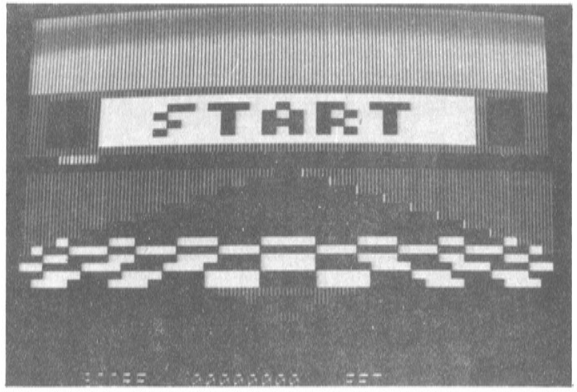
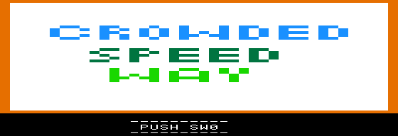

1. The race
The original editors describe a race around Jeju Island, with Hallasan in the background. The highway is crowded: cars approach along the road, large signs loom at its edges, and a sharp curve can suddenly leave the car badly placed. The scenery moves with the road and your steering, helping a small block-graphics display feel like a much wider world.
You need paddle 0 or the horizontal axis of an Apple II joystick. Press button 0 at the title screen to begin. During the race, that same button is the brake. Use it in short bursts to make room among the traffic. Keep it held down and the brake will burn out; it then stays unusable for the rest of the game.
The score rises as you drive and stops rising while the working brake is held. You have ten cars to use up. After a collision the program flashes an explosion, reduces the allowance, and puts you back on the road. At game over it compares the score with the high score, then lets you start again.


The 1984 article credits an earlier appearance in the January 1983 issue of Japan’s ASCII. That attribution is reported here from the Korean article; the earlier Japanese publication has not been independently checked for this edition.
2. Run it on an Apple II
The supplied image is a bootable 140 KB DOS 3.3 disk in DOS sector order. Mount it as drive 1 and boot. Its HELLO program automatically runs SPEEDWAY-RUN. If DOS is already running with the disk mounted, enter:
RUN SPEEDWAY-RUNUse an Apple II with Applesoft ROMs and at least 48 KB of RAM: an II+, IIe, or compatible machine. Run at normal Apple II speed, about 1 MHz. On a real machine, transfer the image to a 5.25-inch floppy or use a compatible disk-image interface; placing a .dsk file inside a DOS filesystem does not turn it into a boot disk.
Check the paddle’s centre. The original code regards raw paddle readings 48–79 as neutral, with 64 a useful target. Lower values steer left; higher values steer right. An emulator that centres the input at 128 will pull right continuously. Adjust the emulated paddle position or range, or the physical joystick’s trim.
The brief orchard picture at startup belongs to the program: the loader copies it into screen memory, waits, and then starts the game. The move also overwrites Applesoft’s program area. A reset does not leave the BASIC listing intact; reboot to start cleanly.
3. How the program works
Low resolution, a wide road
The article makes a point of using GR rather than high-resolution graphics. In mixed mode the Apple II gives it a 40 × 40 graphics area with four text lines below. Most of the convincing depth comes from the arrangement of the data and the way it is copied.
At startup the program calculates perspective and lane tables in $4000–$53FF. During play it builds twenty separate 256-byte rows in $6000–$73FF. The road is a span of $AA bytes on a $CC background. Traffic, signs, and the player’s car are added to those rows before a 40-column window is copied to the display.
Each lores display byte contains two vertically adjacent colour pixels. The road blitter combines the low nibble of one row buffer with the high nibble of the next, then writes to the Apple II’s interleaved screen addresses. Ten separate 256-byte scenery strips provide the horizon and roadside view. Moving their source index makes the landscape scroll.
The game loop
The recovered loop is short enough to show the order of work. Collision is tested before the player’s car is drawn, so the car’s own pixels do not become obstacles. The road and scenery are copied to the screen only after the row buffers are ready.
game_loop:
jsr clear_road_buffer
jsr advance_road_segment
jsr advance_curve_and_steer
jsr draw_road
jsr update_brake
jsr draw_traffic_in_depth_order
jsr update_left_sign
jsr update_right_sign
jsr check_player_collision
jsr draw_player_car
jsr blit_road_window
jsr blit_scenery
jsr draw_cockpit_details
jsr frame_click
jsr increment_score
jmp game_loopAt update_brake, a working brake subtracts one from the text-based score. The unconditional increment at the end of the loop adds it back, cancelling the usual increase. Score digits are high-bit Apple II characters, not packed BCD.
Where the program lives
| Address | Use |
|---|---|
$0300–$032B | The 44-byte relocation and delay stub. |
$0400–$07FF | The initial orchard page, then the live screen. |
$0800–$0FFF | Math, road/traffic routines, sprites, input, and blitters. |
$1000–$19FF | Ten horizontal scenery strips. |
$1A00–$1FFF | Steering, player/crash sprites, brake, main loop, HUD, and data. |
$2000–$27FF | Game-over and title-screen pages. |
$2800–$29FF | Start overlay, signals, sounds, initialization, and restart. |
$4000–$53FF | Generated perspective and lane tables. |
$6000–$73FF | Generated road/object row buffers. |
The important zero-page variables are named in memory.inc: curvature at $00, signed viewport offset at $01, scenery index at $09, road-section state at $0A–$0D, and brake state at $0E–$10. The two traffic cars use state at $60–$68 and $90–$98; the signs use $70–$75 and $80–$85.
4. From printed bytes to working code
The original procedure was to type an Applesoft loader, enter the long machine-code listing through the monitor, and save the payload at $4400. The restored article preserves what the pages say. A runnable edition needs a separate record of corrections, because a faithful transcription and a working program are different checks.
| Location | Change | Reason |
|---|---|---|
Dump $4BA0–$50AF | Restore 162 omitted rows. | The extracted hex file skipped 1,296 bytes. The supplied disk had 1,183 incorrect bytes in that range, including code and graphics. |
Dump $4993Runtime $0993 | 44 → A4 | Restore LDY $00 before the road-position lookup. |
Dump $4F56Runtime $0F56 | 0B → 08 | Call the random routine at $08F0, rather than sprite data at $0BF0. |
| Applesoft DATA loader | End the move at $69FF. | ROM MOVE uses an inclusive end. The printed $6A00 endpoint copied one extra byte. |
| Disk startup | Add HELLO and an explicit PRINT separator. | The packaged disk boots directly into the repaired loader. |
A note on the printed extra-cars tip. The article suggests changing the byte at $5CD0 to an INC instruction. In this dump, that address contains crash-picture data. The actual decrement is at runtime $1DC0, corresponding to dump address $5DC0. This edition preserves the ten-car logic and does not claim to validate the printed extended-play modification.
The original filename spellings and uncertain source readings remain in the restored Korean article and hex listing. This revised page consistently uses the working filenames SPEEDWAY-RUN and CROWDED SPEED WAY.
5. Build it with cc65
The modern version uses two tools from the cc65 suite: ca65 assembles the 6502 source and ld65 links it at its runtime addresses. No C compiler or C runtime is involved. Python 3 and a2kit generate the BASIC DATA line, tokenize the BASIC programs, and construct a fresh bootable DOS 3.3 disk.
Install GNU Make, ca65/ld65, Python 3, and a2kit so their executables are on your PATH. The build was verified with cc65 V2.19 (git a162565ec) and a2kit 4.4.2. Download the source package, then:
unzip crowded-speedway-source.zip
cd crowded-speedway
make
make verifyThe result is build/speedway.dsk. The archive includes repaired comparison files for make verify. The normal make target builds from Makefile, src/, and tools/ alone; it does not extract an old binary or copy a base game disk. a2kit supplies the DOS boot tracks.
In the original scratch workspace, the equivalent commands are:
make -C tmp
make -C tmp verify
# Output: tmp/build/speedway.dskmake clean removes only the project’s build/ directory. make binary assembles the game and loader without packaging a disk. Executable paths can be overridden, for example make CA65=/path/to/ca65.
The Makefile
The BASIC DATA line is generated from the assembled loader.bin. Editing the loader’s assembly therefore changes the bytes that BASIC installs; there is no second hand-maintained byte list to keep in sync.
Complete Makefile
# Build only from editable ca65/BASIC source. The repaired hex/disk are used
# exclusively by the optional `verify` comparison target.
.DEFAULT_GOAL := all
.DELETE_ON_ERROR:
CA65 ?= ca65
LD65 ?= ld65
A2KIT ?= a2kit
PYTHON ?= python3
BUILD := build
.PHONY: all disk binary verify clean
all: disk
disk: $(BUILD)/speedway.dsk
binary: $(BUILD)/speedway.bin $(BUILD)/loader.bin
$(BUILD):
mkdir -p "$@"
$(BUILD)/speedway.o: src/speedway.s $(wildcard src/*.inc) | $(BUILD)
$(CA65) -g -I src -l $(BUILD)/speedway.lst -o "$@" "$<"
$(BUILD)/speedway.bin: $(BUILD)/speedway.o src/speedway.cfg
$(LD65) -C src/speedway.cfg -m $(BUILD)/speedway.map \
-Ln $(BUILD)/speedway.lbl --dbgfile $(BUILD)/speedway.dbg -o "$@" "$<"
$(BUILD)/loader.o: src/loader.s | $(BUILD)
$(CA65) -g -l $(BUILD)/loader.lst -o "$@" "$<"
$(BUILD)/loader.bin: $(BUILD)/loader.o src/loader.cfg
$(LD65) -C src/loader.cfg -m $(BUILD)/loader.map \
-Ln $(BUILD)/loader.lbl -o "$@" "$<"
$(BUILD)/speedway.dsk: $(BUILD)/speedway.bin $(BUILD)/loader.bin \
src/speedway-run.bas.in src/hello.bas tools/package_disk.py
$(PYTHON) tools/package_disk.py --a2kit "$(A2KIT)" \
--payload $(BUILD)/speedway.bin --loader $(BUILD)/loader.bin \
--template src/speedway-run.bas.in --hello src/hello.bas --output "$@"
# Strict restoration check: intentional changes to code/assets may fail this.
verify: all
$(PYTHON) tools/verify_build.py --build $(BUILD) \
--hex "crowded speed way.hex" --basic speedway-run.bas --disk speedway.dsk
clean:
rm -rf -- $(BUILD)6. Reading the disassembly
Assemble for the address where the code will run
The payload is loaded at $4400–$69FF, but executed at $0400–$29FF. All source labels, branches, and absolute references use the second range. Add $4000 to a runtime address to find its byte in the monitor dump.
# Labels use runtime addresses. DOS loads the resulting raw bytes at $4400;
# the $0300 relocation stub moves them down by $4000 before entry at $2970.
MEMORY {
RUNTIME: start = $0400, size = $2600, type = rw, file = %O;
}
SEGMENTS {
PAYLOAD: load = RUNTIME, type = ro;
}The separate loader at $0300 sets the monitor’s source, end, and destination pointers, calls MOVE at $FE2C, delays, and jumps to game_entry at $2970. Its complete source appears below. The raw payload is not meant to be BRUN at its staging address.
Code where there is code; bytes where there are pictures
Following calls, jumps, branches, and fallthrough from $2970 identifies 1,281 reachable instructions occupying 2,673 bytes. Another 11 bytes are two unreferenced instruction fragments. The remaining 7,044 bytes are retained data and padding. The source therefore does not mistake rows of scenery pixels for executable opcodes.
Medium and large traffic sprites use $FF row terminators. Player sprites use zero for transparency. Title and game-over images retain every byte of their 1 KB page layouts, including screen holes. These live in readable .byte includes; the build has no INCBIN dependency.
A crash is a nonlocal jump
The collision checker is called with JSR, but on a collision it jumps directly to handle_crash. The handler starts with two PLA instructions to remove that return address from the stack. After the animation it continues into the next-car path. Rewriting it as an ordinary returning subroutine would change the program’s control flow.
check_player_collision:
; ... test the player footprint ...
jmp handle_crash
handle_crash:
pla ; discard collision checker return address, low byte
pla ; discard high byte
; ... draw crash frames and delay ...
jmp lose_car_and_restartWhat the comments do—and do not—claim
Names such as draw_road and update_brake describe recovered behavior, not original author labels. Uncertain visual details are identified as such. The source also preserves an unusual CMP/STA sequence in the first traffic car’s lookup setup at $0A0A–$0A0D, and labels two unreferenced fragments at $09AB–$09B2 and $295F–$2961. This disassembly adds no further gameplay repairs.
Address assertions keep the fixed layout honest. Same-size instruction and data edits are straightforward; inserting bytes requires accommodating them in padding and checking the fixed-address assumptions. The source’s address/byte comments describe the baseline.
7. What has been verified
- The assembled 9,728-byte payload matches all 1,216 rows of the corrected monitor dump.
- The assembled 44-byte stub matches the repaired BASIC DATA line, and the generated BASIC listing is identical.
- The entire rebuilt 143,360-byte disk matches the working repaired disk, including its filesystem layout.
- Two separate clean source-only builds produced the same disk. A one-byte source-edit probe reached both the binary and the disk; the baseline was restored afterward.
- The repaired disk booted automatically in Apple2TS. In MAME 0.285 on an unenhanced IIe, 575 gameplay updates exercised both steering directions, curves, braking, brake burnout, ten collisions, and game over. Restart preserved the high score, followed by another 80 gameplay updates.
The disassembly build reproduces that exact disk, so it reuses the earlier emulator results. No new emulator run was performed for the source reconstruction or this HTML edition, and a physical-machine test is not claimed.
Build comparison results · Runtime test results
Disk SHA-256:d8c17629896d4e4533bac5c8f3a5b812dc6e0ee19838069e961794338ee57262
8. Complete source listings
Open a listing to read it here, or download the complete package with all includes, linker configurations, Makefile, BASIC template, and packaging scripts. Everything on this page works from local files: no JavaScript, web fonts, or external assets are required.
Complete source ZIP · Routine and coverage index · Detailed reconstruction notes
Complete annotated game disassembly — src/speedway.s
; Crowded Speedway, Dec. 1984: ca65 reconstruction of the REPAIRED dump.
; Source dump addresses $4400-$69FF become runtime $0400-$29FF.
; All instruction/address annotations below use runtime addresses.
; Default source must reproduce the working 9728-byte payload exactly.
; Live code was traced recursively from game_entry ($2970). Two unreferenced
; instruction fragments are identified explicitly. All other bytes are retained
; as data, graphics, or padding; opaque pixels are not treated as opcodes.
; No INCBIN or reference binary is required to assemble this source.
.setcpu "6502"
.include "memory.inc"
.segment "PAYLOAD"
.export game_entry, game_loop, handle_crash, game_over, new_game
payload_start:
.include "initial-screen.inc"
; ----------------------------------------------------------------------------
; Shift/add helper. $50/$51 is the 16-bit addend; $54 supplies bits.
; X+1 iterations build $52/$53. Clobbers A, X, flags and $52-$54; preserves Y.
multiply_shift_add:
.assert * = $0800, lderror, "address drift: multiply_shift_add"
lda #$00 ; $0800 A9 00
sta multiply_result_lo ; $0802 85 52
sta multiply_result_hi ; $0804 85 53
L0806:
.assert * = $0806, lderror, "address drift: L0806"
asl multiply_result_lo ; $0806 06 52
rol multiply_result_hi ; $0808 26 53
rol multiply_bits ; $080A 26 54
bcc L081B ; $080C 90 0D
clc ; $080E 18
lda multiply_result_lo ; $080F A5 52
adc multiply_factor_lo ; $0811 65 50
sta multiply_result_lo ; $0813 85 52
lda multiply_result_hi ; $0815 A5 53
adc multiply_factor_hi ; $0817 65 51
sta multiply_result_hi ; $0819 85 53
L081B:
.assert * = $081B, lderror, "address drift: L081B"
dex ; $081B CA
bpl L0806 ; $081C 10 E8
rts ; $081E 60
; Retained bytes $081F-$081F: alignment/padding; no reachable instructions.
.byte $00 ; $081F / dump $481F
; ----------------------------------------------------------------------------
; Build perspective/curve lookup pages $4000-$53FF for curve indices 1..63.
; Each page represents one of 20 depth rows. Uses the multiply helper and $02-$05.
build_road_positions:
.assert * = $0820, lderror, "address drift: build_road_positions"
lda #$01 ; $0820 A9 01
sta curve_index ; $0822 85 00
L0824:
.assert * = $0824, lderror, "address drift: L0824"
lda #$40 ; $0824 A9 40
sta work_ptr_hi ; $0826 85 03
lda #$00 ; $0828 A9 00
sta work_ptr_lo ; $082A 85 02
sta draw_ptr_lo ; $082C 85 04
sta multiply_factor_lo ; $082E 85 50
L0830:
.assert * = $0830, lderror, "address drift: L0830"
lda #$00 ; $0830 A9 00
sta draw_ptr_hi ; $0832 85 05
lda curve_index ; $0834 A5 00
sec ; $0836 38
sbc #$10 ; $0837 E9 10
bpl L0842 ; $0839 10 07
eor #$FF ; $083B 49 FF
clc ; $083D 18
adc #$01 ; $083E 69 01
inc draw_ptr_hi ; $0840 E6 05
L0842:
.assert * = $0842, lderror, "address drift: L0842"
lsr a ; $0842 4A
ror multiply_factor_lo ; $0843 66 50
lsr a ; $0845 4A
ror multiply_factor_lo ; $0846 66 50
lsr a ; $0848 4A
ror multiply_factor_lo ; $0849 66 50
sta multiply_factor_hi ; $084B 85 51
lda draw_ptr_lo ; $084D A5 04
asl a ; $084F 0A
asl a ; $0850 0A
asl a ; $0851 0A
sta multiply_bits ; $0852 85 54
ldx #$04 ; $0854 A2 04
jsr multiply_shift_add ; $0856 20 00 08
lda #$80 ; $0859 A9 80
ldx draw_ptr_hi ; $085B A6 05
bne L0865 ; $085D D0 06
sec ; $085F 38
sbc multiply_result_hi ; $0860 E5 53
jmp L0868 ; $0862 4C 68 08
L0865:
.assert * = $0865, lderror, "address drift: L0865"
clc ; $0865 18
adc multiply_result_hi ; $0866 65 53
L0868:
.assert * = $0868, lderror, "address drift: L0868"
ldy curve_index ; $0868 A4 00
sta (work_ptr_lo),y ; $086A 91 02
inc draw_ptr_lo ; $086C E6 04
inc work_ptr_hi ; $086E E6 03
lda draw_ptr_lo ; $0870 A5 04
cmp #$14 ; $0872 C9 14
bne L0830 ; $0874 D0 BA
inc curve_index ; $0876 E6 00
lda curve_index ; $0878 A5 00
cmp #$40 ; $087A C9 40
bne L0824 ; $087C D0 A6
rts ; $087E 60
; Retained bytes $087F-$087F: alignment/padding; no reachable instructions.
.byte $00 ; $087F / dump $487F
; ----------------------------------------------------------------------------
; Write depth-dependent road widths at offset zero of pages $4000-$5300.
; Widths are 4*depth+2; the renderer uses this table to fill the road.
build_road_widths:
.assert * = $0880, lderror, "address drift: build_road_widths"
ldx #$40 ; $0880 A2 40
ldy #$00 ; $0882 A0 00
sty work_ptr_lo ; $0884 84 02
stx work_ptr_hi ; $0886 86 03
sty draw_ptr_lo ; $0888 84 04
L088A:
.assert * = $088A, lderror, "address drift: L088A"
lda draw_ptr_lo ; $088A A5 04
asl a ; $088C 0A
asl a ; $088D 0A
clc ; $088E 18
adc #$02 ; $088F 69 02
sta (work_ptr_lo),y ; $0891 91 02
inc work_ptr_hi ; $0893 E6 03
inc draw_ptr_lo ; $0895 E6 04
lda draw_ptr_lo ; $0897 A5 04
cmp #$14 ; $0899 C9 14
bne L088A ; $089B D0 ED
rts ; $089D 60
; Retained bytes $089E-$089F: alignment/padding; no reachable instructions.
.byte $00, $00 ; $089E / dump $489E
; ----------------------------------------------------------------------------
; Build seven 15-entry lane/displacement tables at $4050, $4150, ... $4650.
; The traffic update routines select one table through their path pointer.
build_traffic_paths:
.assert * = $08A0, lderror, "address drift: build_traffic_paths"
lda #$80 ; $08A0 A9 80
sta multiply_factor_lo ; $08A2 85 50
lsr a ; $08A4 4A
sta work_ptr_hi ; $08A5 85 03
lda #$50 ; $08A7 A9 50
sta work_ptr_lo ; $08A9 85 02
lda #$00 ; $08AB A9 00
sta multiply_factor_hi ; $08AD 85 51
sta draw_ptr_lo ; $08AF 85 04
L08B1:
.assert * = $08B1, lderror, "address drift: L08B1"
ldy #$00 ; $08B1 A0 00
L08B3:
.assert * = $08B3, lderror, "address drift: L08B3"
tya ; $08B3 98
asl a ; $08B4 0A
asl a ; $08B5 0A
asl a ; $08B6 0A
asl a ; $08B7 0A
sta multiply_bits ; $08B8 85 54
ldx #$03 ; $08BA A2 03
jsr multiply_shift_add ; $08BC 20 00 08
inc multiply_result_hi ; $08BF E6 53
lda multiply_result_hi ; $08C1 A5 53
sta (work_ptr_lo),y ; $08C3 91 02
iny ; $08C5 C8
cpy #$0F ; $08C6 C0 0F
bne L08B3 ; $08C8 D0 E9
clc ; $08CA 18
lda multiply_factor_lo ; $08CB A5 50
adc #$80 ; $08CD 69 80
sta multiply_factor_lo ; $08CF 85 50
lda multiply_factor_hi ; $08D1 A5 51
adc #$00 ; $08D3 69 00
sta multiply_factor_hi ; $08D5 85 51
inc work_ptr_hi ; $08D7 E6 03
inc draw_ptr_lo ; $08D9 E6 04
lda draw_ptr_lo ; $08DB A5 04
cmp #$07 ; $08DD C9 07
bne L08B1 ; $08DF D0 D0
rts ; $08E1 60
; Retained bytes $08E2-$08EF: alignment/padding; no reachable instructions.
.byte $00, $00, $00, $00, $00, $00, $00, $00 ; $08E2 / dump $48E2
.byte $00, $00, $00, $00, $00, $00 ; $08EA / dump $48EA
; ----------------------------------------------------------------------------
; Read ROM through ($06),Y and XOR with the evolving $4E/$4F pair.
; Returns A; advances $08 and the ROM page on wrap. Not a uniform-RNG claim.
random_byte:
.assert * = $08F0, lderror, "address drift: random_byte"
ldy random_index ; $08F0 A4 08
lda (random_ptr_lo),y ; $08F2 B1 06
eor random_xor_lo ; $08F4 45 4E
eor random_xor_hi ; $08F6 45 4F
inc random_index ; $08F8 E6 08
bne L0912 ; $08FA D0 16
inc random_ptr_hi ; $08FC E6 07
bne L0912 ; $08FE D0 12
inc random_xor_lo ; $0900 E6 4E
bne reset_random_cursor ; $0902 D0 02
inc random_xor_hi ; $0904 E6 4F
; ----------------------------------------------------------------------------
; Set the ROM stream cursor to $E000 and index zero; preserves A with PHA/PLA.
; The XOR seed bytes $4E/$4F are deliberately not initialized here.
reset_random_cursor:
.assert * = $0906, lderror, "address drift: reset_random_cursor"
pha ; $0906 48
lda #$E0 ; $0907 A9 E0
sta random_ptr_hi ; $0909 85 07
lda #$00 ; $090B A9 00
sta random_ptr_lo ; $090D 85 06
sta random_index ; $090F 85 08
pla ; $0911 68
L0912:
.assert * = $0912, lderror, "address drift: L0912"
rts ; $0912 60
; Retained bytes $0913-$091F: alignment/padding; no reachable instructions.
.byte $00, $00, $00, $00, $00, $00, $00, $00 ; $0913 / dump $4913
.byte $00, $00, $00, $00, $00 ; $091B / dump $491B
; ----------------------------------------------------------------------------
; Fill twenty 256-byte row buffers at $6000-$73FF with $CC.
; Each byte initially holds background color 12 in both lores nibbles.
clear_road_buffer:
.assert * = $0920, lderror, "address drift: clear_road_buffer"
lda #$CC ; $0920 A9 CC
ldx #$00 ; $0922 A2 00
L0924:
.assert * = $0924, lderror, "address drift: L0924"
sta $6000,x ; $0924 9D 00 60
sta $6100,x ; $0927 9D 00 61
sta $6200,x ; $092A 9D 00 62
sta $6300,x ; $092D 9D 00 63
sta $6400,x ; $0930 9D 00 64
sta $6500,x ; $0933 9D 00 65
sta $6600,x ; $0936 9D 00 66
sta $6700,x ; $0939 9D 00 67
sta $6800,x ; $093C 9D 00 68
sta $6900,x ; $093F 9D 00 69
sta $6A00,x ; $0942 9D 00 6A
sta $6B00,x ; $0945 9D 00 6B
sta $6C00,x ; $0948 9D 00 6C
sta $6D00,x ; $094B 9D 00 6D
sta $6E00,x ; $094E 9D 00 6E
sta $6F00,x ; $0951 9D 00 6F
sta $7000,x ; $0954 9D 00 70
sta $7100,x ; $0957 9D 00 71
sta $7200,x ; $095A 9D 00 72
sta $7300,x ; $095D 9D 00 73
inx ; $0960 E8
bne L0924 ; $0961 D0 C1
rts ; $0963 60
; Retained bytes $0964-$096F: alignment/padding; no reachable instructions.
.byte $00, $00, $00, $00, $00, $00, $00, $00 ; $0964 / dump $4964
.byte $00, $00, $00, $00 ; $096C / dump $496C
; ----------------------------------------------------------------------------
; Two short speaker toggles separated by ROM WAIT calls.
; Used for frame pacing and in the crash animation; clobbers A, Y.
frame_click:
.assert * = $0970, lderror, "address drift: frame_click"
ldy #$02 ; $0970 A0 02
L0972:
.assert * = $0972, lderror, "address drift: L0972"
lda #$10 ; $0972 A9 10
jsr ROM_WAIT ; $0974 20 A8 FC
lda SPEAKER ; $0977 AD 30 C0
dey ; $097A 88
bne L0972 ; $097B D0 F5
rts ; $097D 60
; Retained bytes $097E-$097F: alignment/padding; no reachable instructions.
.byte $00, $00 ; $097E / dump $497E
; ----------------------------------------------------------------------------
; For each depth: read width at table offset 0, position at curve_index,
; then fill that span in the corresponding $60xx-$73xx buffer with $AA.
draw_road:
.assert * = $0980, lderror, "address drift: draw_road"
lda #$40 ; $0980 A9 40
sta work_ptr_hi ; $0982 85 03
lda #$60 ; $0984 A9 60
sta draw_ptr_hi ; $0986 85 05
lda #$00 ; $0988 A9 00
sta work_ptr_lo ; $098A 85 02
sta draw_ptr_lo ; $098C 85 04
L098E:
.assert * = $098E, lderror, "address drift: L098E"
ldy #$00 ; $098E A0 00
lda (work_ptr_lo),y ; $0990 B1 02
tax ; $0992 AA
ldy curve_index ; $0993 A4 00 Repair: A4 (LDY curve_index), replacing the literal dump's 44.
lda (work_ptr_lo),y ; $0995 B1 02
tay ; $0997 A8
lda #$AA ; $0998 A9 AA
L099A:
.assert * = $099A, lderror, "address drift: L099A"
sta (draw_ptr_lo),y ; $099A 91 04
iny ; $099C C8
dex ; $099D CA
bne L099A ; $099E D0 FA
L09A0:
.assert * = $09A0, lderror, "address drift: L09A0"
inc work_ptr_hi ; $09A0 E6 03
inc draw_ptr_hi ; $09A2 E6 05
lda work_ptr_hi ; $09A4 A5 03
cmp #$54 ; $09A6 C9 54
bne L098E ; $09A8 D0 E4
rts ; $09AA 60
; ----------------------------------------------------------------------------
; UNREFERENCED instruction fragment. Reads the keyboard and compares SPACE.
; Its literal BNE targets $09A0 inside draw_road, not this polling instruction.
; No caller was found. Preserve these bytes and the unusual branch unchanged.
retained_keyboard_fragment:
.assert * = $09AB, lderror, "address drift: retained_keyboard_fragment"
lda KEYBOARD ; $09AB AD 00 C0
cmp #$A0 ; $09AE C9 A0
bne L09A0 ; $09B0 D0 EE
rts ; $09B2 60
; Retained bytes $09B3-$09BF: alignment/padding; no reachable instructions.
.byte $00, $00, $00, $00, $00, $00, $00, $00 ; $09B3 / dump $49B3
.byte $00, $00, $00, $00, $00 ; $09BB / dump $49BB
; ----------------------------------------------------------------------------
; Return random_byte AND 7, mapping the result 7 to 3.
; The result chooses one of seven lane tables; no statistical guarantee.
random_lane:
.assert * = $09C0, lderror, "address drift: random_lane"
jsr random_byte ; $09C0 20 F0 08
and #$07 ; $09C3 29 07
cmp #$07 ; $09C5 C9 07
beq L09CA ; $09C7 F0 01
rts ; $09C9 60
L09CA:
.assert * = $09CA, lderror, "address drift: L09CA"
lda #$03 ; $09CA A9 03
rts ; $09CC 60
; Retained bytes $09CD-$09CF: alignment/padding; no reachable instructions.
.byte $00, $00, $00 ; $09CD / dump $49CD
; ----------------------------------------------------------------------------
; Return random_byte AND 3; zero permits traffic/sign spawning.
random_two_bits:
.assert * = $09D0, lderror, "address drift: random_two_bits"
jsr random_byte ; $09D0 20 F0 08
and #$03 ; $09D3 29 03
rts ; $09D5 60
; Retained bytes $09D6-$09DF: alignment/padding; no reachable instructions.
.byte $00, $00, $00, $00, $00, $00, $00, $00 ; $09D6 / dump $49D6
.byte $00, $00 ; $09DE / dump $49DE
; ----------------------------------------------------------------------------
; Spawn/update/draw traffic car 1 using state $60-$68.
; Depth chooses small solid marks or four-/six-row perspective sprites.
; $FF terminates each medium/large sprite row; it is not drawn.
update_car_one:
.assert * = $09E0, lderror, "address drift: update_car_one"
lda car_one_active ; $09E0 A5 60
bne L09FC ; $09E2 D0 18
jsr random_two_bits ; $09E4 20 D0 09
bne L0A2F ; $09E7 D0 46
jsr random_lane ; $09E9 20 C0 09
ora #$40 ; $09EC 09 40
sta car_one_path_hi ; $09EE 85 62
lda #$50 ; $09F0 A9 50
sta car_one_path_lo ; $09F2 85 61
lda #$00 ; $09F4 A9 00
sta car_one_depth ; $09F6 85 63
sta car_one_speed ; $09F8 85 64
inc car_one_active ; $09FA E6 60
L09FC:
.assert * = $09FC, lderror, "address drift: L09FC"
lda car_one_speed ; $09FC A5 64
beq L0A06 ; $09FE F0 06
dec car_one_speed ; $0A00 C6 64
inc car_one_depth ; $0A02 E6 63
bne L0A08 ; $0A04 D0 02
L0A06:
.assert * = $0A06, lderror, "address drift: L0A06"
inc car_one_speed ; $0A06 E6 64
L0A08:
.assert * = $0A08, lderror, "address drift: L0A08"
lda car_one_depth ; $0A08 A5 63
cmp #$40 ; $0A0A C9 40 Historical CMP, unlike car 2's ORA #$40: leaves A unchanged.
sta car_one_lookup_hi ; $0A0C 85 68 Stores depth as lookup high byte; suspicious but preserved literally.
lda car_one_depth ; $0A0E A5 63
ora #$60 ; $0A10 09 60
sta car_one_draw_hi ; $0A12 85 66
lda #$00 ; $0A14 A9 00
sta car_one_draw_lo ; $0A16 85 65
sta car_one_lookup_lo ; $0A18 85 67
clc ; $0A1A 18
ldy curve_index ; $0A1B A4 00
lda (car_one_lookup_lo),y ; $0A1D B1 67
ldy car_one_depth ; $0A1F A4 63
adc (car_one_path_lo),y ; $0A21 71 61
sta work_ptr_lo ; $0A23 85 02
lda car_one_depth ; $0A25 A5 63
cmp #$0F ; $0A27 C9 0F
bmi L0A30 ; $0A29 30 05
lda #$00 ; $0A2B A9 00
sta car_one_active ; $0A2D 85 60
L0A2F:
.assert * = $0A2F, lderror, "address drift: L0A2F"
rts ; $0A2F 60
L0A30:
.assert * = $0A30, lderror, "address drift: L0A30"
cmp #$0A ; $0A30 C9 0A
bpl L0A9B ; $0A32 10 67
cmp #$06 ; $0A34 C9 06
bpl L0A67 ; $0A36 10 2F
cmp #$03 ; $0A38 C9 03
bpl L0A46 ; $0A3A 10 0A
ldy work_ptr_lo ; $0A3C A4 02
lda #$66 ; $0A3E A9 66
sta (car_one_draw_lo),y ; $0A40 91 65
iny ; $0A42 C8
sta (car_one_draw_lo),y ; $0A43 91 65
rts ; $0A45 60
L0A46:
.assert * = $0A46, lderror, "address drift: L0A46"
dec work_ptr_lo ; $0A46 C6 02
ldy work_ptr_lo ; $0A48 A4 02
lda #$66 ; $0A4A A9 66
sta (car_one_draw_lo),y ; $0A4C 91 65
iny ; $0A4E C8
sta (car_one_draw_lo),y ; $0A4F 91 65
iny ; $0A51 C8
sta (car_one_draw_lo),y ; $0A52 91 65
inc car_one_draw_hi ; $0A54 E6 66
ldy work_ptr_lo ; $0A56 A4 02
lda #$00 ; $0A58 A9 00
sta (car_one_draw_lo),y ; $0A5A 91 65
iny ; $0A5C C8
lda #$11 ; $0A5D A9 11
sta (car_one_draw_lo),y ; $0A5F 91 65
iny ; $0A61 C8
lda #$00 ; $0A62 A9 00
sta (car_one_draw_lo),y ; $0A64 91 65
rts ; $0A66 60
L0A67:
.assert * = $0A67, lderror, "address drift: L0A67"
dec work_ptr_lo ; $0A67 C6 02
dec work_ptr_lo ; $0A69 C6 02
dec work_ptr_lo ; $0A6B C6 02
lda curve_index ; $0A6D A5 00
cmp #$10 ; $0A6F C9 10
bmi L0A7F ; $0A71 30 0C
cmp #$31 ; $0A73 C9 31
bpl L0A7B ; $0A75 10 04
ldx #$00 ; $0A77 A2 00
beq L0A81 ; $0A79 F0 06
L0A7B:
.assert * = $0A7B, lderror, "address drift: L0A7B"
ldx #$20 ; $0A7B A2 20
bne L0A81 ; $0A7D D0 02
L0A7F:
.assert * = $0A7F, lderror, "address drift: L0A7F"
ldx #$40 ; $0A7F A2 40
L0A81:
.assert * = $0A81, lderror, "address drift: L0A81"
lda #$04 ; $0A81 A9 04
sta work_ptr_hi ; $0A83 85 03
L0A85:
.assert * = $0A85, lderror, "address drift: L0A85"
ldy work_ptr_lo ; $0A85 A4 02
L0A87:
.assert * = $0A87, lderror, "address drift: L0A87"
lda traffic_medium_sprites,x ; $0A87 BD D0 0A
inx ; $0A8A E8
cmp #$FF ; $0A8B C9 FF
beq L0A94 ; $0A8D F0 05
sta (car_one_draw_lo),y ; $0A8F 91 65
iny ; $0A91 C8
bne L0A87 ; $0A92 D0 F3
L0A94:
.assert * = $0A94, lderror, "address drift: L0A94"
inc car_one_draw_hi ; $0A94 E6 66
dec work_ptr_hi ; $0A96 C6 03
bne L0A85 ; $0A98 D0 EB
rts ; $0A9A 60
L0A9B:
.assert * = $0A9B, lderror, "address drift: L0A9B"
sec ; $0A9B 38
lda work_ptr_lo ; $0A9C A5 02
sbc #$04 ; $0A9E E9 04
sta work_ptr_lo ; $0AA0 85 02
lda curve_index ; $0AA2 A5 00
cmp #$10 ; $0AA4 C9 10
bmi L0AB4 ; $0AA6 30 0C
cmp #$31 ; $0AA8 C9 31
bpl L0AB0 ; $0AAA 10 04
ldx #$00 ; $0AAC A2 00
beq L0AB6 ; $0AAE F0 06
L0AB0:
.assert * = $0AB0, lderror, "address drift: L0AB0"
ldx #$42 ; $0AB0 A2 42
bne L0AB6 ; $0AB2 D0 02
L0AB4:
.assert * = $0AB4, lderror, "address drift: L0AB4"
ldx #$84 ; $0AB4 A2 84
L0AB6:
.assert * = $0AB6, lderror, "address drift: L0AB6"
lda #$06 ; $0AB6 A9 06
sta work_ptr_hi ; $0AB8 85 03
L0ABA:
.assert * = $0ABA, lderror, "address drift: L0ABA"
ldy work_ptr_lo ; $0ABA A4 02
L0ABC:
.assert * = $0ABC, lderror, "address drift: L0ABC"
lda traffic_large_sprites,x ; $0ABC BD 30 0B
inx ; $0ABF E8
cmp #$FF ; $0AC0 C9 FF
beq L0AC9 ; $0AC2 F0 05
sta (car_one_draw_lo),y ; $0AC4 91 65
iny ; $0AC6 C8
bne L0ABC ; $0AC7 D0 F3
L0AC9:
.assert * = $0AC9, lderror, "address drift: L0AC9"
inc car_one_draw_hi ; $0AC9 E6 66
dec work_ptr_hi ; $0ACB C6 03
bne L0ABA ; $0ACD D0 EB
rts ; $0ACF 60
.include "traffic-sprites.inc"
; ----------------------------------------------------------------------------
; Spawn/update a left-side white sign in the row buffers using $70-$75.
; The sign grows from a point to a 4/6/8-row block as depth increases.
update_left_sign:
.assert * = $0C00, lderror, "address drift: update_left_sign"
lda left_sign_active ; $0C00 A5 70
bne L0C0F ; $0C02 D0 0B
jsr random_two_bits ; $0C04 20 D0 09
bne L0C35 ; $0C07 D0 2C
lda #$FF ; $0C09 A9 FF
sta left_sign_active ; $0C0B 85 70
sta left_sign_depth ; $0C0D 85 71
L0C0F:
.assert * = $0C0F, lderror, "address drift: L0C0F"
inc left_sign_depth ; $0C0F E6 71
lda left_sign_depth ; $0C11 A5 71
ora #$60 ; $0C13 09 60
sta left_sign_draw_hi ; $0C15 85 73
lda left_sign_depth ; $0C17 A5 71
ora #$40 ; $0C19 09 40
sta left_sign_lookup_hi ; $0C1B 85 75
lda #$00 ; $0C1D A9 00
sta left_sign_draw_lo ; $0C1F 85 72
sta left_sign_lookup_lo ; $0C21 85 74
ldy curve_index ; $0C23 A4 00
lda (left_sign_lookup_lo),y ; $0C25 B1 74
sta work_ptr_lo ; $0C27 85 02
dec work_ptr_lo ; $0C29 C6 02
lda left_sign_depth ; $0C2B A5 71
cmp #$14 ; $0C2D C9 14
bmi L0C36 ; $0C2F 30 05
lda #$00 ; $0C31 A9 00
sta left_sign_active ; $0C33 85 70
L0C35:
.assert * = $0C35, lderror, "address drift: L0C35"
rts ; $0C35 60
L0C36:
.assert * = $0C36, lderror, "address drift: L0C36"
cmp #$0F ; $0C36 C9 0F
bpl L0C67 ; $0C38 10 2D
cmp #$0A ; $0C3A C9 0A
bpl L0C63 ; $0C3C 10 25
cmp #$06 ; $0C3E C9 06
bpl L0C5F ; $0C40 10 1D
cmp #$03 ; $0C42 C9 03
bpl L0C4D ; $0C44 10 07
ldy work_ptr_lo ; $0C46 A4 02
lda #$FF ; $0C48 A9 FF
sta (left_sign_draw_lo),y ; $0C4A 91 72
rts ; $0C4C 60
L0C4D:
.assert * = $0C4D, lderror, "address drift: L0C4D"
ldy work_ptr_lo ; $0C4D A4 02
dey ; $0C4F 88
lda #$FF ; $0C50 A9 FF
sta (left_sign_draw_lo),y ; $0C52 91 72
dey ; $0C54 88
sta (left_sign_draw_lo),y ; $0C55 91 72
dec left_sign_draw_hi ; $0C57 C6 73
sta (left_sign_draw_lo),y ; $0C59 91 72
iny ; $0C5B C8
sta (left_sign_draw_lo),y ; $0C5C 91 72
rts ; $0C5E 60
L0C5F:
.assert * = $0C5F, lderror, "address drift: L0C5F"
lda #$04 ; $0C5F A9 04
bne L0C69 ; $0C61 D0 06
L0C63:
.assert * = $0C63, lderror, "address drift: L0C63"
lda #$06 ; $0C63 A9 06
bne L0C69 ; $0C65 D0 02
L0C67:
.assert * = $0C67, lderror, "address drift: L0C67"
lda #$08 ; $0C67 A9 08
L0C69:
.assert * = $0C69, lderror, "address drift: L0C69"
sta work_ptr_hi ; $0C69 85 03
sta draw_ptr_lo ; $0C6B 85 04
dec work_ptr_lo ; $0C6D C6 02
lda #$FF ; $0C6F A9 FF
L0C71:
.assert * = $0C71, lderror, "address drift: L0C71"
ldx draw_ptr_lo ; $0C71 A6 04
ldy work_ptr_lo ; $0C73 A4 02
L0C75:
.assert * = $0C75, lderror, "address drift: L0C75"
sta (left_sign_draw_lo),y ; $0C75 91 72
dey ; $0C77 88
dex ; $0C78 CA
bne L0C75 ; $0C79 D0 FA
dec left_sign_draw_hi ; $0C7B C6 73
dec work_ptr_hi ; $0C7D C6 03
bne L0C71 ; $0C7F D0 F0
rts ; $0C81 60
; Retained bytes $0C82-$0C8F: alignment/padding; no reachable instructions.
.byte $00, $00, $00, $00, $00, $00, $00, $00 ; $0C82 / dump $4C82
.byte $00, $00, $00, $00, $00, $00 ; $0C8A / dump $4C8A
; ----------------------------------------------------------------------------
; Right-side counterpart of update_left_sign; state lives at $80-$85.
update_right_sign:
.assert * = $0C90, lderror, "address drift: update_right_sign"
lda right_sign_active ; $0C90 A5 80
bne L0C9F ; $0C92 D0 0B
jsr random_two_bits ; $0C94 20 D0 09
bne L0CC6 ; $0C97 D0 2D
lda #$FF ; $0C99 A9 FF
sta right_sign_active ; $0C9B 85 80
sta right_sign_depth ; $0C9D 85 81
L0C9F:
.assert * = $0C9F, lderror, "address drift: L0C9F"
inc right_sign_depth ; $0C9F E6 81
lda right_sign_depth ; $0CA1 A5 81
ora #$60 ; $0CA3 09 60
sta right_sign_draw_hi ; $0CA5 85 83
lda right_sign_depth ; $0CA7 A5 81
ora #$40 ; $0CA9 09 40
sta right_sign_lookup_hi ; $0CAB 85 85
ldy #$00 ; $0CAD A0 00
sty right_sign_draw_lo ; $0CAF 84 82
sty right_sign_lookup_lo ; $0CB1 84 84
lda (right_sign_lookup_lo),y ; $0CB3 B1 84
clc ; $0CB5 18
ldy curve_index ; $0CB6 A4 00
adc (right_sign_lookup_lo),y ; $0CB8 71 84
sta work_ptr_lo ; $0CBA 85 02
lda right_sign_depth ; $0CBC A5 81
cmp #$14 ; $0CBE C9 14
bmi L0CC7 ; $0CC0 30 05
lda #$00 ; $0CC2 A9 00
sta right_sign_active ; $0CC4 85 80
L0CC6:
.assert * = $0CC6, lderror, "address drift: L0CC6"
rts ; $0CC6 60
L0CC7:
.assert * = $0CC7, lderror, "address drift: L0CC7"
cmp #$0F ; $0CC7 C9 0F
bpl L0CF8 ; $0CC9 10 2D
cmp #$0A ; $0CCB C9 0A
bpl L0CF4 ; $0CCD 10 25
cmp #$06 ; $0CCF C9 06
bpl L0CF0 ; $0CD1 10 1D
cmp #$03 ; $0CD3 C9 03
bpl L0CDE ; $0CD5 10 07
ldy work_ptr_lo ; $0CD7 A4 02
lda #$FF ; $0CD9 A9 FF
sta (right_sign_draw_lo),y ; $0CDB 91 82
rts ; $0CDD 60
L0CDE:
.assert * = $0CDE, lderror, "address drift: L0CDE"
ldy work_ptr_lo ; $0CDE A4 02
iny ; $0CE0 C8
lda #$FF ; $0CE1 A9 FF
sta (right_sign_draw_lo),y ; $0CE3 91 82
iny ; $0CE5 C8
sta (right_sign_draw_lo),y ; $0CE6 91 82
dec right_sign_draw_hi ; $0CE8 C6 83
sta (right_sign_draw_lo),y ; $0CEA 91 82
dey ; $0CEC 88
sta (right_sign_draw_lo),y ; $0CED 91 82
rts ; $0CEF 60
L0CF0:
.assert * = $0CF0, lderror, "address drift: L0CF0"
lda #$04 ; $0CF0 A9 04
bne L0CFA ; $0CF2 D0 06
L0CF4:
.assert * = $0CF4, lderror, "address drift: L0CF4"
lda #$06 ; $0CF4 A9 06
bne L0CFA ; $0CF6 D0 02
L0CF8:
.assert * = $0CF8, lderror, "address drift: L0CF8"
lda #$08 ; $0CF8 A9 08
L0CFA:
.assert * = $0CFA, lderror, "address drift: L0CFA"
sta work_ptr_hi ; $0CFA 85 03
sta draw_ptr_lo ; $0CFC 85 04
inc work_ptr_lo ; $0CFE E6 02
lda #$FF ; $0D00 A9 FF
L0D02:
.assert * = $0D02, lderror, "address drift: L0D02"
ldx draw_ptr_lo ; $0D02 A6 04
ldy work_ptr_lo ; $0D04 A4 02
L0D06:
.assert * = $0D06, lderror, "address drift: L0D06"
sta (right_sign_draw_lo),y ; $0D06 91 82
iny ; $0D08 C8
dex ; $0D09 CA
bne L0D06 ; $0D0A D0 FA
dec right_sign_draw_hi ; $0D0C C6 83
dec work_ptr_hi ; $0D0E C6 03
bne L0D02 ; $0D10 D0 F0
rts ; $0D12 60
; Retained bytes $0D13-$0D1F: alignment/padding; no reachable instructions.
.byte $00, $00, $00, $00, $00, $00, $00, $00 ; $0D13 / dump $4D13
.byte $00, $00, $00, $00, $00 ; $0D1B / dump $4D1B
; ----------------------------------------------------------------------------
; Spawn/update/draw traffic car 2 using state $90-$98.
; Shares the medium/large traffic sprite tables with update_car_one.
update_car_two:
.assert * = $0D20, lderror, "address drift: update_car_two"
lda car_two_active ; $0D20 A5 90
bne L0D3C ; $0D22 D0 18
jsr random_two_bits ; $0D24 20 D0 09
bne L0D6F ; $0D27 D0 46
jsr random_lane ; $0D29 20 C0 09
ora #$40 ; $0D2C 09 40
sta car_two_path_hi ; $0D2E 85 92
lda #$50 ; $0D30 A9 50
sta car_two_path_lo ; $0D32 85 91
lda #$00 ; $0D34 A9 00
sta car_two_depth ; $0D36 85 93
sta car_two_speed ; $0D38 85 94
inc car_two_active ; $0D3A E6 90
L0D3C:
.assert * = $0D3C, lderror, "address drift: L0D3C"
lda car_two_speed ; $0D3C A5 94
beq L0D46 ; $0D3E F0 06
dec car_two_speed ; $0D40 C6 94
inc car_two_depth ; $0D42 E6 93
bne L0D48 ; $0D44 D0 02
L0D46:
.assert * = $0D46, lderror, "address drift: L0D46"
inc car_two_speed ; $0D46 E6 94
L0D48:
.assert * = $0D48, lderror, "address drift: L0D48"
lda car_two_depth ; $0D48 A5 93
ora #$40 ; $0D4A 09 40
sta car_two_lookup_hi ; $0D4C 85 98
lda car_two_depth ; $0D4E A5 93
ora #$60 ; $0D50 09 60
sta car_two_draw_hi ; $0D52 85 96
lda #$00 ; $0D54 A9 00
sta car_two_draw_lo ; $0D56 85 95
sta car_two_lookup_lo ; $0D58 85 97
clc ; $0D5A 18
ldy curve_index ; $0D5B A4 00
lda (car_two_lookup_lo),y ; $0D5D B1 97
ldy car_two_depth ; $0D5F A4 93
adc (car_two_path_lo),y ; $0D61 71 91
sta work_ptr_lo ; $0D63 85 02
lda car_two_depth ; $0D65 A5 93
cmp #$0F ; $0D67 C9 0F
bmi L0D70 ; $0D69 30 05
lda #$00 ; $0D6B A9 00
sta car_two_active ; $0D6D 85 90
L0D6F:
.assert * = $0D6F, lderror, "address drift: L0D6F"
rts ; $0D6F 60
L0D70:
.assert * = $0D70, lderror, "address drift: L0D70"
cmp #$0A ; $0D70 C9 0A
bpl L0DDB ; $0D72 10 67
cmp #$06 ; $0D74 C9 06
bpl L0DA7 ; $0D76 10 2F
cmp #$03 ; $0D78 C9 03
bpl L0D86 ; $0D7A 10 0A
ldy work_ptr_lo ; $0D7C A4 02
lda #$66 ; $0D7E A9 66
sta (car_two_draw_lo),y ; $0D80 91 95
iny ; $0D82 C8
sta (car_two_draw_lo),y ; $0D83 91 95
rts ; $0D85 60
L0D86:
.assert * = $0D86, lderror, "address drift: L0D86"
dec work_ptr_lo ; $0D86 C6 02
ldy work_ptr_lo ; $0D88 A4 02
lda #$66 ; $0D8A A9 66
sta (car_two_draw_lo),y ; $0D8C 91 95
iny ; $0D8E C8
sta (car_two_draw_lo),y ; $0D8F 91 95
iny ; $0D91 C8
sta (car_two_draw_lo),y ; $0D92 91 95
inc car_two_draw_hi ; $0D94 E6 96
ldy work_ptr_lo ; $0D96 A4 02
lda #$00 ; $0D98 A9 00
sta (car_two_draw_lo),y ; $0D9A 91 95
iny ; $0D9C C8
lda #$11 ; $0D9D A9 11
sta (car_two_draw_lo),y ; $0D9F 91 95
iny ; $0DA1 C8
lda #$00 ; $0DA2 A9 00
sta (car_two_draw_lo),y ; $0DA4 91 95
rts ; $0DA6 60
L0DA7:
.assert * = $0DA7, lderror, "address drift: L0DA7"
dec work_ptr_lo ; $0DA7 C6 02
dec work_ptr_lo ; $0DA9 C6 02
dec work_ptr_lo ; $0DAB C6 02
lda curve_index ; $0DAD A5 00
cmp #$10 ; $0DAF C9 10
bmi L0DBF ; $0DB1 30 0C
cmp #$31 ; $0DB3 C9 31
bpl L0DBB ; $0DB5 10 04
ldx #$00 ; $0DB7 A2 00
beq L0DC1 ; $0DB9 F0 06
L0DBB:
.assert * = $0DBB, lderror, "address drift: L0DBB"
ldx #$20 ; $0DBB A2 20
bne L0DC1 ; $0DBD D0 02
L0DBF:
.assert * = $0DBF, lderror, "address drift: L0DBF"
ldx #$40 ; $0DBF A2 40
L0DC1:
.assert * = $0DC1, lderror, "address drift: L0DC1"
lda #$04 ; $0DC1 A9 04
sta work_ptr_hi ; $0DC3 85 03
L0DC5:
.assert * = $0DC5, lderror, "address drift: L0DC5"
ldy work_ptr_lo ; $0DC5 A4 02
L0DC7:
.assert * = $0DC7, lderror, "address drift: L0DC7"
lda traffic_medium_sprites,x ; $0DC7 BD D0 0A
inx ; $0DCA E8
cmp #$FF ; $0DCB C9 FF
beq L0DD4 ; $0DCD F0 05
sta (car_two_draw_lo),y ; $0DCF 91 95
iny ; $0DD1 C8
bne L0DC7 ; $0DD2 D0 F3
L0DD4:
.assert * = $0DD4, lderror, "address drift: L0DD4"
inc car_two_draw_hi ; $0DD4 E6 96
dec work_ptr_hi ; $0DD6 C6 03
bne L0DC5 ; $0DD8 D0 EB
rts ; $0DDA 60
L0DDB:
.assert * = $0DDB, lderror, "address drift: L0DDB"
sec ; $0DDB 38
lda work_ptr_lo ; $0DDC A5 02
sbc #$04 ; $0DDE E9 04
sta work_ptr_lo ; $0DE0 85 02
lda curve_index ; $0DE2 A5 00
cmp #$10 ; $0DE4 C9 10
bmi L0DF4 ; $0DE6 30 0C
cmp #$31 ; $0DE8 C9 31
bpl L0DF0 ; $0DEA 10 04
ldx #$00 ; $0DEC A2 00
beq L0DF6 ; $0DEE F0 06
L0DF0:
.assert * = $0DF0, lderror, "address drift: L0DF0"
ldx #$42 ; $0DF0 A2 42
bne L0DF6 ; $0DF2 D0 02
L0DF4:
.assert * = $0DF4, lderror, "address drift: L0DF4"
ldx #$84 ; $0DF4 A2 84
L0DF6:
.assert * = $0DF6, lderror, "address drift: L0DF6"
lda #$06 ; $0DF6 A9 06
sta work_ptr_hi ; $0DF8 85 03
L0DFA:
.assert * = $0DFA, lderror, "address drift: L0DFA"
ldy work_ptr_lo ; $0DFA A4 02
L0DFC:
.assert * = $0DFC, lderror, "address drift: L0DFC"
lda traffic_large_sprites,x ; $0DFC BD 30 0B
inx ; $0DFF E8
cmp #$FF ; $0E00 C9 FF
beq L0E09 ; $0E02 F0 05
sta (car_two_draw_lo),y ; $0E04 91 95
iny ; $0E06 C8
bne L0DFC ; $0E07 D0 F3
L0E09:
.assert * = $0E09, lderror, "address drift: L0E09"
inc car_two_draw_hi ; $0E09 E6 96
dec work_ptr_hi ; $0E0B C6 03
bne L0DFA ; $0E0D D0 EB
rts ; $0E0F 60
; ----------------------------------------------------------------------------
; Compare the two depth bytes, then update/draw the farther car first.
; Tail JMP lets the second update return directly to the caller.
draw_traffic_in_depth_order:
.assert * = $0E10, lderror, "address drift: draw_traffic_in_depth_order"
lda car_one_depth ; $0E10 A5 63
cmp car_two_depth ; $0E12 C5 93
bmi L0E1C ; $0E14 30 06
jsr update_car_two ; $0E16 20 20 0D
jmp update_car_one ; $0E19 4C E0 09
L0E1C:
.assert * = $0E1C, lderror, "address drift: L0E1C"
jsr update_car_one ; $0E1C 20 E0 09
jmp update_car_two ; $0E1F 4C 20 0D
; Retained bytes $0E22-$0E2F: alignment/padding; no reachable instructions.
.byte $00, $00, $00, $00, $00, $00, $00, $00 ; $0E22 / dump $4E22
.byte $00, $00, $00, $00, $00, $00 ; $0E2A / dump $4E2A
; ----------------------------------------------------------------------------
; Copy a 40-byte viewport from twenty row buffers to lores page 1.
; Pair the low nibble from one row with the high nibble from the next.
; Y starts at view_offset+$94; screen rows use Apple II interleaved addresses.
blit_road_window:
.assert * = $0E30, lderror, "address drift: blit_road_window"
lda view_offset ; $0E30 A5 01
clc ; $0E32 18
adc #$94 ; $0E33 69 94
tay ; $0E35 A8
ldx #$27 ; $0E36 A2 27
L0E38:
.assert * = $0E38, lderror, "address drift: L0E38"
lda $6000,y ; $0E38 B9 00 60
and #$0F ; $0E3B 29 0F
sta work_ptr_lo ; $0E3D 85 02
lda $6100,y ; $0E3F B9 00 61
and #$F0 ; $0E42 29 F0
ora work_ptr_lo ; $0E44 05 02
sta $0528,x ; $0E46 9D 28 05
lda $6200,y ; $0E49 B9 00 62
and #$0F ; $0E4C 29 0F
sta work_ptr_lo ; $0E4E 85 02
lda $6300,y ; $0E50 B9 00 63
and #$F0 ; $0E53 29 F0
ora work_ptr_lo ; $0E55 05 02
sta $05A8,x ; $0E57 9D A8 05
lda $6400,y ; $0E5A B9 00 64
and #$0F ; $0E5D 29 0F
sta work_ptr_lo ; $0E5F 85 02
lda $6500,y ; $0E61 B9 00 65
and #$F0 ; $0E64 29 F0
ora work_ptr_lo ; $0E66 05 02
sta $0628,x ; $0E68 9D 28 06
lda $6600,y ; $0E6B B9 00 66
and #$0F ; $0E6E 29 0F
sta work_ptr_lo ; $0E70 85 02
lda $6700,y ; $0E72 B9 00 67
and #$F0 ; $0E75 29 F0
ora work_ptr_lo ; $0E77 05 02
sta $06A8,x ; $0E79 9D A8 06
lda $6800,y ; $0E7C B9 00 68
and #$0F ; $0E7F 29 0F
sta work_ptr_lo ; $0E81 85 02
lda $6900,y ; $0E83 B9 00 69
and #$F0 ; $0E86 29 F0
ora work_ptr_lo ; $0E88 05 02
sta $0728,x ; $0E8A 9D 28 07
lda $6A00,y ; $0E8D B9 00 6A
and #$0F ; $0E90 29 0F
sta work_ptr_lo ; $0E92 85 02
lda $6B00,y ; $0E94 B9 00 6B
and #$F0 ; $0E97 29 F0
ora work_ptr_lo ; $0E99 05 02
sta $07A8,x ; $0E9B 9D A8 07
lda $6C00,y ; $0E9E B9 00 6C
and #$0F ; $0EA1 29 0F
sta work_ptr_lo ; $0EA3 85 02
lda $6D00,y ; $0EA5 B9 00 6D
and #$F0 ; $0EA8 29 F0
ora work_ptr_lo ; $0EAA 05 02
sta $0450,x ; $0EAC 9D 50 04
lda $6E00,y ; $0EAF B9 00 6E
and #$0F ; $0EB2 29 0F
sta work_ptr_lo ; $0EB4 85 02
lda $6F00,y ; $0EB6 B9 00 6F
and #$F0 ; $0EB9 29 F0
ora work_ptr_lo ; $0EBB 05 02
sta $04D0,x ; $0EBD 9D D0 04
lda $7000,y ; $0EC0 B9 00 70
and #$0F ; $0EC3 29 0F
sta work_ptr_lo ; $0EC5 85 02
lda $7100,y ; $0EC7 B9 00 71
and #$F0 ; $0ECA 29 F0
ora work_ptr_lo ; $0ECC 05 02
sta $0550,x ; $0ECE 9D 50 05
lda $7200,y ; $0ED1 B9 00 72
and #$0F ; $0ED4 29 0F
sta work_ptr_lo ; $0ED6 85 02
lda $7300,y ; $0ED8 B9 00 73
and #$F0 ; $0EDB 29 F0
ora work_ptr_lo ; $0EDD 05 02
sta $05D0,x ; $0EDF 9D D0 05
dey ; $0EE2 88
dex ; $0EE3 CA
bmi L0EE9 ; $0EE4 30 03
jmp L0E38 ; $0EE6 4C 38 0E
L0EE9:
.assert * = $0EE9, lderror, "address drift: L0EE9"
rts ; $0EE9 60
; Retained bytes $0EEA-$0EEF: alignment/padding; no reachable instructions.
.byte $00, $00, $00, $00, $00, $00 ; $0EEA / dump $4EEA
; ----------------------------------------------------------------------------
; Copy 40 columns from ten 256-byte scenery strips at $1000-$19FF.
; scenery_offset is the wrapping source index; destination is lores page 1.
blit_scenery:
.assert * = $0EF0, lderror, "address drift: blit_scenery"
ldy scenery_offset ; $0EF0 A4 09
ldx #$27 ; $0EF2 A2 27
L0EF4:
.assert * = $0EF4, lderror, "address drift: L0EF4"
lda scenery_strip_0,y ; $0EF4 B9 00 10
sta initial_orchard_page,x ; $0EF7 9D 00 04
lda scenery_strip_1,y ; $0EFA B9 00 11
sta $0480,x ; $0EFD 9D 80 04
lda scenery_strip_2,y ; $0F00 B9 00 12
sta $0500,x ; $0F03 9D 00 05
lda scenery_strip_3,y ; $0F06 B9 00 13
sta $0580,x ; $0F09 9D 80 05
lda scenery_strip_4,y ; $0F0C B9 00 14
sta $0600,x ; $0F0F 9D 00 06
lda scenery_strip_5,y ; $0F12 B9 00 15
sta $0680,x ; $0F15 9D 80 06
lda scenery_strip_6,y ; $0F18 B9 00 16
sta $0700,x ; $0F1B 9D 00 07
lda scenery_strip_7,y ; $0F1E B9 00 17
sta $0780,x ; $0F21 9D 80 07
lda scenery_strip_8,y ; $0F24 B9 00 18
sta $0428,x ; $0F27 9D 28 04
lda scenery_strip_9,y ; $0F2A B9 00 19
sta $04A8,x ; $0F2D 9D A8 04
dey ; $0F30 88
dex ; $0F31 CA
bpl L0EF4 ; $0F32 10 C0
rts ; $0F34 60
; Retained bytes $0F35-$0F3F: alignment/padding; no reachable instructions.
.byte $00, $00, $00, $00, $00, $00, $00, $00 ; $0F35 / dump $4F35
.byte $00, $00, $00 ; $0F3D / dump $4F3D
; ----------------------------------------------------------------------------
; Count down segment_steps. Alternate a straight section and a nonzero
; signed turn from random_byte. Durations come from $0C/$0D.
advance_road_segment:
.assert * = $0F40, lderror, "address drift: advance_road_segment"
lda segment_steps ; $0F40 A5 0A
beq L0F47 ; $0F42 F0 03
dec segment_steps ; $0F44 C6 0A
rts ; $0F46 60
L0F47:
.assert * = $0F47, lderror, "address drift: L0F47"
lda segment_turn ; $0F47 A5 0B
beq L0F54 ; $0F49 F0 09
lda #$00 ; $0F4B A9 00
sta segment_turn ; $0F4D 85 0B
lda straight_steps ; $0F4F A5 0C
sta segment_steps ; $0F51 85 0A
rts ; $0F53 60
L0F54:
.assert * = $0F54, lderror, "address drift: L0F54"
jsr random_byte ; $0F54 20 F0 08 Repair: JSR $08F0, replacing the literal dump's JSR $0BF0.
beq L0F54 ; $0F57 F0 FB
sta segment_turn ; $0F59 85 0B
lda curve_steps ; $0F5B A5 0D
sta segment_steps ; $0F5D 85 0A
rts ; $0F5F 60
; ----------------------------------------------------------------------------
; Read paddle 0 with ROM PREAD. After four right shifts, values 3 or 4
; are neutral (raw paddle 48..79). Other values move curve_index within bounds.
steer_on_straight:
.assert * = $0F60, lderror, "address drift: steer_on_straight"
ldx #$00 ; $0F60 A2 00
jsr ROM_PREAD ; $0F62 20 1E FB
tya ; $0F65 98
lsr a ; $0F66 4A Four shifts quantize raw paddle input into 16-value bands.
lsr a ; $0F67 4A
lsr a ; $0F68 4A
lsr a ; $0F69 4A
cmp #$03 ; $0F6A C9 03
bmi L0F7C ; $0F6C 30 0E
cmp #$05 ; $0F6E C9 05
bpl L0F73 ; $0F70 10 01
rts ; $0F72 60
L0F73:
.assert * = $0F73, lderror, "address drift: L0F73"
lda curve_index ; $0F73 A5 00
cmp #$35 ; $0F75 C9 35
bpl L0F7B ; $0F77 10 02
inc curve_index ; $0F79 E6 00
L0F7B:
.assert * = $0F7B, lderror, "address drift: L0F7B"
rts ; $0F7B 60
L0F7C:
.assert * = $0F7C, lderror, "address drift: L0F7C"
lda curve_index ; $0F7C A5 00
cmp #$0C ; $0F7E C9 0C
bmi L0F84 ; $0F80 30 02
dec curve_index ; $0F82 C6 00
L0F84:
.assert * = $0F84, lderror, "address drift: L0F84"
rts ; $0F84 60
; Retained bytes $0F85-$0F8F: alignment/padding; no reachable instructions.
.byte $00, $00, $00, $00, $00, $00, $00, $00 ; $0F85 / dump $4F85
.byte $00, $00, $00 ; $0F8D / dump $4F8D
; ----------------------------------------------------------------------------
; Read paddle 0 and alter the signed view_offset during a turn.
; Extreme readings can move it twice. This uses signed-byte tests, not a clamp.
steer_on_curve:
.assert * = $0F90, lderror, "address drift: steer_on_curve"
ldx #$00 ; $0F90 A2 00
jsr ROM_PREAD ; $0F92 20 1E FB
tya ; $0F95 98
lsr a ; $0F96 4A
lsr a ; $0F97 4A
lsr a ; $0F98 4A
lsr a ; $0F99 4A
cmp #$03 ; $0F9A C9 03
bmi L0FA3 ; $0F9C 30 05
cmp #$05 ; $0F9E C9 05
bpl L0FB7 ; $0FA0 10 15
rts ; $0FA2 60
L0FA3:
.assert * = $0FA3, lderror, "address drift: L0FA3"
ldy view_offset ; $0FA3 A4 01
bpl L0FA8 ; $0FA5 10 01
rts ; $0FA7 60
L0FA8:
.assert * = $0FA8, lderror, "address drift: L0FA8"
dec view_offset ; $0FA8 C6 01
cmp #$01 ; $0FAA C9 01
bmi L0FAF ; $0FAC 30 01
rts ; $0FAE 60
L0FAF:
.assert * = $0FAF, lderror, "address drift: L0FAF"
ldy view_offset ; $0FAF A4 01
bpl L0FB4 ; $0FB1 10 01
rts ; $0FB3 60
L0FB4:
.assert * = $0FB4, lderror, "address drift: L0FB4"
dec view_offset ; $0FB4 C6 01
rts ; $0FB6 60
L0FB7:
.assert * = $0FB7, lderror, "address drift: L0FB7"
ldy view_offset ; $0FB7 A4 01
bmi L0FBC ; $0FB9 30 01
rts ; $0FBB 60
L0FBC:
.assert * = $0FBC, lderror, "address drift: L0FBC"
inc view_offset ; $0FBC E6 01
cmp #$07 ; $0FBE C9 07
bpl L0FC3 ; $0FC0 10 01
rts ; $0FC2 60
L0FC3:
.assert * = $0FC3, lderror, "address drift: L0FC3"
ldy view_offset ; $0FC3 A4 01
bmi L0FC8 ; $0FC5 30 01
rts ; $0FC7 60
L0FC8:
.assert * = $0FC8, lderror, "address drift: L0FC8"
inc view_offset ; $0FC8 E6 01
rts ; $0FCA 60
; Retained bytes $0FCB-$0FCF: alignment/padding; no reachable instructions.
.byte $00, $00, $00, $00, $00 ; $0FCB / dump $4FCB
; ----------------------------------------------------------------------------
; Increment eight high-bit Apple II decimal characters at SCORE_TEXT.
; Carry from the least-significant character toward the left; no BCD mode.
increment_score:
.assert * = $0FD0, lderror, "address drift: increment_score"
ldx #$07 ; $0FD0 A2 07 The main loop always increments; braking first subtracts one.
L0FD2:
.assert * = $0FD2, lderror, "address drift: L0FD2"
lda SCORE_TEXT,x ; $0FD2 BD 5D 07
clc ; $0FD5 18
adc #$01 ; $0FD6 69 01
cmp #$BA ; $0FD8 C9 BA
bmi L0FE4 ; $0FDA 30 08
lda #$B0 ; $0FDC A9 B0
sta SCORE_TEXT,x ; $0FDE 9D 5D 07
dex ; $0FE1 CA
bpl L0FD2 ; $0FE2 10 EE
L0FE4:
.assert * = $0FE4, lderror, "address drift: L0FE4"
sta SCORE_TEXT,x ; $0FE4 9D 5D 07
rts ; $0FE7 60
; Retained bytes $0FE8-$0FFF: alignment/padding; no reachable instructions.
.byte $00, $00, $00, $00, $00, $00, $00, $00 ; $0FE8 / dump $4FE8
.byte $00, $00, $00, $00, $00, $00, $00, $00 ; $0FF0 / dump $4FF0
.byte $00, $00, $00, $00, $00, $00, $00, $00 ; $0FF8 / dump $4FF8
.include "scenery.inc"
; ----------------------------------------------------------------------------
; Apply the current segment turn to road curvature, scenery, and viewport.
; Then tail-call the appropriate paddle steering routine.
advance_curve_and_steer:
.assert * = $1A00, lderror, "address drift: advance_curve_and_steer"
lda segment_turn ; $1A00 A5 0B
beq L1A48 ; $1A02 F0 44
bmi L1A27 ; $1A04 30 21
lda curve_index ; $1A06 A5 00
cmp #$34 ; $1A08 C9 34
bpl L1A18 ; $1A0A 10 0C
inc curve_index ; $1A0C E6 00
dec scenery_offset ; $1A0E C6 09
lda #$A0 ; $1A10 A9 A0
cmp view_offset ; $1A12 C5 01
bpl L1A18 ; $1A14 10 02
dec view_offset ; $1A16 C6 01
L1A18:
.assert * = $1A18, lderror, "address drift: L1A18"
inc scenery_offset ; $1A18 E6 09
inc scenery_offset ; $1A1A E6 09
lda #$A0 ; $1A1C A9 A0
cmp view_offset ; $1A1E C5 01
bpl L1A24 ; $1A20 10 02
dec view_offset ; $1A22 C6 01
L1A24:
.assert * = $1A24, lderror, "address drift: L1A24"
jmp steer_on_curve ; $1A24 4C 90 0F
L1A27:
.assert * = $1A27, lderror, "address drift: L1A27"
lda curve_index ; $1A27 A5 00
cmp #$0B ; $1A29 C9 0B
bmi L1A39 ; $1A2B 30 0C
dec curve_index ; $1A2D C6 00
inc scenery_offset ; $1A2F E6 09
lda #$61 ; $1A31 A9 61
cmp view_offset ; $1A33 C5 01
bmi L1A39 ; $1A35 30 02
inc view_offset ; $1A37 E6 01
L1A39:
.assert * = $1A39, lderror, "address drift: L1A39"
dec scenery_offset ; $1A39 C6 09
dec scenery_offset ; $1A3B C6 09
lda #$61 ; $1A3D A9 61
cmp view_offset ; $1A3F C5 01
bmi L1A45 ; $1A41 30 02
inc view_offset ; $1A43 E6 01
L1A45:
.assert * = $1A45, lderror, "address drift: L1A45"
jmp steer_on_curve ; $1A45 4C 90 0F
L1A48:
.assert * = $1A48, lderror, "address drift: L1A48"
lda view_offset ; $1A48 A5 01
beq L1A52 ; $1A4A F0 06
bmi L1A55 ; $1A4C 30 07
dec view_offset ; $1A4E C6 01
dec scenery_offset ; $1A50 C6 09
L1A52:
.assert * = $1A52, lderror, "address drift: L1A52"
jmp steer_on_straight ; $1A52 4C 60 0F
L1A55:
.assert * = $1A55, lderror, "address drift: L1A55"
inc view_offset ; $1A55 E6 01
inc scenery_offset ; $1A57 E6 09
jmp steer_on_straight ; $1A59 4C 60 0F
; Retained bytes $1A5C-$1A5F: alignment/padding; no reachable instructions.
.byte $00, $00, $00, $00 ; $1A5C / dump $5A5C
; ----------------------------------------------------------------------------
; Select one of three 10-column poses from the sign of view_offset.
; Draw six rows into $6E00-$7300 at $7C+view_offset; zero pixels are transparent.
draw_player_car:
.assert * = $1A60, lderror, "address drift: draw_player_car"
lda view_offset ; $1A60 A5 01
beq L1A6A ; $1A62 F0 06
bpl L1A6E ; $1A64 10 08
ldx #$0A ; $1A66 A2 0A
bne L1A70 ; $1A68 D0 06
L1A6A:
.assert * = $1A6A, lderror, "address drift: L1A6A"
ldx #$00 ; $1A6A A2 00
beq L1A70 ; $1A6C F0 02
L1A6E:
.assert * = $1A6E, lderror, "address drift: L1A6E"
ldx #$14 ; $1A6E A2 14
L1A70:
.assert * = $1A70, lderror, "address drift: L1A70"
lda #$7C ; $1A70 A9 7C
clc ; $1A72 18
adc view_offset ; $1A73 65 01
tay ; $1A75 A8
lda #$0A ; $1A76 A9 0A
sta work_ptr_lo ; $1A78 85 02
L1A7A:
.assert * = $1A7A, lderror, "address drift: L1A7A"
lda player_sprite_row0,x ; $1A7A BD C0 1A
beq L1A82 ; $1A7D F0 03
sta $6E00,y ; $1A7F 99 00 6E
L1A82:
.assert * = $1A82, lderror, "address drift: L1A82"
lda player_sprite_row1,x ; $1A82 BD DE 1A
beq L1A8A ; $1A85 F0 03
sta $6F00,y ; $1A87 99 00 6F
L1A8A:
.assert * = $1A8A, lderror, "address drift: L1A8A"
lda player_sprite_row2,x ; $1A8A BD FC 1A
beq L1A92 ; $1A8D F0 03
sta $7000,y ; $1A8F 99 00 70
L1A92:
.assert * = $1A92, lderror, "address drift: L1A92"
lda player_sprite_row3,x ; $1A92 BD 1A 1B
beq L1A9A ; $1A95 F0 03
sta $7100,y ; $1A97 99 00 71
L1A9A:
.assert * = $1A9A, lderror, "address drift: L1A9A"
lda player_sprite_row4,x ; $1A9A BD 38 1B
beq L1AA2 ; $1A9D F0 03
sta $7200,y ; $1A9F 99 00 72
L1AA2:
.assert * = $1AA2, lderror, "address drift: L1AA2"
lda player_sprite_row5,x ; $1AA2 BD 56 1B
beq L1AAA ; $1AA5 F0 03
sta $7300,y ; $1AA7 99 00 73
L1AAA:
.assert * = $1AAA, lderror, "address drift: L1AAA"
inx ; $1AAA E8
iny ; $1AAB C8
dec work_ptr_lo ; $1AAC C6 02
bne L1A7A ; $1AAE D0 CA
rts ; $1AB0 60
; Retained bytes $1AB1-$1ABF: alignment/padding; no reachable instructions.
.byte $00, $00, $00, $00, $00, $00, $00, $00 ; $1AB1 / dump $5AB1
.byte $00, $00, $00, $00, $00, $00, $00 ; $1AB9 / dump $5AB9
.include "player-sprites.inc"
; ----------------------------------------------------------------------------
; Update small screen details at $055F-$0568 / $05DF-$05E8 according
; to the sign of view_offset. Exact visual meaning is not fully identified.
draw_cockpit_details:
.assert * = $1B80, lderror, "address drift: draw_cockpit_details"
lda #$00 ; $1B80 A9 00
ldx view_offset ; $1B82 A6 01
beq L1BE4 ; $1B84 F0 5E
bpl L1BB6 ; $1B86 10 2E
sta $055F ; $1B88 8D 5F 05
sta $0560 ; $1B8B 8D 60 05
sta $05DF ; $1B8E 8D DF 05
sta $05E0 ; $1B91 8D E0 05
sta $0564 ; $1B94 8D 64 05
sta $0565 ; $1B97 8D 65 05
sta $05E4 ; $1B9A 8D E4 05
sta $05E5 ; $1B9D 8D E5 05
sta $05E6 ; $1BA0 8D E6 05
sta $05E8 ; $1BA3 8D E8 05
lda #$80 ; $1BA6 A9 80
sta $0561 ; $1BA8 8D 61 05
lda #$02 ; $1BAB A9 02
sta $05E1 ; $1BAD 8D E1 05
lda #$09 ; $1BB0 A9 09
sta $0566 ; $1BB2 8D 66 05
rts ; $1BB5 60
L1BB6:
.assert * = $1BB6, lderror, "address drift: L1BB6"
sta $0562 ; $1BB6 8D 62 05
sta $0563 ; $1BB9 8D 63 05
sta $05E2 ; $1BBC 8D E2 05
sta $05E3 ; $1BBF 8D E3 05
sta $0567 ; $1BC2 8D 67 05
sta $0568 ; $1BC5 8D 68 05
sta $05E7 ; $1BC8 8D E7 05
sta $05E8 ; $1BCB 8D E8 05
sta $05E1 ; $1BCE 8D E1 05
sta $05DF ; $1BD1 8D DF 05
lda #$80 ; $1BD4 A9 80
sta $0566 ; $1BD6 8D 66 05
lda #$02 ; $1BD9 A9 02
sta $05E6 ; $1BDB 8D E6 05
lda #$09 ; $1BDE A9 09
sta $0561 ; $1BE0 8D 61 05
rts ; $1BE3 60
L1BE4:
.assert * = $1BE4, lderror, "address drift: L1BE4"
ldx #$02 ; $1BE4 A2 02
L1BE6:
.assert * = $1BE6, lderror, "address drift: L1BE6"
sta $055F,x ; $1BE6 9D 5F 05
sta $05DF,x ; $1BE9 9D DF 05
sta $0566,x ; $1BEC 9D 66 05
sta $05E6,x ; $1BEF 9D E6 05
dex ; $1BF2 CA
bpl L1BE6 ; $1BF3 10 F1
rts ; $1BF5 60
; Retained bytes $1BF6-$1BFF: alignment/padding; no reachable instructions.
.byte $00, $00, $00, $00, $00, $00, $00, $00 ; $1BF6 / dump $5BF6
.byte $00, $00 ; $1BFE / dump $5BFE
; ----------------------------------------------------------------------------
; Subtract one from the same high-bit decimal score text.
; Called while braking so the later increment_score does not increase score.
decrement_score:
.assert * = $1C00, lderror, "address drift: decrement_score"
ldx #$07 ; $1C00 A2 07
L1C02:
.assert * = $1C02, lderror, "address drift: L1C02"
lda SCORE_TEXT,x ; $1C02 BD 5D 07
sec ; $1C05 38
sbc #$01 ; $1C06 E9 01
cmp #$B0 ; $1C08 C9 B0
bpl L1C14 ; $1C0A 10 08
lda #$B9 ; $1C0C A9 B9
sta SCORE_TEXT,x ; $1C0E 9D 5D 07
dex ; $1C11 CA
bpl L1C02 ; $1C12 10 EE
L1C14:
.assert * = $1C14, lderror, "address drift: L1C14"
sta SCORE_TEXT,x ; $1C14 9D 5D 07
rts ; $1C17 60
; Retained bytes $1C18-$1C1F: alignment/padding; no reachable instructions.
.byte $00, $00, $00, $00, $00, $00, $00, $00 ; $1C18 / dump $5C18
; ----------------------------------------------------------------------------
; Read PB0 bit 7. Released brake recovers reserve up to a signed-byte limit.
; Held brake slows active cars once per divider, spends reserve, and sounds.
; When reserve reaches zero, brake_failed stays set until a new game.
update_brake:
.assert * = $1C20, lderror, "address drift: update_brake"
lda PADDLE_BUTTON0 ; $1C20 AD 61 C0
bmi L1C2C ; $1C23 30 07
lda brake_reserve ; $1C25 A5 0F
bmi L1C2B ; $1C27 30 02
inc brake_reserve ; $1C29 E6 0F
L1C2B:
.assert * = $1C2B, lderror, "address drift: L1C2B"
rts ; $1C2B 60
L1C2C:
.assert * = $1C2C, lderror, "address drift: L1C2C"
lda brake_failed ; $1C2C A5 10
bne L1C2B ; $1C2E D0 FB
lda brake_divider ; $1C30 A5 0E
bne L1C50 ; $1C32 D0 1C
lda car_one_active ; $1C34 A5 60
beq L1C40 ; $1C36 F0 08
dec car_one_depth ; $1C38 C6 63
bne L1C40 ; $1C3A D0 04
lda #$00 ; $1C3C A9 00
sta car_one_active ; $1C3E 85 60
L1C40:
.assert * = $1C40, lderror, "address drift: L1C40"
lda car_two_active ; $1C40 A5 90
beq L1C4C ; $1C42 F0 08
dec car_two_depth ; $1C44 C6 93
bne L1C4C ; $1C46 D0 04
lda #$00 ; $1C48 A9 00
sta car_two_active ; $1C4A 85 90
L1C4C:
.assert * = $1C4C, lderror, "address drift: L1C4C"
lda #$04 ; $1C4C A9 04
sta brake_divider ; $1C4E 85 0E
L1C50:
.assert * = $1C50, lderror, "address drift: L1C50"
dec brake_divider ; $1C50 C6 0E
dec brake_reserve ; $1C52 C6 0F
beq L1C66 ; $1C54 F0 10
ldy #$1A ; $1C56 A0 1A
L1C58:
.assert * = $1C58, lderror, "address drift: L1C58"
lda #$05 ; $1C58 A9 05
jsr ROM_WAIT ; $1C5A 20 A8 FC
lda SPEAKER ; $1C5D AD 30 C0
dey ; $1C60 88
bne L1C58 ; $1C61 D0 F5
jmp decrement_score ; $1C63 4C 00 1C Cancel the main loop's later increment while braking.
L1C66:
.assert * = $1C66, lderror, "address drift: L1C66"
inc brake_failed ; $1C66 E6 10 Latch brake failure for the rest of this game.
rts ; $1C68 60
; Retained bytes $1C69-$1C6F: alignment/padding; no reachable instructions.
.byte $00, $00, $00, $00, $00, $00, $00 ; $1C69 / dump $5C69
; ----------------------------------------------------------------------------
; Inspect the player footprint in rows $7200/$7300 before drawing the car.
; Only $AA road and $CC background are allowed. On contact JMP handle_crash;
; that handler discards this routine's JSR return address.
check_player_collision:
.assert * = $1C70, lderror, "address drift: check_player_collision"
lda view_offset ; $1C70 A5 01
beq L1C7C ; $1C72 F0 08
bpl L1C82 ; $1C74 10 0C
lda #$7E ; $1C76 A9 7E
ldx #$08 ; $1C78 A2 08
bne L1C86 ; $1C7A D0 0A
L1C7C:
.assert * = $1C7C, lderror, "address drift: L1C7C"
lda #$7C ; $1C7C A9 7C
ldx #$0A ; $1C7E A2 0A
bne L1C86 ; $1C80 D0 04
L1C82:
.assert * = $1C82, lderror, "address drift: L1C82"
lda #$7C ; $1C82 A9 7C
ldx #$08 ; $1C84 A2 08
L1C86:
.assert * = $1C86, lderror, "address drift: L1C86"
clc ; $1C86 18
adc view_offset ; $1C87 65 01
tay ; $1C89 A8
L1C8A:
.assert * = $1C8A, lderror, "address drift: L1C8A"
lda $7200,y ; $1C8A B9 00 72
cmp #$AA ; $1C8D C9 AA
beq L1C98 ; $1C8F F0 07
cmp #$CC ; $1C91 C9 CC
beq L1C98 ; $1C93 F0 03
jmp handle_crash ; $1C95 4C 70 1D
L1C98:
.assert * = $1C98, lderror, "address drift: L1C98"
lda $7300,y ; $1C98 B9 00 73
cmp #$AA ; $1C9B C9 AA
beq L1CA6 ; $1C9D F0 07
cmp #$CC ; $1C9F C9 CC
beq L1CA6 ; $1CA1 F0 03
jmp handle_crash ; $1CA3 4C 70 1D
L1CA6:
.assert * = $1CA6, lderror, "address drift: L1CA6"
iny ; $1CA6 C8
dex ; $1CA7 CA
bne L1C8A ; $1CA8 D0 E0
rts ; $1CAA 60
; Retained bytes $1CAB-$1CAF: alignment/padding; no reachable instructions.
.byte $00, $00, $00, $00, $00 ; $1CAB / dump $5CAB
.include "crash-sprites.inc"
; ----------------------------------------------------------------------------
; Copy a 16-column, four-byte-row crash picture directly to lores page 1.
draw_crash_frame_a:
.assert * = $1D30, lderror, "address drift: draw_crash_frame_a"
ldx #$0F ; $1D30 A2 0F
L1D32:
.assert * = $1D32, lderror, "address drift: L1D32"
lda crash_a_row0,x ; $1D32 BD B0 1C
sta $045C,x ; $1D35 9D 5C 04
lda crash_a_row1,x ; $1D38 BD C0 1C
sta $04DC,x ; $1D3B 9D DC 04
lda crash_a_row2,x ; $1D3E BD D0 1C
sta $055C,x ; $1D41 9D 5C 05
lda crash_a_row3,x ; $1D44 BD E0 1C
sta $05DC,x ; $1D47 9D DC 05
dex ; $1D4A CA
bpl L1D32 ; $1D4B 10 E5
rts ; $1D4D 60
; Retained bytes $1D4E-$1D4F: alignment/padding; no reachable instructions.
.byte $00, $00 ; $1D4E / dump $5D4E
; ----------------------------------------------------------------------------
; Second crash picture, using the adjacent 64-byte sprite block.
draw_crash_frame_b:
.assert * = $1D50, lderror, "address drift: draw_crash_frame_b"
ldx #$0F ; $1D50 A2 0F
L1D52:
.assert * = $1D52, lderror, "address drift: L1D52"
lda crash_b_row0,x ; $1D52 BD F0 1C
sta $045C,x ; $1D55 9D 5C 04
lda crash_b_row1,x ; $1D58 BD 00 1D
sta $04DC,x ; $1D5B 9D DC 04
lda crash_b_row2,x ; $1D5E BD 10 1D
sta $055C,x ; $1D61 9D 5C 05
lda crash_b_row3,x ; $1D64 BD 20 1D
sta $05DC,x ; $1D67 9D DC 05
dex ; $1D6A CA
bpl L1D52 ; $1D6B 10 E5
rts ; $1D6D 60
; Retained bytes $1D6E-$1D6F: alignment/padding; no reachable instructions.
.byte $00, $00 ; $1D6E / dump $5D6E
; ----------------------------------------------------------------------------
; NONLOCAL entry reached by JMP from check_player_collision.
; PLA/PLA discard that routine's return address, then flash two crash frames.
; After a delay, continue at lose_car_and_restart; this handler does not RTS.
handle_crash:
.assert * = $1D70, lderror, "address drift: handle_crash"
pla ; $1D70 68 Discard the low return-address byte from the collision check's JSR.
pla ; $1D71 68 Discard the high return-address byte; continue without returning.
jsr clear_road_buffer ; $1D72 20 20 09
jsr draw_road ; $1D75 20 80 09
jsr draw_traffic_in_depth_order ; $1D78 20 10 0E
jsr update_left_sign ; $1D7B 20 00 0C
jsr update_right_sign ; $1D7E 20 90 0C
jsr draw_player_car ; $1D81 20 60 1A
jsr draw_cockpit_details ; $1D84 20 80 1B
lda #$30 ; $1D87 A9 30
sta work_ptr_lo ; $1D89 85 02
L1D8B:
.assert * = $1D8B, lderror, "address drift: L1D8B"
jsr draw_crash_frame_a ; $1D8B 20 30 1D
lda #$60 ; $1D8E A9 60
jsr ROM_WAIT ; $1D90 20 A8 FC
jsr frame_click ; $1D93 20 70 09
jsr draw_crash_frame_b ; $1D96 20 50 1D
lda #$60 ; $1D99 A9 60
jsr ROM_WAIT ; $1D9B 20 A8 FC
jsr frame_click ; $1D9E 20 70 09
dec work_ptr_lo ; $1DA1 C6 02
bne L1D8B ; $1DA3 D0 E6
jsr clear_road_buffer ; $1DA5 20 20 09
jsr draw_road ; $1DA8 20 80 09
jsr blit_road_window ; $1DAB 20 30 0E
lda #$0A ; $1DAE A9 0A
sta work_ptr_lo ; $1DB0 85 02
L1DB2:
.assert * = $1DB2, lderror, "address drift: L1DB2"
lda #$FF ; $1DB2 A9 FF
jsr ROM_WAIT ; $1DB4 20 A8 FC
dec work_ptr_lo ; $1DB7 C6 02
bne L1DB2 ; $1DB9 D0 F7
jmp lose_car_and_restart ; $1DBB 4C C0 1D
; Retained bytes $1DBE-$1DBF: alignment/padding; no reachable instructions.
.byte $00, $00 ; $1DBE / dump $5DBE
; ----------------------------------------------------------------------------
; Decrement the high-bit text character at CARS_LEFT_TEXT.
; Start-up template contains a colon ($BA), so the first decrement displays 9.
; After 0, $AF compares below $B0 and reaches game_over (ten cars in total).
lose_car_and_restart:
.assert * = $1DC0, lderror, "address drift: lose_car_and_restart"
dec CARS_LEFT_TEXT ; $1DC0 CE 6E 07
lda CARS_LEFT_TEXT ; $1DC3 AD 6E 07
cmp #$B0 ; $1DC6 C9 B0 High-bit digit zero is $B0; $AF means the final car was used.
bmi game_over ; $1DC8 30 46
lda #$00 ; $1DCA A9 00
sta car_one_active ; $1DCC 85 60
sta left_sign_active ; $1DCE 85 70
sta right_sign_active ; $1DD0 85 80
sta car_two_active ; $1DD2 85 90
; ----------------------------------------------------------------------------
; One gameplay update: clear buffers, advance road/steering, draw road,
; apply brake, update traffic/signs, test collision, draw car, blit scenery/road,
; update cockpit, pace/sound, increment score, repeat.
game_loop:
.assert * = $1DD4, lderror, "address drift: game_loop"
jsr clear_road_buffer ; $1DD4 20 20 09
jsr advance_road_segment ; $1DD7 20 40 0F
jsr advance_curve_and_steer ; $1DDA 20 00 1A
jsr draw_road ; $1DDD 20 80 09
jsr update_brake ; $1DE0 20 20 1C
jsr draw_traffic_in_depth_order ; $1DE3 20 10 0E
jsr update_left_sign ; $1DE6 20 00 0C
jsr update_right_sign ; $1DE9 20 90 0C
jsr check_player_collision ; $1DEC 20 70 1C
jsr draw_player_car ; $1DEF 20 60 1A
jsr blit_road_window ; $1DF2 20 30 0E
jsr blit_scenery ; $1DF5 20 F0 0E
jsr draw_cockpit_details ; $1DF8 20 80 1B
jsr frame_click ; $1DFB 20 70 09
jsr increment_score ; $1DFE 20 D0 0F
jmp game_loop ; $1E01 4C D4 1D
; Retained bytes $1E04-$1E0F: alignment/padding; no reachable instructions.
.byte $00, $00, $00, $00, $00, $00, $00, $00 ; $1E04 / dump $5E04
.byte $00, $00, $00, $00 ; $1E0C / dump $5E0C
; ----------------------------------------------------------------------------
; Compare the eight score digits with the displayed high score, propagating
; borrow from right to left. Save the score in $A0-$A7; update $11-$18 if larger.
; Copy the page at $2000 to the display, then jump to the result presentation.
game_over:
.assert * = $1E10, lderror, "address drift: game_over"
sec ; $1E10 38
ldx #$07 ; $1E11 A2 07
L1E13:
.assert * = $1E13, lderror, "address drift: L1E13"
lda SCORE_TEXT,x ; $1E13 BD 5D 07
sta last_score,x ; $1E16 95 A0
lda HIGH_SCORE_TEXT,x ; $1E18 BD DD 07
sbc SCORE_TEXT,x ; $1E1B FD 5D 07
dex ; $1E1E CA
bpl L1E13 ; $1E1F 10 F2
bcs L1E2D ; $1E21 B0 0A
ldx #$07 ; $1E23 A2 07
L1E25:
.assert * = $1E25, lderror, "address drift: L1E25"
lda SCORE_TEXT,x ; $1E25 BD 5D 07
sta high_score,x ; $1E28 95 11
dex ; $1E2A CA
bpl L1E25 ; $1E2B 10 F8
L1E2D:
.assert * = $1E2D, lderror, "address drift: L1E2D"
lda #$00 ; $1E2D A9 00
sta work_ptr_lo ; $1E2F 85 02
sta draw_ptr_lo ; $1E31 85 04
tay ; $1E33 A8
lda #$20 ; $1E34 A9 20 Pointer high: source game_over_page ($2000).
sta work_ptr_hi ; $1E36 85 03
lda #$04 ; $1E38 A9 04
sta draw_ptr_hi ; $1E3A 85 05
tax ; $1E3C AA
L1E3D:
.assert * = $1E3D, lderror, "address drift: L1E3D"
lda (work_ptr_lo),y ; $1E3D B1 02
sta (draw_ptr_lo),y ; $1E3F 91 04
iny ; $1E41 C8
bne L1E3D ; $1E42 D0 F9
inc work_ptr_hi ; $1E44 E6 03
inc draw_ptr_hi ; $1E46 E6 05
dex ; $1E48 CA
bne L1E3D ; $1E49 D0 F2
jmp present_game_over ; $1E4B 4C D0 29
; Retained bytes $1E4E-$1E4F: alignment/padding; no reachable instructions.
.byte $00, $00 ; $1E4E / dump $5E4E
; ----------------------------------------------------------------------------
; Copy the 1 KB title page at $2400 to screen $0400-$07FF.
; Busy-wait for paddle button 0, then return to the game initializer.
show_title_and_wait:
.assert * = $1E50, lderror, "address drift: show_title_and_wait"
lda #$24 ; $1E50 A9 24 Pointer high: source title_page ($2400).
sta work_ptr_hi ; $1E52 85 03
ldy #$00 ; $1E54 A0 00
sty work_ptr_lo ; $1E56 84 02
sty draw_ptr_lo ; $1E58 84 04
ldx #$04 ; $1E5A A2 04
stx draw_ptr_hi ; $1E5C 86 05
L1E5E:
.assert * = $1E5E, lderror, "address drift: L1E5E"
lda (work_ptr_lo),y ; $1E5E B1 02
sta (draw_ptr_lo),y ; $1E60 91 04
iny ; $1E62 C8
bne L1E5E ; $1E63 D0 F9
inc work_ptr_hi ; $1E65 E6 03
inc draw_ptr_hi ; $1E67 E6 05
dex ; $1E69 CA
bne L1E5E ; $1E6A D0 F2
L1E6C:
.assert * = $1E6C, lderror, "address drift: L1E6C"
lda PADDLE_BUTTON0 ; $1E6C AD 61 C0
bpl L1E6C ; $1E6F 10 FB
rts ; $1E71 60
; Retained bytes $1E72-$1E7F: alignment/padding; no reachable instructions.
.byte $00, $00, $00, $00, $00, $00, $00, $00 ; $1E72 / dump $5E72
.byte $00, $00, $00, $00, $00, $00 ; $1E7A / dump $5E7A
; ----------------------------------------------------------------------------
; Copy four 40-character HUD rows and the eight-digit high score to page 1.
; This resets the score and the cars-left colon sentinel from the templates.
initialize_hud:
.assert * = $1E80, lderror, "address drift: initialize_hud"
ldx #$27 ; $1E80 A2 27
L1E82:
.assert * = $1E82, lderror, "address drift: L1E82"
lda hud_blank_row0,x ; $1E82 BD B0 1E
sta $0650,x ; $1E85 9D 50 06
lda hud_blank_row1,x ; $1E88 BD D8 1E
sta $06D0,x ; $1E8B 9D D0 06
lda hud_score_row,x ; $1E8E BD 00 1F
sta $0750,x ; $1E91 9D 50 07
lda hud_high_row,x ; $1E94 BD 28 1F
sta $07D0,x ; $1E97 9D D0 07
dex ; $1E9A CA
bpl L1E82 ; $1E9B 10 E5
ldx #$07 ; $1E9D A2 07
L1E9F:
.assert * = $1E9F, lderror, "address drift: L1E9F"
lda high_score,x ; $1E9F B5 11
sta HIGH_SCORE_TEXT,x ; $1EA1 9D DD 07
dex ; $1EA4 CA
bpl L1E9F ; $1EA5 10 F8
rts ; $1EA7 60
; Retained bytes $1EA8-$1EAF: alignment/padding; no reachable instructions.
.byte $00, $00, $00, $00, $00, $00, $00, $00 ; $1EA8 / dump $5EA8
.include "hud-and-overlay.inc"
.include "screen-pages.inc"
.include "start-overlay.inc"
; ----------------------------------------------------------------------------
; Copy seven 40-byte lores rows from split overlay data to the start view.
; The source is split across $1F50-$1FEF and $2800-$2877.
draw_start_overlay:
.assert * = $2880, lderror, "address drift: draw_start_overlay"
ldx #$27 ; $2880 A2 27
L2882:
.assert * = $2882, lderror, "address drift: L2882"
lda start_overlay_row0,x ; $2882 BD 50 1F
sta $0680,x ; $2885 9D 80 06
lda start_overlay_row1,x ; $2888 BD 78 1F
sta $0700,x ; $288B 9D 00 07
lda start_overlay_row2,x ; $288E BD A0 1F
sta $0780,x ; $2891 9D 80 07
lda start_overlay_row3,x ; $2894 BD C8 1F
sta $0428,x ; $2897 9D 28 04
lda start_overlay_row4,x ; $289A BD 00 28
sta $0728,x ; $289D 9D 28 07
lda start_overlay_row5,x ; $28A0 BD 28 28
sta $07A8,x ; $28A3 9D A8 07
lda start_overlay_row6,x ; $28A6 BD 50 28
sta $0450,x ; $28A9 9D 50 04
dex ; $28AC CA
bpl L2882 ; $28AD 10 D3
rts ; $28AF 60
; ----------------------------------------------------------------------------
; Render the road, player, scenery, cockpit, overlay, then initialize HUD.
; The final JMP to initialize_hud returns to the original caller.
prepare_start_view:
.assert * = $28B0, lderror, "address drift: prepare_start_view"
jsr clear_road_buffer ; $28B0 20 20 09
jsr draw_road ; $28B3 20 80 09
jsr draw_player_car ; $28B6 20 60 1A
jsr blit_road_window ; $28B9 20 30 0E
jsr blit_scenery ; $28BC 20 F0 0E
jsr draw_cockpit_details ; $28BF 20 80 1B
jsr draw_start_overlay ; $28C2 20 80 28
jmp initialize_hud ; $28C5 4C 80 1E
; Retained bytes $28C8-$28CF: alignment/padding; no reachable instructions.
.byte $00, $00, $00, $00, $00, $00, $00, $00 ; $28C8 / dump $68C8
; ----------------------------------------------------------------------------
; Draw a small signal on lores page 1, change its lamps in sequence,
; and play countdown/start tones using the speaker and ROM WAIT.
animate_start_lights:
.assert * = $28D0, lderror, "address drift: animate_start_lights"
lda #$11 ; $28D0 A9 11
sta $04A9 ; $28D2 8D A9 04
sta $04AE ; $28D5 8D AE 04
lda #$1B ; $28D8 A9 1B
sta $04AB ; $28DA 8D AB 04
sta $04AC ; $28DD 8D AC 04
sta $04AD ; $28E0 8D AD 04
lda #$12 ; $28E3 A9 12
sta $04AA ; $28E5 8D AA 04
lda #$00 ; $28E8 A9 00
jsr ROM_WAIT ; $28EA 20 A8 FC
jsr ROM_WAIT ; $28ED 20 A8 FC
jsr ROM_WAIT ; $28F0 20 A8 FC
jsr ROM_WAIT ; $28F3 20 A8 FC
lda #$1D ; $28F6 A9 1D
sta $04AD ; $28F8 8D AD 04
jsr countdown_tone ; $28FB 20 30 29
lda #$1B ; $28FE A9 1B
sta $04AD ; $2900 8D AD 04
lda #$1D ; $2903 A9 1D
sta $04AC ; $2905 8D AC 04
jsr countdown_tone ; $2908 20 30 29
lda #$1B ; $290B A9 1B
sta $04AC ; $290D 8D AC 04
lda #$1D ; $2910 A9 1D
sta $04AB ; $2912 8D AB 04
jsr countdown_tone ; $2915 20 30 29
lda #$1B ; $2918 A9 1B
sta $04AB ; $291A 8D AB 04
lda #$1E ; $291D A9 1E
sta $04AA ; $291F 8D AA 04
jsr start_tone ; $2922 20 50 29
jsr start_tone ; $2925 20 50 29
lda #$00 ; $2928 A9 00
jmp ROM_WAIT ; $292A 4C A8 FC
; Retained bytes $292D-$292F: alignment/padding; no reachable instructions.
.byte $00, $00, $00 ; $292D / dump $692D
; ----------------------------------------------------------------------------
; Toggle speaker 96 times with a fixed ROM WAIT argument, then pause.
countdown_tone:
.assert * = $2930, lderror, "address drift: countdown_tone"
ldy #$60 ; $2930 A0 60
L2932:
.assert * = $2932, lderror, "address drift: L2932"
lda #$20 ; $2932 A9 20
jsr ROM_WAIT ; $2934 20 A8 FC
lda SPEAKER ; $2937 AD 30 C0
dey ; $293A 88
bne L2932 ; $293B D0 F5
lda #$00 ; $293D A9 00
jsr ROM_WAIT ; $293F 20 A8 FC
jsr ROM_WAIT ; $2942 20 A8 FC
jmp ROM_WAIT ; $2945 4C A8 FC
; Retained bytes $2948-$294F: alignment/padding; no reachable instructions.
.byte $00, $00, $00, $00, $00, $00, $00, $00 ; $2948 / dump $6948
; ----------------------------------------------------------------------------
; Toggle speaker 256 times (Y wraps from zero) with a shorter delay.
start_tone:
.assert * = $2950, lderror, "address drift: start_tone"
ldy #$00 ; $2950 A0 00
L2952:
.assert * = $2952, lderror, "address drift: L2952"
lda #$0D ; $2952 A9 0D
jsr ROM_WAIT ; $2954 20 A8 FC
lda SPEAKER ; $2957 AD 30 C0
dey ; $295A 88
bne L2952 ; $295B D0 F5
rts ; $295D 60
; Retained bytes $295E-$295E: alignment/padding; no reachable instructions.
.byte $00 ; $295E / dump $695E
; ----------------------------------------------------------------------------
; UNREFERENCED JMP WAIT fragment following start_tone; preserve literally.
retained_wait_jump:
.assert * = $295F, lderror, "address drift: retained_wait_jump"
jmp ROM_WAIT ; $295F 4C A8 FC
; Retained bytes $2962-$296F: alignment/padding; no reachable instructions.
.byte $00, $00, $00, $00, $00, $00, $00, $00 ; $2962 / dump $6962
.byte $00, $00, $00, $00, $00, $00 ; $296A / dump $696A
; ----------------------------------------------------------------------------
; Entry after BASIC declares GR and the $0300 loader relocates the payload.
; Build perspective/path tables, reset the ROM cursor, initialize high score.
; There is no return to BASIC: its source has already been overwritten.
game_entry:
.assert * = $2970, lderror, "address drift: game_entry"
jsr build_road_positions ; $2970 20 20 08
jsr build_road_widths ; $2973 20 80 08
jsr build_traffic_paths ; $2976 20 A0 08
jsr reset_random_cursor ; $2979 20 06 09
lda #$B0 ; $297C A9 B0
ldx #$07 ; $297E A2 07 Initialize all eight high-score characters to high-bit ASCII zero.
L2980:
.assert * = $2980, lderror, "address drift: L2980"
sta high_score,x ; $2980 95 11
dex ; $2982 CA
bpl L2980 ; $2983 10 FB
; ----------------------------------------------------------------------------
; Show title and wait for PB0. Reset game state, prepare the start view,
; run the signal sequence, then enter lose_car_and_restart.
new_game:
.assert * = $2985, lderror, "address drift: new_game"
jsr show_title_and_wait ; $2985 20 50 1E
lda #$00 ; $2988 A9 00
sta view_offset ; $298A 85 01
sta segment_turn ; $298C 85 0B
sta brake_divider ; $298E 85 0E
sta brake_failed ; $2990 85 10
lda #$20 ; $2992 A9 20 Start with centered curvature index $20.
sta curve_index ; $2994 85 00
lda #$40 ; $2996 A9 40
sta curve_steps ; $2998 85 0D
lda #$60 ; $299A A9 60
sta straight_steps ; $299C 85 0C
sta brake_reserve ; $299E 85 0F
lda #$FF ; $29A0 A9 FF
sta segment_steps ; $29A2 85 0A
jsr prepare_start_view ; $29A4 20 B0 28
jsr animate_start_lights ; $29A7 20 D0 28
jmp lose_car_and_restart ; $29AA 4C C0 1D
; Retained bytes $29AD-$29AF: alignment/padding; no reachable instructions.
.byte $00, $00, $00 ; $29AD / dump $69AD
; ----------------------------------------------------------------------------
; Seven groups of delayed speaker toggles. Clobbers A, X, Y.
game_over_sound:
.assert * = $29B0, lderror, "address drift: game_over_sound"
ldx #$07 ; $29B0 A2 07
L29B2:
.assert * = $29B2, lderror, "address drift: L29B2"
lda #$40 ; $29B2 A9 40
jsr ROM_WAIT ; $29B4 20 A8 FC
ldy #$50 ; $29B7 A0 50
L29B9:
.assert * = $29B9, lderror, "address drift: L29B9"
lda #$30 ; $29B9 A9 30
jsr ROM_WAIT ; $29BB 20 A8 FC
lda SPEAKER ; $29BE AD 30 C0
dey ; $29C1 88
bne L29B9 ; $29C2 D0 F5
dex ; $29C4 CA
bne L29B2 ; $29C5 D0 EB
rts ; $29C7 60
; Retained bytes $29C8-$29CF: alignment/padding; no reachable instructions.
.byte $00, $00, $00, $00, $00, $00, $00, $00 ; $29C8 / dump $69C8
; ----------------------------------------------------------------------------
; Initialize HUD, restore the just-finished score from $A0-$A7, play sound,
; pause, and jump to new_game without clearing the saved high score.
present_game_over:
.assert * = $29D0, lderror, "address drift: present_game_over"
jsr initialize_hud ; $29D0 20 80 1E
ldx #$07 ; $29D3 A2 07
L29D5:
.assert * = $29D5, lderror, "address drift: L29D5"
lda last_score,x ; $29D5 B5 A0
sta SCORE_TEXT,x ; $29D7 9D 5D 07
dex ; $29DA CA
bpl L29D5 ; $29DB 10 F8
jsr game_over_sound ; $29DD 20 B0 29
lda #$00 ; $29E0 A9 00
ldx #$20 ; $29E2 A2 20
L29E4:
.assert * = $29E4, lderror, "address drift: L29E4"
jsr ROM_WAIT ; $29E4 20 A8 FC
dex ; $29E7 CA
bne L29E4 ; $29E8 D0 FA
jmp new_game ; $29EA 4C 85 29 Restart without reinitializing high_score.
; Retained bytes $29ED-$29FF: alignment/padding; no reachable instructions.
.byte $00, $00, $00, $00, $00, $00, $00, $00 ; $29ED / dump $69ED
.byte $00, $00, $00, $00, $00, $00, $00, $00 ; $29F5 / dump $69F5
.byte $00, $00, $00 ; $29FD / dump $69FD
payload_end:
.assert payload_start = $0400, lderror, "payload origin changed"
.assert payload_end = $2A00, lderror, "payload extent changed"
.assert payload_end-payload_start = $2600, error, "payload size changed"Zero-page variables, hardware, and ROM symbols — src/memory.inc
; Named Apple II hardware, ROM entries, and game zero-page variables.
; Addresses are runtime addresses after relocation; the payload is stored at +$4000.
; Zero page is owned by the game; it does not preserve Applesoft state.
curve_index = $00 ; road curve/table index
view_offset = $01 ; signed horizontal viewport/player offset
work_ptr_lo = $02 ; shared pointer / byte scratch
work_ptr_hi = $03 ; shared pointer high / row count
draw_ptr_lo = $04 ; shared destination pointer low
draw_ptr_hi = $05 ; shared destination pointer high / sign
random_ptr_lo = $06 ; ROM stream pointer low
random_ptr_hi = $07 ; ROM stream pointer high
random_index = $08 ; ROM stream offset
scenery_offset = $09 ; wrapping scenery-strip index
segment_steps = $0A ; remaining straight/curve updates
segment_turn = $0B ; zero=straight; sign chooses turn
straight_steps = $0C ; straight-section duration
curve_steps = $0D ; turn-section duration
brake_divider = $0E ; car-slowdown divider
brake_reserve = $0F ; remaining brake reserve, recovered when released
brake_failed = $10 ; nonzero after reserve reaches zero
high_score = $11 ; eight high-bit decimal characters ($11-$18)
random_xor_lo = $4E ; evolving XOR seed low
random_xor_hi = $4F ; evolving XOR seed high
multiply_factor_lo = $50 ; shift/add addend low
multiply_factor_hi = $51 ; shift/add addend high
multiply_result_lo = $52 ; shift/add result low
multiply_result_hi = $53 ; shift/add result high
multiply_bits = $54 ; shifted source bits
car_one_active = $60 ; active flag
car_one_path_lo = $61 ; lane-table pointer low
car_one_path_hi = $62 ; lane-table pointer high
car_one_depth = $63 ; distance/depth counter
car_one_speed = $64 ; alternating update flag
car_one_draw_lo = $65 ; row-buffer pointer low
car_one_draw_hi = $66 ; row-buffer pointer high
car_one_lookup_lo = $67 ; perspective lookup pointer low
car_one_lookup_hi = $68 ; perspective lookup pointer high
left_sign_active = $70 ; active flag
left_sign_depth = $71 ; depth counter
left_sign_draw_lo = $72 ; row-buffer pointer low
left_sign_draw_hi = $73 ; row-buffer pointer high
left_sign_lookup_lo = $74 ; perspective pointer low
left_sign_lookup_hi = $75 ; perspective pointer high
right_sign_active = $80 ; active flag
right_sign_depth = $81 ; depth counter
right_sign_draw_lo = $82 ; row-buffer pointer low
right_sign_draw_hi = $83 ; row-buffer pointer high
right_sign_lookup_lo = $84 ; perspective pointer low
right_sign_lookup_hi = $85 ; perspective pointer high
car_two_active = $90 ; active flag
car_two_path_lo = $91 ; lane-table pointer low
car_two_path_hi = $92 ; lane-table pointer high
car_two_depth = $93 ; distance/depth counter
car_two_speed = $94 ; alternating update flag
car_two_draw_lo = $95 ; row-buffer pointer low
car_two_draw_hi = $96 ; row-buffer pointer high
car_two_lookup_lo = $97 ; perspective lookup pointer low
car_two_lookup_hi = $98 ; perspective lookup pointer high
last_score = $A0 ; eight saved score characters ($A0-$A7)
; Display text fields, shared with the HUD templates.
SCORE_TEXT = $075D
CARS_LEFT_TEXT = $076E
HIGH_SCORE_TEXT = $07DD
KEYBOARD = $C000
SPEAKER = $C030
PADDLE_BUTTON0 = $C061
ROM_PREAD = $FB1E
ROM_WAIT = $FCA8
; ROM_PREAD: X=paddle number, returns timed paddle value in Y.
; ROM_WAIT: delay controlled by A (zero wraps for a long delay); A/flags clobbered.
; SPEAKER toggles on access; PADDLE_BUTTON0 is pressed when bit 7 is set.Complete relocation loader — src/loader.s
; The 44-byte relocation stub formerly stored in Applesoft line 190 DATA.
; Applesoft declares GR before CALL $0300. ROM MOVE copies the inclusive
; staging range $4400-$69FF to runtime $0400-$29FF. This destroys BASIC.
; The initial orchard page remains visible during the delay, then game_entry
; builds its tables and presents the title. There is no return to Applesoft.
.setcpu "6502"
.segment "LOADER"
.export relocate_and_start
MOVE_SOURCE = $3C ; monitor A1L/A1H
MOVE_END = $3E ; monitor A2L/A2H (inclusive)
MOVE_DEST = $42 ; monitor A4L/A4H
ROM_MOVE = $FE2C
ROM_WAIT = $FCA8
GAME_ENTRY = $2970 ; asserted by src/speedway.s
relocate_and_start:
lda #<$4400
sta MOVE_SOURCE
lda #>$4400
sta MOVE_SOURCE+1
lda #<$69FF ; corrected inclusive end, not $6A00
sta MOVE_END
lda #>$69FF
sta MOVE_END+1
lda #<$0400
sta MOVE_DEST
lda #>$0400
sta MOVE_DEST+1
ldy #$00
jsr ROM_MOVE
ldy #$0A
delay:
lda #$FF
jsr ROM_WAIT
dey
cpy #$00 ; retain the original two-byte comparison
bne delay
jmp GAME_ENTRY
loader_end:
.assert relocate_and_start = $0300, lderror, "loader origin changed"
.assert loader_end-relocate_and_start = 44, error, "loader size changed"Game linker configuration — src/speedway.cfg
# Labels use runtime addresses. DOS loads the resulting raw bytes at $4400;
# the $0300 relocation stub moves them down by $4000 before entry at $2970.
MEMORY {
RUNTIME: start = $0400, size = $2600, type = rw, file = %O;
}
SEGMENTS {
PAYLOAD: load = RUNTIME, type = ro;
}Loader linker configuration — src/loader.cfg
MEMORY {
STUB: start = $0300, size = $002C, type = rw, file = %O;
}
SEGMENTS {
LOADER: load = STUB, type = ro;
}Graphics, HUD, and retained data
These are the exact byte declarations used by the assembler. Screen holes, row terminators, and unused tails are retained.
crash-sprites.inc
; Two crash pictures: four rows of 16 lores bytes per picture.
; Runtime $1CB0-$1D2F; dump $5CB0-$5D2F.
crash_a_row0:
.assert * = $1CB0, lderror, "address drift: crash_a_row0"
.byte $AA, $DA, $AA, $AA, $AD, $DA, $AA, $DD ; $1CB0 / dump $5CB0
.byte $9A, $DD, $AA, $DA, $AD, $AA, $DA, $AA ; $1CB8 / dump $5CB8
crash_a_row1:
.assert * = $1CC0, lderror, "address drift: crash_a_row1"
.byte $AA, $AA, $AD, $AD, $DA, $AD, $9A, $AD ; $1CC0 / dump $5CC0
.byte $AA, $9D, $AA, $9D, $AA, $AD, $AA, $AA ; $1CC8 / dump $5CC8
crash_a_row2:
.assert * = $1CD0, lderror, "address drift: crash_a_row2"
.byte $AA, $AD, $AD, $DA, $DA, $A9, $3A, $33 ; $1CD0 / dump $5CD0
.byte $33, $3A, $A9, $DA, $DA, $AD, $AD, $AA ; $1CD8 / dump $5CD8
crash_a_row3:
.assert * = $1CE0, lderror, "address drift: crash_a_row3"
.byte $AD, $AD, $DA, $D9, $9A, $9A, $33, $11 ; $1CE0 / dump $5CE0
.byte $11, $33, $9A, $9A, $D9, $DA, $AD, $AD ; $1CE8 / dump $5CE8
crash_b_row0:
.assert * = $1CF0, lderror, "address drift: crash_b_row0"
.byte $AA, $AD, $DA, $AA, $9A, $AA, $DD, $AA ; $1CF0 / dump $5CF0
.byte $DD, $AA, $AA, $A9, $DA, $AD, $AA, $AA ; $1CF8 / dump $5CF8
crash_b_row1:
.assert * = $1D00, lderror, "address drift: crash_b_row1"
.byte $AA, $AD, $9A, $AD, $DA, $9A, $AD, $A9 ; $1D00 / dump $5D00
.byte $DD, $A9, $DA, $AD, $DA, $AD, $AD, $AA ; $1D08 / dump $5D08
crash_b_row2:
.assert * = $1D10, lderror, "address drift: crash_b_row2"
.byte $AD, $AD, $9D, $DA, $DA, $A9, $19, $11 ; $1D10 / dump $5D10
.byte $11, $1A, $A9, $DA, $DA, $AD, $9D, $AD ; $1D18 / dump $5D18
crash_b_row3:
.assert * = $1D20, lderror, "address drift: crash_b_row3"
.byte $DA, $DA, $DA, $A9, $A9, $A9, $11, $33 ; $1D20 / dump $5D20
.byte $33, $11, $A9, $A9, $A9, $DA, $DA, $DA ; $1D28 / dump $5D28hud-and-overlay.inc
; Four 40-byte high-bit text HUD rows followed by the first four start-overlay rows.
; The cars-left field starts as $BA (colon); its initial decrement produces 9.
; Unconsumed tail bytes are retained, including screen-hole-like padding.
; Runtime $1EB0-$1FFF; dump $5EB0-$5FFF.
hud_blank_row0:
.assert * = $1EB0, lderror, "address drift: hud_blank_row0"
.byte $A0, $A0, $A0, $A0, $A0, $A0, $A0, $A0 ; $1EB0 / dump $5EB0
.byte $A0, $A0, $A0, $A0, $A0, $A0, $A0, $A0 ; $1EB8 / dump $5EB8
.byte $A0, $A0, $A0, $A0, $A0, $A0, $A0, $A0 ; $1EC0 / dump $5EC0
.byte $A0, $A0, $A0, $A0, $A0, $A0, $A0, $A0 ; $1EC8 / dump $5EC8
.byte $A0, $A0, $A0, $A0, $A0, $A0, $A0, $A0 ; $1ED0 / dump $5ED0
hud_blank_row1:
.assert * = $1ED8, lderror, "address drift: hud_blank_row1"
.byte $A0, $A0, $A0, $A0, $A0, $A0, $A0, $A0 ; $1ED8 / dump $5ED8
.byte $A0, $A0, $A0, $A0, $A0, $A0, $A0, $A0 ; $1EE0 / dump $5EE0
.byte $A0, $A0, $A0, $A0, $A0, $A0, $A0, $A0 ; $1EE8 / dump $5EE8
.byte $A0, $A0, $A0, $A0, $A0, $A0, $A0, $A0 ; $1EF0 / dump $5EF0
.byte $A0, $A0, $A0, $A0, $A0, $A0, $A0, $A0 ; $1EF8 / dump $5EF8
hud_score_row:
.assert * = $1F00, lderror, "address drift: hud_score_row"
.byte $A0, $A0, $A0, $A0, $A0, $D3, $C3, $CF ; $1F00 / dump $5F00 SCO
.byte $D2, $C5, $A0, $BA, $A0, $B0, $B0, $B0 ; $1F08 / dump $5F08 RE : 000
.byte $B0, $B0, $B0, $B0, $B0, $A0, $A0, $CC ; $1F10 / dump $5F10 00000 L
.byte $C5, $C6, $D4, $A0, $BA, $A0, $BA, $A0 ; $1F18 / dump $5F18 EFT : :
.byte $A0, $A0, $A0, $A0, $A0, $A0, $A0, $A0 ; $1F20 / dump $5F20
hud_high_row:
.assert * = $1F28, lderror, "address drift: hud_high_row"
.byte $A0, $A0, $A0, $A0, $A0, $C8, $C9, $C7 ; $1F28 / dump $5F28 HIG
.byte $C8, $A0, $A0, $BA, $A0, $A0, $A0, $A0 ; $1F30 / dump $5F30 H :
.byte $A0, $A0, $A0, $A0, $A0, $A0, $A0, $A0 ; $1F38 / dump $5F38
.byte $A0, $A0, $A0, $A0, $A0, $A0, $A0, $A0 ; $1F40 / dump $5F40
.byte $A0, $A0, $A0, $A0, $A0, $A0, $A0, $A0 ; $1F48 / dump $5F48
start_overlay_row0:
.assert * = $1F50, lderror, "address drift: start_overlay_row0"
.byte $99, $99, $89, $89, $89, $99, $F9, $F9 ; $1F50 / dump $5F50
.byte $F9, $F9, $F9, $F9, $F9, $F9, $F9, $F9 ; $1F58 / dump $5F58
.byte $F9, $F9, $F9, $F9, $F9, $F9, $F9, $F9 ; $1F60 / dump $5F60
.byte $F9, $F9, $F9, $F9, $F9, $F9, $F9, $F9 ; $1F68 / dump $5F68
.byte $F9, $F9, $99, $89, $89, $89, $99, $99 ; $1F70 / dump $5F70
start_overlay_row1:
.assert * = $1F78, lderror, "address drift: start_overlay_row1"
.byte $99, $99, $88, $88, $88, $99, $FF, $FF ; $1F78 / dump $5F78
.byte $FF, $FF, $0F, $F0, $F0, $FF, $F0, $00 ; $1F80 / dump $5F80
.byte $F0, $FF, $0F, $F0, $0F, $FF, $00, $F0 ; $1F88 / dump $5F88
.byte $0F, $FF, $F0, $00, $F0, $FF, $FF, $FF ; $1F90 / dump $5F90
.byte $FF, $FF, $99, $88, $88, $88, $99, $99 ; $1F98 / dump $5F98
start_overlay_row2:
.assert * = $1FA0, lderror, "address drift: start_overlay_row2"
.byte $99, $99, $88, $88, $88, $99, $FF, $FF ; $1FA0 / dump $5FA0
.byte $FF, $FF, $0F, $F0, $FF, $FF, $FF, $00 ; $1FA8 / dump $5FA8
.byte $FF, $FF, $00, $F0, $00, $FF, $00, $F0 ; $1FB0 / dump $5FB0
.byte $0F, $FF, $FF, $00, $FF, $FF, $FF, $FF ; $1FB8 / dump $5FB8
.byte $FF, $FF, $99, $88, $88, $88, $99, $99 ; $1FC0 / dump $5FC0
start_overlay_row3:
.assert * = $1FC8, lderror, "address drift: start_overlay_row3"
.byte $99, $99, $98, $98, $98, $99, $9F, $9F ; $1FC8 / dump $5FC8
.byte $9F, $9F, $9F, $9F, $9F, $9F, $9F, $9F ; $1FD0 / dump $5FD0
.byte $9F, $9F, $9F, $9F, $9F, $9F, $9F, $9F ; $1FD8 / dump $5FD8
.byte $9F, $9F, $9F, $9F, $9F, $9F, $9F, $9F ; $1FE0 / dump $5FE0
.byte $9F, $9F, $99, $98, $98, $98, $99, $99 ; $1FE8 / dump $5FE8
.byte $00, $00, $00, $00, $00, $00, $00, $00 ; $1FF0 / dump $5FF0
.byte $00, $00, $00, $00, $00, $00, $00, $00 ; $1FF8 / dump $5FF8initial-screen.inc
; Initial 1 KB lores orchard page. The loader copies this straight to page 1.
; It is visible during the loader delay, then overwritten by the game.
; Runtime $0400-$07FF; dump $4400-$47FF.
initial_orchard_page:
.assert * = $0400, lderror, "address drift: initial_orchard_page"
.byte $77, $F7, $F7, $F7, $F7, $F7, $F7, $F7 ; $0400 / dump $4400
.byte $F7, $F7, $F7, $F7, $F7, $F7, $F7, $F7 ; $0408 / dump $4408
.byte $F7, $F7, $F7, $F7, $F7, $F7, $F7, $F7 ; $0410 / dump $4410
.byte $F7, $F7, $F7, $F7, $F7, $F7, $F7, $F7 ; $0418 / dump $4418
.byte $F7, $F7, $F7, $F7, $F7, $F7, $F7, $77 ; $0420 / dump $4420
.byte $77, $FF, $FF, $44, $C4, $CC, $C4, $44 ; $0428 / dump $4428
.byte $44, $44, $44, $39, $39, $39, $44, $44 ; $0430 / dump $4430
.byte $44, $44, $C4, $CC, $C4, $44, $44, $44 ; $0438 / dump $4438
.byte $44, $44, $44, $46, $46, $46, $44, $44 ; $0440 / dump $4440
.byte $C4, $CC, $C4, $44, $44, $FF, $FF, $77 ; $0448 / dump $4448
.byte $77, $FF, $FF, $FF, $FF, $FF, $9F, $9F ; $0450 / dump $4450
.byte $FF, $FF, $9F, $9F, $9F, $9F, $FF, $9F ; $0458 / dump $4458
.byte $9F, $9F, $FF, $FF, $9F, $FF, $FF, $FF ; $0460 / dump $4460
.byte $FF, $9F, $9F, $9F, $9F, $FF, $9F, $9F ; $0468 / dump $4468
.byte $FF, $9F, $9F, $FF, $FF, $FF, $FF, $77 ; $0470 / dump $4470
.byte $00, $00, $00, $00, $00, $00, $00, $00 ; $0478 / dump $4478
.byte $77, $FF, $FF, $FF, $FF, $FF, $FF, $FF ; $0480 / dump $4480
.byte $FF, $FF, $FF, $FF, $FF, $FF, $FF, $FF ; $0488 / dump $4488
.byte $4F, $4F, $44, $44, $44, $44, $44, $44 ; $0490 / dump $4490
.byte $4F, $FF, $FF, $FF, $FF, $FF, $FF, $FF ; $0498 / dump $4498
.byte $FF, $FF, $FF, $FF, $FF, $FF, $FF, $77 ; $04A0 / dump $44A0
.byte $77, $FF, $9D, $9D, $9D, $9D, $F4, $44 ; $04A8 / dump $44A8
.byte $44, $44, $44, $44, $46, $46, $46, $44 ; $04B0 / dump $44B0
.byte $44, $9D, $9D, $9D, $44, $44, $44, $44 ; $04B8 / dump $44B8
.byte $C4, $CC, $C4, $44, $44, $44, $44, $9D ; $04C0 / dump $44C0
.byte $9D, $9D, $F4, $FF, $FF, $FF, $FF, $77 ; $04C8 / dump $44C8
.byte $77, $FF, $FF, $FF, $FF, $99, $FF, $FF ; $04D0 / dump $44D0
.byte $99, $FF, $99, $FF, $FF, $99, $FF, $99 ; $04D8 / dump $44D8
.byte $FF, $FF, $99, $FF, $99, $FF, $FF, $FF ; $04E0 / dump $44E0
.byte $FF, $99, $9F, $9F, $FF, $FF, $FF, $99 ; $04E8 / dump $44E8
.byte $FF, $99, $FF, $FF, $FF, $FF, $FF, $77 ; $04F0 / dump $44F0
.byte $00, $00, $00, $00, $00, $00, $00, $00 ; $04F8 / dump $44F8
.byte $77, $FF, $FF, $FF, $FF, $FF, $FF, $FF ; $0500 / dump $4500
.byte $FF, $FF, $4F, $4F, $44, $44, $44, $C4 ; $0508 / dump $4508
.byte $44, $44, $44, $44, $44, $44, $44, $44 ; $0510 / dump $4510
.byte $44, $4F, $FF, $FF, $FF, $FF, $FF, $FF ; $0518 / dump $4518
.byte $FF, $FF, $FF, $FF, $FF, $FF, $FF, $77 ; $0520 / dump $4520
.byte $77, $FF, $FF, $F3, $63, $63, $6F, $FF ; $0528 / dump $4528
.byte $FF, $FF, $C4, $CC, $C4, $F4, $F4, $FF ; $0530 / dump $4530
.byte $F4, $F3, $63, $63, $64, $84, $FF, $9D ; $0538 / dump $4538
.byte $9D, $9D, $F4, $F4, $F4, $F4, $FF, $F3 ; $0540 / dump $4540
.byte $63, $63, $6F, $FF, $FF, $FF, $FF, $77 ; $0548 / dump $4548
.byte $77, $FF, $FF, $FF, $FF, $99, $F9, $F9 ; $0550 / dump $4550
.byte $99, $F9, $F9, $F9, $F9, $FF, $FF, $F9 ; $0558 / dump $4558
.byte $F9, $F9, $FF, $FF, $99, $9F, $9F, $9F ; $0560 / dump $4560
.byte $FF, $99, $9F, $9F, $9F, $FF, $9F, $99 ; $0568 / dump $4568
.byte $FF, $99, $9F, $FF, $FF, $FF, $FF, $77 ; $0570 / dump $4570
.byte $00, $00, $00, $00, $00, $00, $00, $00 ; $0578 / dump $4578
.byte $77, $FF, $FF, $FF, $FF, $4F, $4F, $44 ; $0580 / dump $4580
.byte $44, $44, $44, $44, $44, $D4, $DC, $DC ; $0588 / dump $4588
.byte $4C, $44, $44, $44, $44, $C4, $44, $44 ; $0590 / dump $4590
.byte $44, $44, $44, $44, $4F, $4F, $4F, $FF ; $0598 / dump $4598
.byte $FF, $FF, $FF, $FF, $FF, $FF, $FF, $77 ; $05A0 / dump $45A0
.byte $77, $FF, $FF, $FF, $FF, $FF, $FF, $FF ; $05A8 / dump $45A8
.byte $FF, $9D, $9D, $9D, $FF, $FF, $FF, $FF ; $05B0 / dump $45B0
.byte $FF, $FF, $88, $88, $88, $88, $FF, $F3 ; $05B8 / dump $45B8
.byte $63, $63, $6F, $FF, $FF, $FF, $FF, $FF ; $05C0 / dump $45C0
.byte $FF, $FF, $FF, $FF, $FF, $FF, $FF, $77 ; $05C8 / dump $45C8
.byte $77, $7F, $7F, $7F, $7F, $7F, $7F, $7F ; $05D0 / dump $45D0
.byte $7F, $7F, $7F, $7F, $7F, $7F, $7F, $7F ; $05D8 / dump $45D8
.byte $7F, $7F, $7F, $7F, $7F, $7F, $7F, $7F ; $05E0 / dump $45E0
.byte $7F, $7F, $7F, $7F, $7F, $7F, $7F, $7F ; $05E8 / dump $45E8
.byte $7F, $7F, $7F, $7F, $7F, $7F, $7F, $77 ; $05F0 / dump $45F0
.byte $00, $00, $00, $00, $00, $00, $00, $00 ; $05F8 / dump $45F8
.byte $77, $FF, $4F, $44, $44, $44, $44, $C4 ; $0600 / dump $4600
.byte $CC, $C4, $44, $44, $44, $39, $39, $39 ; $0608 / dump $4608
.byte $44, $44, $44, $D4, $DC, $DC, $4C, $44 ; $0610 / dump $4610
.byte $44, $44, $44, $44, $44, $44, $44, $44 ; $0618 / dump $4618
.byte $FF, $FF, $FF, $FF, $FF, $FF, $FF, $77 ; $0620 / dump $4620
.byte $77, $FF, $FF, $FF, $FF, $FF, $FF, $FF ; $0628 / dump $4628
.byte $FF, $F3, $63, $63, $6F, $FF, $FF, $FF ; $0630 / dump $4630
.byte $FF, $FF, $88, $88, $88, $88, $FF, $FF ; $0638 / dump $4638
.byte $FF, $FF, $FF, $FF, $FF, $FF, $FF, $FF ; $0640 / dump $4640
.byte $FF, $FF, $FF, $FF, $FF, $FF, $FF, $77 ; $0648 / dump $4648
.byte $A0, $A0, $A0, $A0, $A0, $A0, $A0, $A0 ; $0650 / dump $4650
.byte $A0, $A0, $A0, $A0, $A0, $A0, $A0, $A0 ; $0658 / dump $4658
.byte $A0, $A0, $A0, $A0, $A0, $A0, $A0, $A0 ; $0660 / dump $4660
.byte $A0, $A0, $A0, $A0, $A0, $A0, $A0, $A0 ; $0668 / dump $4668
.byte $A0, $A0, $A0, $A0, $A0, $A0, $A0, $A0 ; $0670 / dump $4670
.byte $00, $00, $00, $00, $00, $00, $00, $00 ; $0678 / dump $4678
.byte $77, $FF, $44, $44, $44, $44, $9D, $9D ; $0680 / dump $4680
.byte $9D, $44, $44, $44, $44, $44, $46, $46 ; $0688 / dump $4688
.byte $46, $44, $44, $39, $39, $39, $44, $44 ; $0690 / dump $4690
.byte $44, $44, $44, $44, $C4, $44, $44, $44 ; $0698 / dump $4698
.byte $44, $4F, $FF, $FF, $FF, $FF, $FF, $77 ; $06A0 / dump $46A0
.byte $77, $FF, $FF, $FF, $FF, $FF, $FF, $FF ; $06A8 / dump $46A8
.byte $FF, $FF, $FF, $FF, $FF, $FF, $FF, $FF ; $06B0 / dump $46B0
.byte $FF, $FF, $88, $88, $88, $88, $FF, $FF ; $06B8 / dump $46B8
.byte $FF, $FF, $FF, $FF, $FF, $FF, $FF, $FF ; $06C0 / dump $46C0
.byte $FF, $FF, $FF, $FF, $FF, $FF, $FF, $77 ; $06C8 / dump $46C8
.byte $A0, $A0, $A0, $A0, $A0, $A0, $A0, $A0 ; $06D0 / dump $46D0
.byte $A0, $A0, $A0, $A0, $A0, $A0, $A0, $A0 ; $06D8 / dump $46D8
.byte $A0, $A0, $A0, $A0, $A0, $A0, $A0, $A0 ; $06E0 / dump $46E0
.byte $A0, $A0, $A0, $A0, $A0, $A0, $A0, $A0 ; $06E8 / dump $46E8
.byte $A0, $A0, $A0, $A0, $A0, $A0, $A0, $A0 ; $06F0 / dump $46F0
.byte $00, $00, $00, $00, $00, $00, $00, $00 ; $06F8 / dump $46F8
.byte $77, $FF, $44, $44, $44, $44, $43, $63 ; $0700 / dump $4700
.byte $63, $64, $44, $44, $44, $C4, $44, $44 ; $0708 / dump $4708
.byte $44, $44, $44, $44, $46, $46, $46, $44 ; $0710 / dump $4710
.byte $44, $44, $D4, $DC, $DC, $4C, $44, $44 ; $0718 / dump $4718
.byte $44, $44, $4F, $FF, $FF, $FF, $FF, $77 ; $0720 / dump $4720
.byte $77, $FF, $FF, $FF, $FF, $FF, $FF, $FF ; $0728 / dump $4728
.byte $FF, $FF, $FF, $FF, $FF, $FF, $FF, $FF ; $0730 / dump $4730
.byte $FF, $FF, $88, $88, $88, $88, $FF, $FF ; $0738 / dump $4738
.byte $FF, $FF, $FF, $FF, $FF, $FF, $FF, $FF ; $0740 / dump $4740
.byte $FF, $FF, $FF, $FF, $FF, $FF, $FF, $77 ; $0748 / dump $4748
.byte $A0, $A0, $A0, $A0, $A0, $A0, $A0, $A0 ; $0750 / dump $4750
.byte $A0, $A0, $A0, $A0, $A0, $A0, $A0, $A0 ; $0758 / dump $4758
.byte $A0, $A0, $A0, $A0, $A0, $A0, $A0, $A0 ; $0760 / dump $4760
.byte $A0, $A0, $A0, $A0, $A0, $A0, $A0, $A0 ; $0768 / dump $4768
.byte $A0, $A0, $A0, $A0, $A0, $A0, $A0, $A0 ; $0770 / dump $4770
.byte $00, $00, $00, $00, $00, $00, $00, $00 ; $0778 / dump $4778
.byte $77, $FF, $44, $44, $44, $44, $44, $44 ; $0780 / dump $4780
.byte $44, $44, $44, $D4, $DC, $DC, $4C, $44 ; $0788 / dump $4788
.byte $44, $44, $44, $44, $44, $44, $44, $44 ; $0790 / dump $4790
.byte $44, $44, $39, $39, $39, $44, $44, $44 ; $0798 / dump $4798
.byte $44, $44, $44, $44, $4F, $FF, $FF, $77 ; $07A0 / dump $47A0
.byte $77, $FF, $FF, $FF, $FF, $FF, $FF, $FF ; $07A8 / dump $47A8
.byte $FF, $FF, $FF, $FF, $FF, $FF, $FF, $FF ; $07B0 / dump $47B0
.byte $FF, $8F, $88, $88, $88, $88, $8F, $FF ; $07B8 / dump $47B8
.byte $FF, $FF, $FF, $FF, $FF, $FF, $FF, $FF ; $07C0 / dump $47C0
.byte $FF, $FF, $FF, $FF, $FF, $FF, $FF, $77 ; $07C8 / dump $47C8
.byte $A0, $A0, $A0, $A0, $A0, $A0, $A0, $A0 ; $07D0 / dump $47D0
.byte $A0, $A0, $A0, $A0, $A0, $A0, $A0, $A0 ; $07D8 / dump $47D8
.byte $A0, $A0, $A0, $A0, $A0, $A0, $A0, $A0 ; $07E0 / dump $47E0
.byte $A0, $A0, $A0, $A0, $A0, $A0, $A0, $A0 ; $07E8 / dump $47E8
.byte $A0, $A0, $A0, $A0, $A0, $A0, $A0, $A0 ; $07F0 / dump $47F0
.byte $C1, $00, $00, $00, $00, $00, $00, $00 ; $07F8 / dump $47F8player-sprites.inc
; Six player-car rows. Each contains three consecutive 10-column poses.
; Zero means transparent to draw_player_car. Tail bytes are preserved.
; Runtime $1AC0-$1B7F; dump $5AC0-$5B7F.
player_sprite_row0:
.assert * = $1AC0, lderror, "address drift: player_sprite_row0"
.byte $99, $99, $99, $99, $99, $99, $99, $99 ; $1AC0 / dump $5AC0
.byte $99, $99, $00, $99, $99, $99, $99, $99 ; $1AC8 / dump $5AC8
.byte $99, $99, $00, $00, $00, $00, $99, $99 ; $1AD0 / dump $5AD0
.byte $99, $99, $99, $99, $99, $00 ; $1AD8 / dump $5AD8
player_sprite_row1:
.assert * = $1ADE, lderror, "address drift: player_sprite_row1"
.byte $00, $00, $99, $00, $00, $00, $00, $99 ; $1ADE / dump $5ADE
.byte $00, $00, $00, $00, $99, $99, $00, $00 ; $1AE6 / dump $5AE6
.byte $99, $00, $00, $00, $00, $00, $00, $99 ; $1AEE / dump $5AEE
.byte $00, $00, $99, $99, $00, $00 ; $1AF6 / dump $5AF6
player_sprite_row2:
.assert * = $1AFC, lderror, "address drift: player_sprite_row2"
.byte $AA, $AA, $AA, $99, $88, $88, $99, $AA ; $1AFC / dump $5AFC
.byte $AA, $AA, $AA, $AA, $AA, $99, $88, $AA ; $1B04 / dump $5B04
.byte $AA, $99, $00, $00, $00, $00, $99, $AA ; $1B0C / dump $5B0C
.byte $AA, $88, $99, $AA, $AA, $AA ; $1B14 / dump $5B14
player_sprite_row3:
.assert * = $1B1A, lderror, "address drift: player_sprite_row3"
.byte $AA, $AA, $AA, $88, $66, $66, $88, $AA ; $1B1A / dump $5B1A
.byte $AA, $AA, $AA, $AA, $88, $66, $66, $AA ; $1B22 / dump $5B22
.byte $AA, $AA, $99, $00, $00, $99, $AA, $AA ; $1B2A / dump $5B2A
.byte $AA, $66, $66, $88, $AA, $AA ; $1B32 / dump $5B32
player_sprite_row4:
.assert * = $1B38, lderror, "address drift: player_sprite_row4"
.byte $AA, $AA, $AA, $22, $88, $88, $22, $AA ; $1B38 / dump $5B38
.byte $AA, $AA, $AA, $AA, $22, $88, $88, $AA ; $1B40 / dump $5B40
.byte $AA, $AA, $99, $AA, $AA, $99, $AA, $AA ; $1B48 / dump $5B48
.byte $AA, $88, $88, $22, $AA, $AA ; $1B50 / dump $5B50
player_sprite_row5:
.assert * = $1B56, lderror, "address drift: player_sprite_row5"
.byte $AA, $AA, $AA, $00, $00, $00, $00, $AA ; $1B56 / dump $5B56
.byte $AA, $AA, $AA, $AA, $AA, $00, $00, $AA ; $1B5E / dump $5B5E
.byte $AA, $AA, $99, $AA, $AA, $99, $AA, $AA ; $1B66 / dump $5B66
.byte $AA, $00, $00, $AA, $AA, $AA, $00, $00 ; $1B6E / dump $5B6E
.byte $00, $00, $00, $00, $00, $00, $00, $00 ; $1B76 / dump $5B76
.byte $00, $00 ; $1B7E / dump $5B7Escenery.inc
; Ten 256-byte scenery strips, consumed by blit_scenery with a wrapping Y index.
; These are horizontal raster strips, not an Apple II screen-memory page.
; Runtime $1000-$19FF; dump $5000-$59FF.
scenery_strip_0:
.assert * = $1000, lderror, "address drift: scenery_strip_0"
.byte $77, $77, $77, $77, $77, $77, $77, $77 ; $1000 / dump $5000
.byte $77, $77, $77, $77, $77, $77, $77, $77 ; $1008 / dump $5008
.byte $77, $77, $77, $77, $77, $77, $77, $77 ; $1010 / dump $5010
.byte $77, $77, $77, $77, $77, $77, $77, $77 ; $1018 / dump $5018
.byte $77, $77, $77, $77, $77, $77, $77, $77 ; $1020 / dump $5020
.byte $77, $77, $77, $77, $77, $77, $77, $77 ; $1028 / dump $5028
.byte $77, $77, $77, $77, $77, $77, $77, $77 ; $1030 / dump $5030
.byte $77, $77, $77, $77, $77, $77, $77, $77 ; $1038 / dump $5038
.byte $77, $77, $77, $77, $77, $77, $77, $77 ; $1040 / dump $5040
.byte $77, $77, $77, $77, $77, $77, $77, $77 ; $1048 / dump $5048
.byte $77, $77, $77, $77, $77, $77, $77, $77 ; $1050 / dump $5050
.byte $77, $77, $77, $77, $77, $77, $77, $F7 ; $1058 / dump $5058
.byte $F7, $F7, $F7, $F7, $F7, $77, $77, $77 ; $1060 / dump $5060
.byte $77, $77, $77, $77, $77, $77, $77, $77 ; $1068 / dump $5068
.byte $77, $77, $77, $77, $77, $77, $77, $77 ; $1070 / dump $5070
.byte $77, $77, $77, $77, $77, $77, $77, $77 ; $1078 / dump $5078
.byte $77, $77, $77, $77, $77, $77, $77, $77 ; $1080 / dump $5080
.byte $77, $77, $77, $77, $77, $77, $77, $77 ; $1088 / dump $5088
.byte $77, $77, $77, $77, $77, $77, $77, $77 ; $1090 / dump $5090
.byte $77, $77, $77, $77, $77, $77, $77, $77 ; $1098 / dump $5098
.byte $77, $77, $77, $77, $77, $77, $77, $77 ; $10A0 / dump $50A0
.byte $77, $77, $77, $77, $77, $77, $77, $77 ; $10A8 / dump $50A8
.byte $77, $77, $77, $77, $77, $77, $77, $77 ; $10B0 / dump $50B0
.byte $77, $77, $77, $77, $77, $77, $77, $77 ; $10B8 / dump $50B8
.byte $77, $77, $77, $77, $77, $77, $77, $77 ; $10C0 / dump $50C0
.byte $77, $77, $77, $77, $77, $77, $77, $77 ; $10C8 / dump $50C8
.byte $77, $77, $77, $77, $77, $77, $77, $77 ; $10D0 / dump $50D0
.byte $77, $77, $77, $77, $77, $77, $77, $77 ; $10D8 / dump $50D8
.byte $77, $77, $77, $77, $77, $77, $77, $77 ; $10E0 / dump $50E0
.byte $77, $77, $77, $77, $77, $77, $77, $77 ; $10E8 / dump $50E8
.byte $77, $77, $77, $77, $77, $77, $77, $77 ; $10F0 / dump $50F0
.byte $77, $77, $77, $77, $77, $77, $77, $77 ; $10F8 / dump $50F8
scenery_strip_1:
.assert * = $1100, lderror, "address drift: scenery_strip_1"
.byte $77, $77, $77, $77, $77, $77, $77, $77 ; $1100 / dump $5100
.byte $77, $77, $77, $77, $77, $77, $77, $77 ; $1108 / dump $5108
.byte $77, $77, $77, $77, $77, $77, $77, $77 ; $1110 / dump $5110
.byte $77, $77, $77, $77, $77, $77, $77, $77 ; $1118 / dump $5118
.byte $77, $77, $77, $77, $77, $77, $77, $77 ; $1120 / dump $5120
.byte $77, $77, $77, $77, $77, $77, $77, $77 ; $1128 / dump $5128
.byte $77, $77, $77, $77, $77, $77, $77, $77 ; $1130 / dump $5130
.byte $77, $77, $77, $77, $77, $77, $77, $77 ; $1138 / dump $5138
.byte $77, $77, $77, $77, $77, $77, $77, $77 ; $1140 / dump $5140
.byte $77, $77, $77, $77, $77, $77, $77, $77 ; $1148 / dump $5148
.byte $77, $77, $77, $77, $77, $77, $77, $77 ; $1150 / dump $5150
.byte $77, $77, $77, $77, $77, $77, $F7, $FF ; $1158 / dump $5158
.byte $FF, $FF, $FF, $FF, $FF, $F7, $77, $77 ; $1160 / dump $5160
.byte $77, $77, $77, $77, $77, $77, $77, $77 ; $1168 / dump $5168
.byte $77, $77, $77, $77, $77, $77, $77, $77 ; $1170 / dump $5170
.byte $77, $77, $77, $77, $77, $77, $77, $77 ; $1178 / dump $5178
.byte $77, $77, $77, $77, $77, $77, $77, $77 ; $1180 / dump $5180
.byte $77, $77, $77, $77, $77, $77, $77, $77 ; $1188 / dump $5188
.byte $77, $77, $77, $77, $77, $77, $77, $77 ; $1190 / dump $5190
.byte $77, $77, $77, $77, $77, $77, $77, $77 ; $1198 / dump $5198
.byte $77, $77, $77, $77, $77, $77, $77, $77 ; $11A0 / dump $51A0
.byte $77, $77, $77, $77, $77, $77, $77, $77 ; $11A8 / dump $51A8
.byte $77, $77, $77, $77, $77, $77, $77, $77 ; $11B0 / dump $51B0
.byte $77, $77, $77, $77, $77, $77, $77, $77 ; $11B8 / dump $51B8
.byte $77, $77, $77, $77, $77, $77, $77, $77 ; $11C0 / dump $51C0
.byte $77, $77, $77, $77, $77, $77, $77, $77 ; $11C8 / dump $51C8
.byte $77, $77, $77, $77, $77, $77, $77, $77 ; $11D0 / dump $51D0
.byte $77, $77, $77, $77, $77, $77, $77, $77 ; $11D8 / dump $51D8
.byte $77, $77, $77, $77, $77, $77, $77, $77 ; $11E0 / dump $51E0
.byte $77, $77, $77, $77, $77, $77, $77, $77 ; $11E8 / dump $51E8
.byte $77, $77, $77, $77, $77, $77, $77, $77 ; $11F0 / dump $51F0
.byte $77, $77, $77, $77, $77, $77, $77, $77 ; $11F8 / dump $51F8
scenery_strip_2:
.assert * = $1200, lderror, "address drift: scenery_strip_2"
.byte $77, $77, $77, $77, $77, $77, $77, $77 ; $1200 / dump $5200
.byte $77, $77, $77, $77, $77, $77, $77, $77 ; $1208 / dump $5208
.byte $77, $77, $77, $77, $77, $77, $77, $77 ; $1210 / dump $5210
.byte $77, $77, $77, $77, $77, $77, $77, $77 ; $1218 / dump $5218
.byte $77, $77, $77, $77, $77, $77, $77, $77 ; $1220 / dump $5220
.byte $77, $77, $77, $77, $77, $77, $77, $77 ; $1228 / dump $5228
.byte $77, $77, $77, $77, $77, $77, $77, $77 ; $1230 / dump $5230
.byte $77, $77, $77, $77, $77, $77, $77, $77 ; $1238 / dump $5238
.byte $77, $77, $77, $77, $77, $77, $77, $77 ; $1240 / dump $5240
.byte $77, $77, $77, $77, $77, $77, $77, $77 ; $1248 / dump $5248
.byte $77, $77, $77, $77, $77, $77, $77, $77 ; $1250 / dump $5250
.byte $77, $77, $77, $77, $77, $F7, $FF, $2F ; $1258 / dump $5258
.byte $FF, $2F, $FF, $FF, $2F, $FF, $FF, $F7 ; $1260 / dump $5260
.byte $77, $77, $77, $77, $77, $77, $77, $77 ; $1268 / dump $5268
.byte $77, $77, $77, $77, $77, $77, $77, $77 ; $1270 / dump $5270
.byte $77, $77, $77, $77, $77, $77, $77, $77 ; $1278 / dump $5278
.byte $77, $77, $77, $77, $77, $77, $77, $77 ; $1280 / dump $5280
.byte $77, $77, $77, $77, $77, $77, $77, $77 ; $1288 / dump $5288
.byte $77, $77, $77, $77, $77, $77, $77, $77 ; $1290 / dump $5290
.byte $77, $77, $77, $77, $77, $77, $77, $77 ; $1298 / dump $5298
.byte $77, $77, $77, $77, $77, $77, $77, $77 ; $12A0 / dump $52A0
.byte $77, $77, $77, $77, $77, $77, $77, $77 ; $12A8 / dump $52A8
.byte $77, $77, $77, $77, $77, $77, $77, $77 ; $12B0 / dump $52B0
.byte $77, $77, $77, $77, $77, $77, $77, $77 ; $12B8 / dump $52B8
.byte $77, $77, $77, $77, $77, $77, $77, $77 ; $12C0 / dump $52C0
.byte $77, $77, $77, $77, $77, $77, $77, $77 ; $12C8 / dump $52C8
.byte $77, $77, $77, $77, $77, $77, $77, $77 ; $12D0 / dump $52D0
.byte $77, $77, $77, $77, $77, $77, $77, $77 ; $12D8 / dump $52D8
.byte $77, $77, $77, $77, $77, $77, $77, $77 ; $12E0 / dump $52E0
.byte $77, $77, $77, $77, $77, $77, $77, $77 ; $12E8 / dump $52E8
.byte $77, $77, $77, $77, $77, $77, $77, $77 ; $12F0 / dump $52F0
.byte $77, $77, $77, $77, $77, $77, $77, $77 ; $12F8 / dump $52F8
scenery_strip_3:
.assert * = $1300, lderror, "address drift: scenery_strip_3"
.byte $77, $77, $77, $77, $77, $77, $77, $77 ; $1300 / dump $5300
.byte $77, $77, $77, $77, $77, $77, $77, $77 ; $1308 / dump $5308
.byte $77, $77, $77, $77, $77, $77, $77, $77 ; $1310 / dump $5310
.byte $77, $77, $77, $77, $77, $77, $77, $77 ; $1318 / dump $5318
.byte $77, $77, $77, $77, $77, $77, $77, $77 ; $1320 / dump $5320
.byte $77, $77, $77, $77, $77, $77, $77, $77 ; $1328 / dump $5328
.byte $77, $77, $77, $77, $77, $77, $77, $77 ; $1330 / dump $5330
.byte $77, $77, $77, $77, $77, $77, $77, $77 ; $1338 / dump $5338
.byte $77, $77, $77, $77, $77, $77, $77, $77 ; $1340 / dump $5340
.byte $77, $77, $77, $77, $77, $77, $77, $77 ; $1348 / dump $5348
.byte $77, $77, $77, $77, $77, $77, $77, $77 ; $1350 / dump $5350
.byte $77, $F7, $F7, $FF, $2F, $2F, $F2, $2F ; $1358 / dump $5358
.byte $2F, $FF, $F2, $22, $FF, $FF, $22, $2F ; $1360 / dump $5360
.byte $FF, $FF, $F7, $77, $77, $77, $77, $77 ; $1368 / dump $5368
.byte $77, $77, $77, $77, $77, $77, $77, $77 ; $1370 / dump $5370
.byte $77, $77, $77, $77, $77, $77, $77, $77 ; $1378 / dump $5378
.byte $77, $77, $77, $77, $77, $77, $77, $77 ; $1380 / dump $5380
.byte $77, $77, $77, $77, $77, $77, $77, $77 ; $1388 / dump $5388
.byte $77, $77, $77, $77, $77, $77, $77, $77 ; $1390 / dump $5390
.byte $77, $77, $77, $77, $77, $77, $77, $77 ; $1398 / dump $5398
.byte $77, $77, $77, $77, $77, $77, $77, $77 ; $13A0 / dump $53A0
.byte $77, $77, $77, $77, $77, $77, $77, $77 ; $13A8 / dump $53A8
.byte $77, $77, $77, $77, $77, $77, $77, $77 ; $13B0 / dump $53B0
.byte $77, $77, $77, $77, $77, $77, $77, $77 ; $13B8 / dump $53B8
.byte $77, $77, $77, $77, $77, $77, $77, $77 ; $13C0 / dump $53C0
.byte $77, $77, $77, $77, $77, $77, $77, $77 ; $13C8 / dump $53C8
.byte $77, $77, $77, $77, $77, $77, $77, $77 ; $13D0 / dump $53D0
.byte $77, $77, $77, $77, $77, $77, $77, $77 ; $13D8 / dump $53D8
.byte $77, $77, $77, $77, $77, $77, $77, $77 ; $13E0 / dump $53E0
.byte $77, $77, $77, $77, $77, $77, $77, $77 ; $13E8 / dump $53E8
.byte $77, $77, $77, $77, $77, $77, $77, $77 ; $13F0 / dump $53F0
.byte $77, $77, $77, $77, $77, $77, $77, $77 ; $13F8 / dump $53F8
scenery_strip_4:
.assert * = $1400, lderror, "address drift: scenery_strip_4"
.byte $77, $77, $77, $77, $77, $77, $77, $77 ; $1400 / dump $5400
.byte $77, $77, $77, $77, $77, $77, $77, $77 ; $1408 / dump $5408
.byte $27, $27, $27, $27, $77, $77, $77, $77 ; $1410 / dump $5410
.byte $77, $77, $77, $77, $77, $77, $77, $77 ; $1418 / dump $5418
.byte $77, $77, $77, $77, $77, $77, $77, $77 ; $1420 / dump $5420
.byte $77, $77, $77, $77, $77, $77, $77, $77 ; $1428 / dump $5428
.byte $77, $77, $77, $77, $77, $77, $77, $77 ; $1430 / dump $5430
.byte $77, $77, $77, $77, $77, $77, $77, $77 ; $1438 / dump $5438
.byte $77, $77, $77, $77, $77, $77, $77, $77 ; $1440 / dump $5440
.byte $77, $77, $77, $77, $77, $77, $77, $77 ; $1448 / dump $5448
.byte $77, $77, $77, $77, $77, $F7, $F7, $FF ; $1450 / dump $5450
.byte $FF, $2F, $2F, $22, $2F, $2F, $22, $22 ; $1458 / dump $5458
.byte $2F, $22, $22, $22, $22, $22, $2F, $22 ; $1460 / dump $5460
.byte $22, $2F, $2F, $2F, $FF, $F7, $77, $77 ; $1468 / dump $5468
.byte $77, $77, $77, $77, $77, $77, $77, $77 ; $1470 / dump $5470
.byte $77, $77, $77, $77, $77, $77, $77, $77 ; $1478 / dump $5478
.byte $77, $77, $77, $77, $77, $77, $77, $77 ; $1480 / dump $5480
.byte $77, $77, $77, $77, $77, $77, $77, $77 ; $1488 / dump $5488
.byte $77, $77, $77, $77, $77, $77, $77, $77 ; $1490 / dump $5490
.byte $77, $77, $77, $77, $77, $77, $77, $77 ; $1498 / dump $5498
.byte $77, $77, $77, $77, $77, $77, $77, $77 ; $14A0 / dump $54A0
.byte $77, $77, $77, $77, $77, $77, $77, $77 ; $14A8 / dump $54A8
.byte $77, $77, $77, $77, $77, $77, $77, $77 ; $14B0 / dump $54B0
.byte $77, $77, $77, $77, $77, $77, $77, $77 ; $14B8 / dump $54B8
.byte $77, $77, $77, $77, $77, $77, $77, $77 ; $14C0 / dump $54C0
.byte $77, $77, $77, $77, $77, $77, $77, $77 ; $14C8 / dump $54C8
.byte $77, $77, $77, $77, $77, $77, $77, $77 ; $14D0 / dump $54D0
.byte $77, $77, $77, $77, $77, $77, $77, $77 ; $14D8 / dump $54D8
.byte $77, $77, $77, $77, $77, $77, $77, $77 ; $14E0 / dump $54E0
.byte $77, $77, $77, $77, $77, $77, $77, $77 ; $14E8 / dump $54E8
.byte $77, $77, $77, $77, $77, $77, $77, $77 ; $14F0 / dump $54F0
.byte $77, $77, $77, $77, $77, $77, $77, $77 ; $14F8 / dump $54F8
scenery_strip_5:
.assert * = $1500, lderror, "address drift: scenery_strip_5"
.byte $77, $77, $77, $77, $47, $47, $47, $47 ; $1500 / dump $5500
.byte $47, $77, $77, $77, $77, $77, $27, $22 ; $1508 / dump $5508
.byte $22, $22, $22, $22, $22, $22, $22, $22 ; $1510 / dump $5510
.byte $27, $27, $27, $77, $77, $77, $77, $77 ; $1518 / dump $5518
.byte $77, $77, $77, $77, $77, $77, $77, $77 ; $1520 / dump $5520
.byte $77, $77, $77, $77, $77, $77, $47, $47 ; $1528 / dump $5528
.byte $47, $47, $77, $77, $77, $77, $77, $77 ; $1530 / dump $5530
.byte $77, $77, $77, $77, $77, $77, $77, $77 ; $1538 / dump $5538
.byte $77, $77, $77, $77, $77, $77, $77, $77 ; $1540 / dump $5540
.byte $77, $77, $77, $77, $77, $77, $77, $77 ; $1548 / dump $5548
.byte $77, $27, $2F, $2F, $2F, $22, $22, $22 ; $1550 / dump $5550
.byte $22, $22, $22, $22, $22, $22, $22, $22 ; $1558 / dump $5558
.byte $22, $22, $22, $22, $22, $22, $22, $22 ; $1560 / dump $5560
.byte $22, $22, $22, $22, $22, $22, $2F, $2F ; $1568 / dump $5568
.byte $2F, $F7, $77, $77, $77, $77, $77, $77 ; $1570 / dump $5570
.byte $77, $77, $77, $77, $77, $77, $77, $77 ; $1578 / dump $5578
.byte $77, $77, $77, $77, $77, $77, $77, $27 ; $1580 / dump $5580
.byte $27, $22, $22, $22, $22, $27, $27, $27 ; $1588 / dump $5588
.byte $77, $77, $77, $77, $77, $77, $77, $77 ; $1590 / dump $5590
.byte $77, $77, $77, $77, $27, $27, $27, $27 ; $1598 / dump $5598
.byte $77, $77, $77, $77, $77, $77, $77, $77 ; $15A0 / dump $55A0
.byte $77, $47, $47, $44, $44, $44, $47, $47 ; $15A8 / dump $55A8
.byte $77, $77, $77, $77, $77, $77, $77, $27 ; $15B0 / dump $55B0
.byte $27, $27, $77, $77, $77, $77, $77, $77 ; $15B8 / dump $55B8
.byte $77, $77, $77, $77, $77, $77, $47, $47 ; $15C0 / dump $55C0
.byte $77, $77, $77, $77, $77, $27, $27, $22 ; $15C8 / dump $55C8
.byte $22, $22, $22, $27, $27, $77, $77, $77 ; $15D0 / dump $55D0
.byte $77, $77, $77, $77, $77, $77, $77, $77 ; $15D8 / dump $55D8
.byte $77, $77, $77, $77, $77, $77, $77, $77 ; $15E0 / dump $55E0
.byte $77, $77, $77, $77, $77, $77, $77, $77 ; $15E8 / dump $55E8
.byte $77, $77, $77, $77, $77, $77, $77, $77 ; $15F0 / dump $55F0
.byte $77, $77, $77, $77, $77, $77, $77, $77 ; $15F8 / dump $55F8
scenery_strip_6:
.assert * = $1600, lderror, "address drift: scenery_strip_6"
.byte $77, $47, $44, $44, $44, $44, $44, $44 ; $1600 / dump $5600
.byte $44, $44, $44, $47, $42, $42, $22, $22 ; $1608 / dump $5608
.byte $22, $22, $22, $22, $22, $22, $22, $22 ; $1610 / dump $5610
.byte $22, $22, $22, $42, $42, $47, $44, $44 ; $1618 / dump $5618
.byte $44, $44, $47, $47, $47, $77, $77, $77 ; $1620 / dump $5620
.byte $47, $47, $44, $44, $44, $44, $44, $44 ; $1628 / dump $5628
.byte $44, $44, $44, $44, $44, $47, $47, $47 ; $1630 / dump $5630
.byte $87, $87, $87, $87, $88, $88, $88, $88 ; $1638 / dump $5638
.byte $87, $77, $77, $77, $77, $27, $47, $47 ; $1640 / dump $5640
.byte $47, $47, $27, $27, $22, $22, $22, $22 ; $1648 / dump $5648
.byte $22, $22, $22, $22, $22, $22, $22, $22 ; $1650 / dump $5650
.byte $22, $22, $22, $22, $22, $22, $22, $22 ; $1658 / dump $5658
.byte $22, $22, $22, $22, $22, $22, $22, $22 ; $1660 / dump $5660
.byte $22, $22, $22, $22, $22, $22, $22, $22 ; $1668 / dump $5668
.byte $22, $22, $22, $27, $27, $27, $77, $77 ; $1670 / dump $5670
.byte $77, $47, $47, $47, $47, $47, $87, $87 ; $1678 / dump $5678
.byte $88, $88, $88, $88, $87, $87, $82, $22 ; $1680 / dump $5680
.byte $22, $22, $22, $22, $22, $22, $22, $42 ; $1688 / dump $5688
.byte $42, $42, $44, $44, $44, $44, $44, $44 ; $1690 / dump $5690
.byte $47, $47, $42, $42, $42, $22, $22, $22 ; $1698 / dump $5698
.byte $22, $22, $22, $22, $22, $27, $47, $44 ; $16A0 / dump $56A0
.byte $44, $44, $44, $44, $44, $44, $44, $44 ; $16A8 / dump $56A8
.byte $44, $47, $47, $27, $27, $22, $22, $22 ; $16B0 / dump $56B0
.byte $22, $22, $22, $22, $27, $27, $27, $27 ; $16B8 / dump $56B8
.byte $77, $77, $77, $77, $47, $44, $44, $44 ; $16C0 / dump $56C0
.byte $44, $47, $27, $22, $22, $22, $22, $22 ; $16C8 / dump $56C8
.byte $22, $22, $22, $22, $22, $22, $27, $27 ; $16D0 / dump $56D0
.byte $77, $47, $47, $47, $44, $44, $44, $44 ; $16D8 / dump $56D8
.byte $44, $44, $44, $47, $47, $47, $47, $22 ; $16E0 / dump $56E0
.byte $22, $22, $22, $27, $27, $27, $27, $77 ; $16E8 / dump $56E8
.byte $77, $77, $77, $77, $77, $77, $77, $77 ; $16F0 / dump $56F0
.byte $47, $47, $44, $44, $44, $44, $47, $77 ; $16F8 / dump $56F8
scenery_strip_7:
.assert * = $1700, lderror, "address drift: scenery_strip_7"
.byte $44, $44, $44, $44, $44, $44, $44, $44 ; $1700 / dump $5700
.byte $44, $44, $44, $44, $44, $44, $44, $84 ; $1708 / dump $5708
.byte $88, $88, $88, $88, $88, $88, $82, $82 ; $1710 / dump $5710
.byte $42, $42, $44, $44, $44, $44, $44, $44 ; $1718 / dump $5718
.byte $44, $44, $44, $44, $44, $44, $44, $44 ; $1720 / dump $5720
.byte $44, $44, $44, $44, $44, $44, $44, $44 ; $1728 / dump $5728
.byte $44, $44, $44, $84, $84, $84, $88, $88 ; $1730 / dump $5730
.byte $88, $88, $88, $88, $88, $88, $88, $88 ; $1738 / dump $5738
.byte $88, $88, $82, $42, $42, $44, $44, $44 ; $1740 / dump $5740
.byte $44, $44, $44, $44, $42, $42, $42, $42 ; $1748 / dump $5748
.byte $44, $44, $42, $42, $42, $22, $22, $22 ; $1750 / dump $5750
.byte $22, $22, $42, $42, $44, $44, $82, $82 ; $1758 / dump $5758
.byte $82, $42, $42, $42, $42, $42, $44, $44 ; $1760 / dump $5760
.byte $44, $44, $44, $42, $22, $22, $22, $22 ; $1768 / dump $5768
.byte $22, $22, $22, $22, $42, $42, $44, $44 ; $1770 / dump $5770
.byte $44, $44, $44, $84, $84, $88, $88, $88 ; $1778 / dump $5778
.byte $88, $88, $88, $88, $88, $88, $88, $88 ; $1780 / dump $5780
.byte $82, $82, $42, $42, $44, $44, $44, $44 ; $1788 / dump $5788
.byte $44, $44, $44, $44, $44, $44, $44, $44 ; $1790 / dump $5790
.byte $44, $44, $44, $44, $44, $84, $84, $88 ; $1798 / dump $5798
.byte $88, $82, $82, $42, $42, $44, $44, $44 ; $17A0 / dump $57A0
.byte $44, $44, $44, $44, $44, $44, $44, $44 ; $17A8 / dump $57A8
.byte $44, $44, $44, $44, $44, $42, $82, $82 ; $17B0 / dump $57B0
.byte $88, $88, $88, $82, $22, $22, $42, $42 ; $17B8 / dump $57B8
.byte $42, $47, $44, $44, $44, $44, $44, $44 ; $17C0 / dump $57C0
.byte $44, $44, $44, $42, $42, $22, $22, $82 ; $17C8 / dump $57C8
.byte $82, $88, $88, $88, $88, $88, $84, $44 ; $17D0 / dump $57D0
.byte $44, $44, $44, $44, $44, $44, $44, $44 ; $17D8 / dump $57D8
.byte $44, $44, $44, $44, $44, $44, $44, $44 ; $17E0 / dump $57E0
.byte $44, $42, $42, $22, $22, $22, $22, $22 ; $17E8 / dump $57E8
.byte $22, $22, $42, $47, $47, $44, $44, $44 ; $17F0 / dump $57F0
.byte $44, $44, $44, $44, $44, $44, $44, $44 ; $17F8 / dump $57F8
scenery_strip_8:
.assert * = $1800, lderror, "address drift: scenery_strip_8"
.byte $88, $84, $44, $44, $44, $44, $44, $44 ; $1800 / dump $5800
.byte $44, $44, $44, $44, $84, $88, $88, $88 ; $1808 / dump $5808
.byte $88, $88, $88, $88, $88, $88, $88, $88 ; $1810 / dump $5810
.byte $88, $84, $44, $44, $44, $44, $44, $44 ; $1818 / dump $5818
.byte $44, $44, $44, $84, $84, $88, $88, $88 ; $1820 / dump $5820
.byte $84, $44, $44, $44, $44, $84, $84, $84 ; $1828 / dump $5828
.byte $88, $88, $88, $88, $88, $88, $88, $88 ; $1830 / dump $5830
.byte $88, $88, $88, $88, $88, $88, $88, $88 ; $1838 / dump $5838
.byte $88, $88, $88, $88, $84, $84, $84, $44 ; $1840 / dump $5840
.byte $44, $44, $44, $44, $44, $44, $44, $84 ; $1848 / dump $5848
.byte $88, $88, $84, $44, $44, $44, $42, $42 ; $1850 / dump $5850
.byte $44, $44, $44, $84, $88, $88, $88, $88 ; $1858 / dump $5858
.byte $88, $88, $44, $44, $44, $44, $44, $44 ; $1860 / dump $5860
.byte $44, $44, $44, $84, $84, $88, $88, $88 ; $1868 / dump $5868
.byte $82, $42, $44, $44, $44, $44, $44, $44 ; $1870 / dump $5870
.byte $44, $44, $88, $88, $88, $88, $88, $88 ; $1878 / dump $5878
.byte $88, $88, $88, $88, $88, $88, $88, $88 ; $1880 / dump $5880
.byte $88, $88, $88, $88, $84, $84, $44, $44 ; $1888 / dump $5888
.byte $44, $44, $44, $44, $44, $44, $44, $44 ; $1890 / dump $5890
.byte $44, $44, $84, $88, $88, $88, $88, $88 ; $1898 / dump $5898
.byte $88, $88, $88, $88, $84, $84, $84, $44 ; $18A0 / dump $58A0
.byte $44, $44, $44, $44, $44, $44, $44, $44 ; $18A8 / dump $58A8
.byte $44, $44, $44, $44, $84, $88, $88, $88 ; $18B0 / dump $58B0
.byte $88, $88, $88, $88, $88, $88, $84, $84 ; $18B8 / dump $58B8
.byte $44, $44, $44, $44, $44, $44, $44, $44 ; $18C0 / dump $58C0
.byte $44, $44, $84, $84, $84, $88, $88, $88 ; $18C8 / dump $58C8
.byte $88, $88, $88, $88, $88, $88, $88, $88 ; $18D0 / dump $58D0
.byte $88, $84, $84, $84, $44, $44, $44, $44 ; $18D8 / dump $58D8
.byte $44, $44, $44, $44, $44, $44, $44, $44 ; $18E0 / dump $58E0
.byte $44, $84, $84, $84, $88, $88, $88, $88 ; $18E8 / dump $58E8
.byte $82, $84, $84, $84, $44, $44, $44, $44 ; $18F0 / dump $58F0
.byte $44, $44, $44, $44, $84, $84, $88, $88 ; $18F8 / dump $58F8
scenery_strip_9:
.assert * = $1900, lderror, "address drift: scenery_strip_9"
.byte $88, $88, $88, $88, $84, $84, $84, $44 ; $1900 / dump $5900
.byte $44, $44, $84, $88, $88, $88, $88, $88 ; $1908 / dump $5908
.byte $88, $88, $88, $88, $88, $88, $88, $88 ; $1910 / dump $5910
.byte $88, $88, $88, $88, $84, $84, $84, $84 ; $1918 / dump $5918
.byte $88, $88, $88, $88, $88, $88, $88, $88 ; $1920 / dump $5920
.byte $88, $88, $88, $88, $88, $88, $88, $88 ; $1928 / dump $5928
.byte $88, $88, $88, $88, $88, $88, $88, $88 ; $1930 / dump $5930
.byte $88, $88, $88, $88, $88, $88, $88, $88 ; $1938 / dump $5938
.byte $88, $88, $88, $88, $88, $88, $88, $88 ; $1940 / dump $5940
.byte $88, $84, $84, $44, $44, $84, $88, $88 ; $1948 / dump $5948
.byte $88, $88, $88, $88, $88, $84, $84, $84 ; $1950 / dump $5950
.byte $88, $88, $88, $88, $88, $88, $88, $88 ; $1958 / dump $5958
.byte $88, $88, $88, $84, $84, $84, $84, $84 ; $1960 / dump $5960
.byte $88, $88, $88, $88, $88, $88, $88, $88 ; $1968 / dump $5968
.byte $88, $88, $44, $44, $44, $44, $44, $44 ; $1970 / dump $5970
.byte $44, $84, $88, $88, $88, $88, $88, $88 ; $1978 / dump $5978
.byte $88, $88, $88, $88, $88, $88, $88, $88 ; $1980 / dump $5980
.byte $88, $88, $88, $88, $88, $88, $88, $84 ; $1988 / dump $5988
.byte $84, $84, $84, $44, $44, $44, $44, $44 ; $1990 / dump $5990
.byte $84, $88, $88, $88, $88, $88, $88, $88 ; $1998 / dump $5998
.byte $88, $88, $88, $88, $88, $88, $88, $88 ; $19A0 / dump $59A0
.byte $88, $84, $84, $44, $44, $44, $44, $84 ; $19A8 / dump $59A8
.byte $84, $88, $88, $88, $88, $88, $88, $88 ; $19B0 / dump $59B0
.byte $88, $88, $88, $88, $88, $88, $88, $88 ; $19B8 / dump $59B8
.byte $88, $88, $84, $84, $44, $44, $44, $44 ; $19C0 / dump $59C0
.byte $84, $88, $88, $88, $88, $88, $88, $88 ; $19C8 / dump $59C8
.byte $88, $88, $88, $88, $88, $88, $88, $88 ; $19D0 / dump $59D0
.byte $88, $88, $88, $88, $88, $88, $88, $84 ; $19D8 / dump $59D8
.byte $84, $84, $44, $44, $44, $44, $84, $88 ; $19E0 / dump $59E0
.byte $88, $88, $88, $88, $88, $88, $88, $88 ; $19E8 / dump $59E8
.byte $88, $88, $88, $88, $88, $84, $84, $84 ; $19F0 / dump $59F0
.byte $84, $84, $84, $88, $88, $88, $88, $88 ; $19F8 / dump $59F8screen-pages.inc
; Two 1 KB Apple II page-layout images, including all screen holes.
; $2000 is copied on game over; $2400 is copied by show_title_and_wait.
; Runtime $2000-$27FF; dump $6000-$67FF.
game_over_page:
.assert * = $2000, lderror, "address drift: game_over_page"
.byte $99, $F9, $F9, $F9, $F9, $F9, $F9, $F9 ; $2000 / dump $6000
.byte $F9, $F9, $F9, $F9, $F9, $F9, $F9, $F9 ; $2008 / dump $6008
.byte $F9, $F9, $F9, $F9, $F9, $F9, $F9, $F9 ; $2010 / dump $6010
.byte $F9, $F9, $F9, $F9, $F9, $F9, $F9, $F9 ; $2018 / dump $6018
.byte $F9, $F9, $F9, $F9, $F9, $F9, $99, $EE ; $2020 / dump $6020
.byte $99, $FF, $FF, $FF, $FF, $FF, $FF, $FF ; $2028 / dump $6028
.byte $FF, $FF, $FF, $FF, $FF, $FF, $FF, $FF ; $2030 / dump $6030
.byte $FF, $FF, $FF, $FF, $FF, $FF, $FF, $FF ; $2038 / dump $6038
.byte $FF, $FF, $FF, $FF, $FF, $FF, $FF, $FF ; $2040 / dump $6040
.byte $FF, $FF, $FF, $FF, $FF, $FF, $99, $EE ; $2048 / dump $6048
.byte $99, $FF, $FF, $FF, $FF, $FF, $FF, $FF ; $2050 / dump $6050
.byte $FF, $FF, $FF, $FF, $FF, $FF, $FF, $FF ; $2058 / dump $6058
.byte $FF, $FF, $FF, $FF, $FF, $FF, $FF, $FF ; $2060 / dump $6060
.byte $FF, $FF, $FF, $FF, $FF, $FF, $FF, $FF ; $2068 / dump $6068
.byte $FF, $FF, $FF, $FF, $FF, $FF, $99, $EE ; $2070 / dump $6070
.byte $00, $00, $00, $00, $00, $00, $00, $00 ; $2078 / dump $6078
.byte $99, $FF, $FF, $FF, $FF, $FF, $FF, $FF ; $2080 / dump $6080
.byte $FF, $FF, $FF, $FF, $FF, $FF, $FF, $FF ; $2088 / dump $6088
.byte $FF, $FF, $FF, $FF, $FF, $FF, $FF, $FF ; $2090 / dump $6090
.byte $FF, $FF, $FF, $FF, $FF, $FF, $FF, $FF ; $2098 / dump $6098
.byte $FF, $FF, $FF, $FF, $FF, $FF, $99, $EE ; $20A0 / dump $60A0
.byte $99, $FF, $FF, $FF, $FF, $FF, $FF, $FF ; $20A8 / dump $60A8
.byte $FF, $FF, $FF, $FF, $FF, $FF, $FF, $FF ; $20B0 / dump $60B0
.byte $FF, $FF, $FF, $FF, $FF, $FF, $FF, $FF ; $20B8 / dump $60B8
.byte $FF, $FF, $FF, $FF, $FF, $FF, $FF, $FF ; $20C0 / dump $60C0
.byte $FF, $FF, $FF, $FF, $FF, $FF, $99, $EE ; $20C8 / dump $60C8
.byte $99, $FF, $FF, $FF, $FF, $FF, $FF, $FF ; $20D0 / dump $60D0
.byte $FF, $FF, $FF, $FF, $FF, $FF, $FF, $FF ; $20D8 / dump $60D8
.byte $FF, $FF, $FF, $FF, $FF, $FF, $FF, $FF ; $20E0 / dump $60E0
.byte $FF, $FF, $FF, $FF, $FF, $FF, $FF, $FF ; $20E8 / dump $60E8
.byte $FF, $FF, $FF, $FF, $FF, $FF, $99, $EE ; $20F0 / dump $60F0
.byte $00, $00, $00, $00, $00, $00, $00, $00 ; $20F8 / dump $60F8
.byte $99, $FF, $F9, $9F, $9F, $9F, $9F, $EF ; $2100 / dump $6100
.byte $FF, $FF, $FF, $9F, $9F, $9F, $9F, $EF ; $2108 / dump $6108
.byte $FF, $FF, $9F, $9F, $EF, $FF, $FF, $FF ; $2110 / dump $6110
.byte $9F, $9F, $EF, $FF, $9F, $9F, $9F, $9F ; $2118 / dump $6118
.byte $9F, $9F, $EF, $FF, $FF, $FF, $99, $EE ; $2120 / dump $6120
.byte $99, $FF, $9F, $99, $99, $99, $99, $9E ; $2128 / dump $6128
.byte $EF, $FF, $99, $99, $EE, $FF, $99, $99 ; $2130 / dump $6130
.byte $EE, $FF, $99, $99, $99, $99, $99, $99 ; $2138 / dump $6138
.byte $EE, $FF, $99, $99, $99, $99, $99, $9E ; $2140 / dump $6140
.byte $EF, $FF, $99, $99, $EE, $FF, $99, $EE ; $2148 / dump $6148
.byte $99, $FF, $FF, $FF, $FF, $FF, $FF, $FF ; $2150 / dump $6150
.byte $FF, $FF, $FF, $FF, $FF, $FF, $FF, $FF ; $2158 / dump $6158
.byte $FF, $FF, $FF, $FF, $FF, $FF, $FF, $FF ; $2160 / dump $6160
.byte $FF, $FF, $FF, $FF, $FF, $FF, $FF, $FF ; $2168 / dump $6168
.byte $FF, $FF, $FF, $FF, $FF, $FF, $99, $EE ; $2170 / dump $6170
.byte $00, $00, $00, $00, $00, $00, $00, $00 ; $2178 / dump $6178
.byte $99, $FF, $99, $99, $E9, $E9, $99, $99 ; $2180 / dump $6180
.byte $EE, $FF, $99, $99, $E9, $E9, $99, $99 ; $2188 / dump $6188
.byte $EE, $FF, $99, $99, $99, $9E, $9F, $99 ; $2190 / dump $6190
.byte $99, $99, $EE, $FF, $FF, $99, $E9, $E9 ; $2198 / dump $6198
.byte $E9, $E9, $EE, $FF, $FF, $FF, $99, $EE ; $21A0 / dump $61A0
.byte $99, $FF, $99, $99, $EE, $FE, $99, $99 ; $21A8 / dump $61A8
.byte $EE, $FF, $99, $99, $EE, $FF, $99, $99 ; $21B0 / dump $61B0
.byte $EE, $FF, $99, $99, $9E, $9E, $9E, $EE ; $21B8 / dump $61B8
.byte $FE, $FF, $99, $99, $EE, $FE, $99, $99 ; $21C0 / dump $61C0
.byte $EE, $FF, $99, $99, $EE, $FF, $99, $EE ; $21C8 / dump $61C8
.byte $E9, $E9, $E9, $E9, $E9, $E9, $E9, $E9 ; $21D0 / dump $61D0
.byte $E9, $E9, $E9, $E9, $E9, $E9, $E9, $E9 ; $21D8 / dump $61D8
.byte $E9, $E9, $E9, $E9, $E9, $E9, $E9, $E9 ; $21E0 / dump $61E0
.byte $E9, $E9, $E9, $E9, $E9, $E9, $E9, $E9 ; $21E8 / dump $61E8
.byte $E9, $E9, $E9, $E9, $E9, $E9, $E9, $EE ; $21F0 / dump $61F0
.byte $00, $00, $00, $00, $00, $00, $00, $00 ; $21F8 / dump $61F8
.byte $99, $FF, $99, $99, $EE, $9F, $9E, $9E ; $2200 / dump $6200
.byte $EE, $FF, $99, $99, $EE, $FF, $99, $99 ; $2208 / dump $6208
.byte $EE, $FF, $99, $99, $EE, $99, $99, $EE ; $2210 / dump $6210
.byte $99, $99, $EE, $FF, $99, $99, $99, $99 ; $2218 / dump $6218
.byte $99, $EE, $FF, $FF, $FF, $FF, $99, $EE ; $2220 / dump $6220
.byte $99, $FF, $99, $99, $EE, $FF, $99, $99 ; $2228 / dump $6228
.byte $EE, $FF, $99, $99, $EE, $FF, $99, $99 ; $2230 / dump $6230
.byte $FE, $FF, $99, $99, $E9, $E9, $E9, $EE ; $2238 / dump $6238
.byte $FF, $FF, $99, $99, $99, $99, $99, $EE ; $2240 / dump $6240
.byte $FF, $FF, $99, $99, $EE, $FF, $99, $EE ; $2248 / dump $6248
.byte $A0, $A0, $A0, $A0, $A0, $A0, $A0, $A0 ; $2250 / dump $6250
.byte $A0, $A0, $A0, $A0, $A0, $A0, $A0, $A0 ; $2258 / dump $6258
.byte $A0, $A0, $A0, $A0, $A0, $A0, $A0, $A0 ; $2260 / dump $6260
.byte $A0, $A0, $A0, $A0, $A0, $A0, $A0, $A0 ; $2268 / dump $6268
.byte $A0, $A0, $A0, $A0, $A0, $A0, $A0, $A0 ; $2270 / dump $6270
.byte $00, $00, $00, $00, $00, $00, $00, $00 ; $2278 / dump $6278
.byte $99, $FF, $99, $99, $EE, $E9, $99, $99 ; $2280 / dump $6280
.byte $EE, $FF, $99, $99, $FF, $99, $99, $99 ; $2288 / dump $6288
.byte $EE, $FF, $99, $99, $EE, $99, $99, $EE ; $2290 / dump $6290
.byte $99, $99, $EE, $FF, $99, $99, $EE, $FE ; $2298 / dump $6298
.byte $FE, $FE, $FF, $FF, $FF, $FF, $99, $EE ; $22A0 / dump $62A0
.byte $99, $FF, $99, $99, $9E, $9F, $99, $99 ; $22A8 / dump $62A8
.byte $EE, $FF, $E9, $99, $9E, $9F, $99, $E9 ; $22B0 / dump $62B0
.byte $FE, $FF, $99, $99, $9E, $9F, $9F, $9F ; $22B8 / dump $62B8
.byte $EF, $FF, $99, $99, $EE, $FE, $99, $99 ; $22C0 / dump $62C0
.byte $EE, $FF, $9E, $9E, $EE, $FF, $99, $EE ; $22C8 / dump $62C8
.byte $A0, $A0, $A0, $A0, $A0, $A0, $A0, $A0 ; $22D0 / dump $62D0
.byte $A0, $A0, $A0, $A0, $A0, $A0, $A0, $A0 ; $22D8 / dump $62D8
.byte $A0, $A0, $A0, $A0, $A0, $A0, $A0, $A0 ; $22E0 / dump $62E0
.byte $A0, $A0, $A0, $A0, $A0, $A0, $A0, $A0 ; $22E8 / dump $62E8
.byte $A0, $A0, $A0, $A0, $A0, $A0, $A0, $A0 ; $22F0 / dump $62F0
.byte $00, $00, $00, $00, $00, $00, $00, $00 ; $22F8 / dump $62F8
.byte $99, $FF, $E9, $99, $99, $99, $99, $E9 ; $2300 / dump $6300
.byte $FE, $FF, $99, $99, $EE, $FE, $99, $99 ; $2308 / dump $6308
.byte $EE, $FF, $99, $99, $EE, $99, $99, $EE ; $2310 / dump $6310
.byte $99, $99, $EE, $FF, $99, $99, $99, $99 ; $2318 / dump $6318
.byte $99, $99, $EE, $FF, $FF, $FF, $99, $EE ; $2320 / dump $6320
.byte $99, $FF, $FF, $E9, $E9, $E9, $E9, $FE ; $2328 / dump $6328
.byte $FF, $FF, $FF, $FF, $E9, $E9, $FE, $FF ; $2330 / dump $6330
.byte $FF, $FF, $E9, $E9, $E9, $E9, $E9, $E9 ; $2338 / dump $6338
.byte $EE, $FF, $E9, $E9, $EE, $FF, $E9, $E9 ; $2340 / dump $6340
.byte $EE, $FF, $E9, $E9, $EE, $FF, $99, $EE ; $2348 / dump $6348
.byte $A0, $A0, $A0, $A0, $A0, $A0, $A0, $A0 ; $2350 / dump $6350
.byte $A0, $A0, $A0, $A0, $A0, $A0, $A0, $A0 ; $2358 / dump $6358
.byte $A0, $A0, $A0, $A0, $A0, $A0, $A0, $A0 ; $2360 / dump $6360
.byte $A0, $A0, $A0, $A0, $A0, $A0, $A0, $A0 ; $2368 / dump $6368
.byte $A0, $A0, $A0, $A0, $A0, $A0, $A0, $A0 ; $2370 / dump $6370
.byte $00, $00, $00, $00, $00, $00, $00, $00 ; $2378 / dump $6378
.byte $99, $FF, $FF, $FE, $FE, $FE, $FE, $FF ; $2380 / dump $6380
.byte $FF, $FF, $FE, $FE, $FE, $FF, $FE, $FE ; $2388 / dump $6388
.byte $FF, $FF, $FE, $FE, $FE, $FE, $FE, $FE ; $2390 / dump $6390
.byte $FE, $FE, $FE, $FE, $FE, $FE, $FE, $FE ; $2398 / dump $6398
.byte $FE, $FE, $FE, $FF, $FF, $FF, $99, $EE ; $23A0 / dump $63A0
.byte $99, $FF, $FF, $FF, $FF, $FF, $FF, $FF ; $23A8 / dump $63A8
.byte $FF, $FF, $FF, $FF, $FF, $FF, $FF, $FF ; $23B0 / dump $63B0
.byte $FF, $FF, $FF, $FF, $FF, $FF, $FF, $FF ; $23B8 / dump $63B8
.byte $FF, $FF, $FF, $FF, $FF, $FF, $FF, $FF ; $23C0 / dump $63C0
.byte $FF, $FF, $FF, $FF, $FF, $FF, $99, $EE ; $23C8 / dump $63C8
.byte $A0, $A0, $A0, $A0, $A0, $A0, $A0, $A0 ; $23D0 / dump $63D0
.byte $A0, $A0, $A0, $A0, $A0, $A0, $A0, $A0 ; $23D8 / dump $63D8
.byte $A0, $A0, $A0, $A0, $A0, $A0, $A0, $A0 ; $23E0 / dump $63E0
.byte $A0, $A0, $A0, $A0, $A0, $A0, $A0, $A0 ; $23E8 / dump $63E8
.byte $A0, $A0, $A0, $A0, $A0, $A0, $A0, $A0 ; $23F0 / dump $63F0
.byte $C1, $00, $00, $00, $00, $00, $00, $00 ; $23F8 / dump $63F8
title_page:
.assert * = $2400, lderror, "address drift: title_page"
.byte $99, $F9, $F9, $F9, $F9, $F9, $F9, $F9 ; $2400 / dump $6400
.byte $F9, $F9, $F9, $F9, $F9, $F9, $F9, $F9 ; $2408 / dump $6408
.byte $F9, $F9, $F9, $F9, $F9, $F9, $F9, $F9 ; $2410 / dump $6410
.byte $F9, $F9, $F9, $F9, $F9, $F9, $F9, $F9 ; $2418 / dump $6418
.byte $F9, $F9, $F9, $F9, $F9, $F9, $F9, $99 ; $2420 / dump $6420
.byte $99, $FF, $FF, $FF, $FF, $FF, $FF, $FF ; $2428 / dump $6428
.byte $FF, $FF, $4F, $4F, $FF, $4F, $4F, $FF ; $2430 / dump $6430
.byte $FF, $4F, $4F, $4F, $FF, $4F, $4F, $4F ; $2438 / dump $6438
.byte $FF, $4F, $4F, $FF, $FF, $FF, $FF, $FF ; $2440 / dump $6440
.byte $FF, $FF, $FF, $FF, $FF, $FF, $FF, $99 ; $2448 / dump $6448
.byte $99, $FF, $FF, $FF, $FF, $FF, $FF, $FF ; $2450 / dump $6450
.byte $FF, $FF, $FF, $FF, $FF, $FF, $FF, $FF ; $2458 / dump $6458
.byte $FF, $FF, $FF, $FF, $FF, $FF, $FF, $FF ; $2460 / dump $6460
.byte $FF, $FF, $FF, $FF, $FF, $FF, $FF, $FF ; $2468 / dump $6468
.byte $FF, $FF, $FF, $FF, $FF, $FF, $FF, $99 ; $2470 / dump $6470
.byte $00, $00, $00, $00, $00, $00, $00, $00 ; $2478 / dump $6478
.byte $99, $FF, $FF, $FF, $FF, $FF, $FF, $FF ; $2480 / dump $6480
.byte $FF, $FF, $FF, $FF, $FF, $FF, $FF, $FF ; $2488 / dump $6488
.byte $FF, $FF, $FF, $FF, $FF, $FF, $FF, $FF ; $2490 / dump $6490
.byte $FF, $FF, $FF, $FF, $FF, $FF, $FF, $FF ; $2498 / dump $6498
.byte $FF, $FF, $FF, $FF, $FF, $FF, $FF, $99 ; $24A0 / dump $64A0
.byte $99, $FF, $FF, $FF, $FF, $FF, $FF, $FF ; $24A8 / dump $64A8
.byte $FF, $F4, $4F, $FF, $FF, $44, $4F, $F4 ; $24B0 / dump $64B0
.byte $FF, $44, $4F, $4F, $FF, $44, $4F, $4F ; $24B8 / dump $64B8
.byte $FF, $44, $FF, $44, $FF, $FF, $FF, $FF ; $24C0 / dump $64C0
.byte $FF, $FF, $FF, $FF, $FF, $FF, $FF, $99 ; $24C8 / dump $64C8
.byte $99, $FF, $FF, $FF, $FF, $FF, $FF, $FF ; $24D0 / dump $64D0
.byte $FF, $FF, $FF, $FF, $FF, $FF, $FF, $FF ; $24D8 / dump $64D8
.byte $FF, $FF, $FF, $FF, $FF, $FF, $FF, $FF ; $24E0 / dump $64E0
.byte $FF, $FF, $FF, $FF, $FF, $FF, $FF, $FF ; $24E8 / dump $64E8
.byte $FF, $FF, $FF, $FF, $FF, $FF, $FF, $99 ; $24F0 / dump $64F0
.byte $00, $00, $00, $00, $00, $00, $00, $00 ; $24F8 / dump $64F8
.byte $99, $FF, $FF, $FF, $FF, $FF, $FF, $FF ; $2500 / dump $6500
.byte $FF, $FF, $FF, $FF, $FF, $FF, $FF, $FF ; $2508 / dump $6508
.byte $FF, $FF, $FF, $FF, $FF, $FF, $FF, $FF ; $2510 / dump $6510
.byte $FF, $FF, $FF, $FF, $FF, $FF, $FF, $FF ; $2518 / dump $6518
.byte $FF, $FF, $FF, $FF, $FF, $FF, $FF, $99 ; $2520 / dump $6520
.byte $99, $FF, $FF, $FF, $FF, $FF, $FF, $FF ; $2528 / dump $6528
.byte $FF, $4F, $4F, $F4, $FF, $44, $FF, $FF ; $2530 / dump $6530
.byte $FF, $44, $4F, $4F, $FF, $44, $4F, $4F ; $2538 / dump $6538
.byte $FF, $44, $4F, $F4, $FF, $FF, $FF, $FF ; $2540 / dump $6540
.byte $FF, $FF, $FF, $FF, $FF, $FF, $FF, $99 ; $2548 / dump $6548
.byte $99, $FF, $FF, $FF, $FF, $FF, $FF, $FF ; $2550 / dump $6550
.byte $FF, $FF, $FF, $FF, $FF, $FF, $FF, $FF ; $2558 / dump $6558
.byte $FF, $FF, $FF, $FF, $FF, $FF, $FF, $FF ; $2560 / dump $6560
.byte $FF, $FF, $FF, $FF, $FF, $FF, $FF, $FF ; $2568 / dump $6568
.byte $FF, $FF, $FF, $FF, $FF, $FF, $FF, $99 ; $2570 / dump $6570
.byte $00, $00, $00, $00, $00, $00, $00, $00 ; $2578 / dump $6578
.byte $99, $FF, $FF, $FF, $FF, $FF, $FF, $FF ; $2580 / dump $6580
.byte $FF, $FF, $FF, $FF, $FF, $FF, $FF, $FF ; $2588 / dump $6588
.byte $FF, $FF, $FF, $FF, $FF, $FF, $FF, $FF ; $2590 / dump $6590
.byte $FF, $FF, $FF, $FF, $FF, $FF, $FF, $FF ; $2598 / dump $6598
.byte $FF, $FF, $FF, $FF, $FF, $FF, $FF, $99 ; $25A0 / dump $65A0
.byte $99, $FF, $FF, $FF, $FF, $FF, $FF, $FF ; $25A8 / dump $65A8
.byte $FF, $FF, $FF, $FF, $FF, $FF, $FF, $FF ; $25B0 / dump $65B0
.byte $FF, $FF, $FF, $FF, $FF, $FF, $FF, $FF ; $25B8 / dump $65B8
.byte $FF, $FF, $FF, $FF, $FF, $FF, $FF, $FF ; $25C0 / dump $65C0
.byte $FF, $FF, $FF, $FF, $FF, $FF, $FF, $99 ; $25C8 / dump $65C8
.byte $99, $9F, $9F, $9F, $9F, $9F, $9F, $9F ; $25D0 / dump $65D0
.byte $9F, $9F, $9F, $9F, $9F, $9F, $9F, $9F ; $25D8 / dump $65D8
.byte $9F, $9F, $9F, $9F, $9F, $9F, $9F, $9F ; $25E0 / dump $65E0
.byte $9F, $9F, $9F, $9F, $9F, $9F, $9F, $9F ; $25E8 / dump $65E8
.byte $9F, $9F, $9F, $9F, $9F, $9F, $9F, $99 ; $25F0 / dump $65F0
.byte $00, $00, $00, $00, $00, $00, $00, $00 ; $25F8 / dump $65F8
.byte $99, $FF, $FF, $FF, $FF, $FF, $6F, $6F ; $2600 / dump $6600
.byte $FF, $FF, $6F, $6F, $FF, $FF, $FF, $6F ; $2608 / dump $6608
.byte $FF, $FF, $6F, $FF, $FF, $FF, $6F, $FF ; $2610 / dump $6610
.byte $6F, $6F, $FF, $FF, $6F, $6F, $6F, $FF ; $2618 / dump $6618
.byte $6F, $6F, $FF, $FF, $FF, $FF, $FF, $99 ; $2620 / dump $6620
.byte $99, $FF, $FF, $FF, $FF, $FF, $FF, $FF ; $2628 / dump $6628
.byte $FF, $FF, $FF, $CC, $FF, $FF, $FF, $CC ; $2630 / dump $6630
.byte $FF, $CF, $FC, $FC, $CF, $FF, $CC, $FF ; $2638 / dump $6638
.byte $CC, $FF, $FF, $FF, $FF, $FF, $FF, $FF ; $2640 / dump $6640
.byte $FF, $FF, $FF, $FF, $FF, $FF, $FF, $99 ; $2648 / dump $6648
.byte $A0, $A0, $A0, $A0, $A0, $A0, $A0, $A0 ; $2650 / dump $6650
.byte $A0, $A0, $A0, $A0, $A0, $A0, $A0, $A0 ; $2658 / dump $6658
.byte $A0, $A0, $A0, $A0, $A0, $A0, $A0, $A0 ; $2660 / dump $6660
.byte $A0, $A0, $A0, $A0, $A0, $A0, $A0, $A0 ; $2668 / dump $6668
.byte $A0, $A0, $A0, $A0, $A0, $A0, $A0, $A0 ; $2670 / dump $6670
.byte $00, $00, $00, $00, $00, $00, $00, $00 ; $2678 / dump $6678
.byte $99, $FF, $FF, $FF, $FF, $66, $FF, $FF ; $2680 / dump $6680
.byte $F6, $FF, $66, $6F, $F6, $FF, $66, $FF ; $2688 / dump $6688
.byte $66, $FF, $66, $FF, $6F, $FF, $66, $FF ; $2690 / dump $6690
.byte $66, $FF, $66, $FF, $66, $6F, $6F, $FF ; $2698 / dump $6698
.byte $66, $FF, $66, $FF, $FF, $FF, $FF, $99 ; $26A0 / dump $66A0
.byte $99, $FF, $FF, $FF, $FF, $FF, $FF, $FF ; $26A8 / dump $66A8
.byte $FF, $FF, $FF, $CC, $CF, $FC, $CF, $CC ; $26B0 / dump $66B0
.byte $FF, $CC, $CF, $CF, $CC, $FF, $FF, $CC ; $26B8 / dump $66B8
.byte $FF, $FF, $FF, $FF, $FF, $FF, $FF, $FF ; $26C0 / dump $66C0
.byte $FF, $FF, $FF, $FF, $FF, $FF, $FF, $99 ; $26C8 / dump $66C8
.byte $A0, $A0, $A0, $A0, $A0, $A0, $A0, $A0 ; $26D0 / dump $66D0
.byte $A0, $A0, $A0, $A0, $A0, $AD, $AD, $AD ; $26D8 / dump $66D8
.byte $AD, $AD, $AD, $AD, $AD, $AD, $AD, $A0 ; $26E0 / dump $66E0
.byte $A0, $A0, $A0, $A0, $A0, $A0, $A0, $A0 ; $26E8 / dump $66E8
.byte $A0, $A0, $A0, $A0, $A0, $A0, $A0, $A0 ; $26F0 / dump $66F0
.byte $00, $00, $00, $00, $00, $00, $00, $00 ; $26F8 / dump $66F8
.byte $99, $FF, $FF, $FF, $FF, $F6, $6F, $6F ; $2700 / dump $6700
.byte $F6, $FF, $66, $FF, $66, $FF, $F6, $6F ; $2708 / dump $6708
.byte $F6, $FF, $66, $F6, $FF, $F6, $66, $FF ; $2710 / dump $6710
.byte $66, $6F, $F6, $FF, $66, $6F, $6F, $FF ; $2718 / dump $6718
.byte $66, $6F, $F6, $FF, $FF, $FF, $FF, $99 ; $2720 / dump $6720
.byte $99, $FF, $FF, $FF, $FF, $FF, $FF, $FF ; $2728 / dump $6728
.byte $FF, $FF, $FF, $FC, $FF, $FF, $FF, $FC ; $2730 / dump $6730
.byte $FF, $FC, $FF, $FF, $FC, $FF, $FF, $FC ; $2738 / dump $6738
.byte $FF, $FF, $FF, $FF, $FF, $FF, $FF, $FF ; $2740 / dump $6740
.byte $FF, $FF, $FF, $FF, $FF, $FF, $FF, $99 ; $2748 / dump $6748
.byte $A0, $A0, $A0, $A0, $A0, $A0, $A0, $A0 ; $2750 / dump $6750
.byte $A0, $A0, $A0, $A0, $A0, $A0, $D0, $D5 ; $2758 / dump $6758
.byte $D3, $C8, $A0, $D3, $D7, $B0, $A0, $A0 ; $2760 / dump $6760
.byte $A0, $A0, $A0, $A0, $A0, $A0, $A0, $A0 ; $2768 / dump $6768
.byte $A0, $A0, $A0, $A0, $A0, $A0, $A0, $A0 ; $2770 / dump $6770
.byte $00, $00, $00, $00, $00, $00, $00, $00 ; $2778 / dump $6778
.byte $99, $FF, $FF, $FF, $FF, $FF, $FF, $FF ; $2780 / dump $6780
.byte $FF, $FF, $FF, $FF, $FF, $FF, $FF, $FF ; $2788 / dump $6788
.byte $FF, $FF, $FF, $FF, $FF, $FF, $FF, $FF ; $2790 / dump $6790
.byte $FF, $FF, $FF, $FF, $FF, $FF, $FF, $FF ; $2798 / dump $6798
.byte $FF, $FF, $FF, $FF, $FF, $FF, $FF, $99 ; $27A0 / dump $67A0
.byte $99, $FF, $FF, $FF, $FF, $FF, $FF, $FF ; $27A8 / dump $67A8
.byte $FF, $FF, $FF, $FF, $FF, $FF, $FF, $FF ; $27B0 / dump $67B0
.byte $FF, $FF, $FF, $FF, $FF, $FF, $FF, $FF ; $27B8 / dump $67B8
.byte $FF, $FF, $FF, $FF, $FF, $FF, $FF, $FF ; $27C0 / dump $67C0
.byte $FF, $FF, $FF, $FF, $FF, $FF, $FF, $99 ; $27C8 / dump $67C8
.byte $A0, $A0, $A0, $A0, $A0, $A0, $A0, $A0 ; $27D0 / dump $67D0
.byte $A0, $A0, $A0, $A0, $A0, $AD, $AD, $AD ; $27D8 / dump $67D8
.byte $AD, $AD, $AD, $AD, $AD, $AD, $AD, $A0 ; $27E0 / dump $67E0
.byte $A0, $A0, $A0, $A0, $A0, $A0, $A0, $A0 ; $27E8 / dump $67E8
.byte $A0, $A0, $A0, $A0, $A0, $A0, $A0, $A0 ; $27F0 / dump $67F0
.byte $C1, $00, $00, $00, $00, $00, $00, $00 ; $27F8 / dump $67F8start-overlay.inc
; Last three 40-byte rows of the start overlay. Eight trailing bytes retained.
; Runtime $2800-$287F; dump $6800-$687F.
start_overlay_row4:
.assert * = $2800, lderror, "address drift: start_overlay_row4"
.byte $CC, $FC, $0C, $0F, $F0, $F0, $F0, $0F ; $2800 / dump $6800
.byte $0F, $F0, $F0, $F0, $0F, $0F, $0F, $F0 ; $2808 / dump $6808
.byte $F0, $F0, $0F, $0F, $0F, $0F, $F0, $F0 ; $2810 / dump $6810
.byte $F0, $0F, $0F, $0F, $F0, $F0, $F0, $0F ; $2818 / dump $6818
.byte $0F, $F0, $F0, $F0, $0F, $0C, $FC, $CC ; $2820 / dump $6820
start_overlay_row5:
.assert * = $2828, lderror, "address drift: start_overlay_row5"
.byte $F0, $F0, $0F, $0F, $00, $F0, $F0, $FF ; $2828 / dump $6828
.byte $0F, $00, $00, $F0, $FF, $FF, $0F, $00 ; $2830 / dump $6830
.byte $00, $00, $FF, $FF, $FF, $FF, $00, $00 ; $2838 / dump $6838
.byte $00, $0F, $FF, $FF, $F0, $00, $00, $0F ; $2840 / dump $6840
.byte $FF, $F0, $F0, $00, $0F, $0F, $F0, $F0 ; $2848 / dump $6848
start_overlay_row6:
.assert * = $2850, lderror, "address drift: start_overlay_row6"
.byte $00, $F0, $FF, $FF, $0F, $00, $00, $F0 ; $2850 / dump $6850
.byte $FF, $FF, $0F, $00, $00, $00, $FF, $FF ; $2858 / dump $6858
.byte $FF, $FF, $00, $00, $00, $00, $FF, $FF ; $2860 / dump $6860
.byte $FF, $FF, $00, $00, $00, $0F, $FF, $FF ; $2868 / dump $6868
.byte $F0, $00, $00, $0F, $FF, $FF, $F0, $00 ; $2870 / dump $6870
.byte $00, $00, $00, $00, $00, $00, $00, $00 ; $2878 / dump $6878traffic-sprites.inc
; Traffic sprite data: three four-row variants, then three six-row variants.
; Rows end in $FF. Variant offsets are selected by curvature thresholds.
; Preserve the unused tail and row terminators exactly.
; Runtime $0AD0-$0BFF; dump $4AD0-$4BFF.
traffic_medium_sprites:
.assert * = $0AD0, lderror, "address drift: traffic_medium_sprites"
.byte $66, $66, $66, $66, $66, $66, $66, $FF ; $0AD0 / dump $4AD0
.byte $00, $00, $66, $88, $66, $00, $00, $FF ; $0AD8 / dump $4AD8
.byte $00, $00, $11, $EE, $11, $00, $00, $FF ; $0AE0 / dump $4AE0
.byte $00, $00, $AA, $AA, $AA, $00, $00, $FF ; $0AE8 / dump $4AE8
traffic_medium_variant1:
.assert * = $0AF0, lderror, "address drift: traffic_medium_variant1"
.byte $66, $66, $66, $66, $66, $AA, $AA, $FF ; $0AF0 / dump $4AF0
.byte $00, $00, $11, $00, $00, $66, $AA, $FF ; $0AF8 / dump $4AF8
.byte $00, $00, $EE, $00, $00, $66, $00, $FF ; $0B00 / dump $4B00
.byte $00, $00, $AA, $00, $00, $66, $00, $FF ; $0B08 / dump $4B08
traffic_medium_variant2:
.assert * = $0B10, lderror, "address drift: traffic_medium_variant2"
.byte $AA, $AA, $66, $66, $66, $66, $66, $FF ; $0B10 / dump $4B10
.byte $AA, $66, $00, $00, $11, $00, $00, $FF ; $0B18 / dump $4B18
.byte $00, $66, $00, $00, $EE, $00, $00, $FF ; $0B20 / dump $4B20
.byte $00, $66, $00, $00, $AA, $00, $00, $FF ; $0B28 / dump $4B28
traffic_large_sprites:
.assert * = $0B30, lderror, "address drift: traffic_large_sprites"
.byte $66, $66, $66, $66, $66, $66, $66, $66 ; $0B30 / dump $4B30
.byte $66, $66, $FF, $AA, $AA, $66, $AA, $AA ; $0B38 / dump $4B38
.byte $AA, $AA, $66, $AA, $AA, $FF, $00, $00 ; $0B40 / dump $4B40
.byte $00, $66, $88, $88, $66, $00, $00, $00 ; $0B48 / dump $4B48
.byte $FF, $00, $00, $00, $88, $EE, $EE, $88 ; $0B50 / dump $4B50
.byte $00, $00, $00, $FF, $00, $00, $00, $11 ; $0B58 / dump $4B58
.byte $88, $88, $11, $00, $00, $00, $FF, $00 ; $0B60 / dump $4B60
.byte $00, $00, $AA, $AA, $AA, $AA, $00, $00 ; $0B68 / dump $4B68
.byte $00, $FF ; $0B70 / dump $4B70
traffic_large_variant1:
.assert * = $0B72, lderror, "address drift: traffic_large_variant1"
.byte $AA, $66, $66, $66, $66, $66, $66, $66 ; $0B72 / dump $4B72
.byte $AA, $AA, $FF, $AA, $AA, $66, $66, $AA ; $0B7A / dump $4B7A
.byte $AA, $66, $AA, $AA, $AA, $FF, $00, $00 ; $0B82 / dump $4B82
.byte $00, $66, $88, $00, $00, $66, $AA, $AA ; $0B8A / dump $4B8A
.byte $FF, $00, $00, $88, $EE, $EE, $00, $00 ; $0B92 / dump $4B92
.byte $00, $66, $AA, $FF, $00, $00, $11, $88 ; $0B9A / dump $4B9A
.byte $88, $00, $00, $00, $66, $00, $FF, $00 ; $0BA2 / dump $4BA2
.byte $00, $00, $AA, $AA, $00, $00, $00, $66 ; $0BAA / dump $4BAA
.byte $00, $FF ; $0BB2 / dump $4BB2
traffic_large_variant2:
.assert * = $0BB4, lderror, "address drift: traffic_large_variant2"
.byte $AA, $AA, $66, $66, $66, $66, $66, $66 ; $0BB4 / dump $4BB4
.byte $66, $AA, $FF, $AA, $AA, $AA, $66, $AA ; $0BBC / dump $4BBC
.byte $AA, $66, $66, $AA, $AA, $FF, $AA, $AA ; $0BC4 / dump $4BC4
.byte $66, $00, $00, $88, $66, $00, $00, $00 ; $0BCC / dump $4BCC
.byte $FF, $AA, $66, $00, $00, $00, $EE, $EE ; $0BD4 / dump $4BD4
.byte $88, $00, $00, $FF, $00, $66, $00, $00 ; $0BDC / dump $4BDC
.byte $00, $88, $88, $11, $00, $00, $FF, $00 ; $0BE4 / dump $4BE4
.byte $66, $00, $00, $00, $AA, $AA, $00, $00 ; $0BEC / dump $4BEC
.byte $00, $FF, $00, $00, $00, $00, $00, $00 ; $0BF4 / dump $4BF4
.byte $00, $00, $00, $00 ; $0BFC / dump $4BFCPackaging and verification scripts
tools/package_disk.py
#!/usr/bin/env python3
"""Package assembled raw binaries on a new bootable DOS 3.3 disk."""
import argparse
import hashlib
import json
from pathlib import Path
import subprocess
import tempfile
def main():
parser = argparse.ArgumentParser(description=__doc__)
parser.add_argument("--a2kit", default="a2kit")
for name in ("payload", "loader", "template", "hello", "output"):
parser.add_argument("--" + name, type=Path, required=True)
args = parser.parse_args()
def run(*arguments, data=None):
return subprocess.run([args.a2kit, *map(str, arguments)], input=data,
stdout=subprocess.PIPE, check=True).stdout
payload = args.payload.read_bytes()
loader = args.loader.read_bytes()
if len(payload) != 0x2600 or len(loader) != 44:
raise ValueError("Expected a $2600-byte payload and a 44-byte loader")
template = args.template.read_text()
for token in ("@LAST_LOADER_ADDRESS@", "@LOADER_DATA@"):
if template.count(token) != 1:
raise ValueError(f"Expected exactly one {token} in BASIC template")
basic = template.replace("@LAST_LOADER_ADDRESS@", str(768 + len(loader) - 1))
basic = basic.replace("@LOADER_DATA@", ", ".join(map(str, loader))).encode()
sources = [("hello", "HELLO", args.hello.read_bytes()),
("speedway-run", "SPEEDWAY-RUN", basic)]
args.output.parent.mkdir(parents=True, exist_ok=True)
with tempfile.TemporaryDirectory(prefix="disk-", dir=args.output.parent) as work:
disk = Path(work) / "speedway.dsk"
run("mkdsk", "-o", "dos33", "-v", "254", "-t", "do", "-b", "-d", disk)
basic_tokens = {}
for stem, name, text in sources:
tokens = run("tokenize", "-a", "2049", "-t", "atxt", data=text)
run("put", "-d", disk, "-f", name, "-t", "atok", "-a", "2049", data=tokens)
if run("get", "-d", disk, "-f", name, "-t", "atok") != tokens:
raise ValueError(f"Disk token round trip failed for {name}")
basic_tokens[stem] = tokens
run("put", "-d", disk, "-f", "CROWDED SPEED WAY", "-t", "bin", "-a", "17408", data=payload)
if run("get", "-d", disk, "-f", "CROWDED SPEED WAY", "-t", "bin") != payload:
raise ValueError("Disk payload round trip failed")
# Validate the DOS binary load/length header, not just extracted bytes.
file_image = json.loads(run("get", "-d", disk, "-f", "CROWDED SPEED WAY", "-t", "any"))
if file_image["fs_type"] != "04" or bytes.fromhex(file_image["chunks"]["0"])[:4] != b"\x00\x44\x00\x26":
raise ValueError("Incorrect DOS BIN type, load address, or length")
if disk.stat().st_size != 143360:
raise ValueError("Expected a 140 KB DOS-order floppy image")
disk.replace(args.output)
out = args.output.parent
(out / "speedway-run.bas").write_bytes(basic)
for stem, tokens in basic_tokens.items():
(out / (stem + ".atok")).write_bytes(tokens)
manifest = {
"format": "DOS 3.3, 140 KB DOS sector order",
"load_address": "$4400", "runtime_range": "$0400-$29FF",
"entry": "$2970", "loader_address": "$0300",
"payload_bytes": len(payload),
"payload_sha256": hashlib.sha256(payload).hexdigest(),
"loader_sha256": hashlib.sha256(loader).hexdigest(),
"disk_sha256": hashlib.sha256(args.output.read_bytes()).hexdigest(),
"disk_round_trip": "passed (BIN header/payload and both BASIC files)",
}
(out / "manifest.json").write_text(json.dumps(manifest, indent=2) + "\n")
print(run("catalog", "-d", args.output).decode(), end="")
print(f"Built {args.output}: {len(payload)} assembled payload bytes; all disk files verified.")
if __name__ == "__main__":
main()tools/verify_build.py
#!/usr/bin/env python3
"""Compare the source build with the previously repaired, working artifacts."""
import argparse
import hashlib
import json
from pathlib import Path
import re
def main():
parser = argparse.ArgumentParser(description=__doc__)
for name in ("build", "hex", "basic", "disk"):
parser.add_argument("--" + name, type=Path, required=True)
args = parser.parse_args()
reference = bytearray()
for line in args.hex.read_text().splitlines():
row = re.fullmatch(r"([0-9A-F]{4}):((?: [0-9A-F]{2}){8})", line)
if row is None or int(row[1], 16) != 0x4400 + len(reference):
raise ValueError(f"Malformed or discontinuous reference row: {line!r}")
reference.extend(bytes.fromhex(row[2]))
payload = (args.build / "speedway.bin").read_bytes()
if len(reference) != 0x2600 or payload != reference:
raise ValueError("Assembled payload differs from repaired hex reference")
fields = re.search(r"^190\s+DATA\s+(.+)$", args.basic.read_text(), re.MULTILINE)
if fields is None:
raise ValueError("Reference BASIC has no line 190 DATA")
if (args.build / "loader.bin").read_bytes() != bytes(map(int, fields[1].split(","))):
raise ValueError("Assembled loader differs from repaired BASIC DATA")
if (args.build / "speedway-run.bas").read_bytes() != args.basic.read_bytes():
raise ValueError("Generated BASIC differs from repaired loader listing")
if (args.build / "speedway.dsk").read_bytes() != args.disk.read_bytes():
raise ValueError("Rebuilt disk differs from the previously working disk")
report = {
"payload_bytes": len(payload),
"payload_sha256": hashlib.sha256(payload).hexdigest(),
"disk_sha256": hashlib.sha256(args.disk.read_bytes()).hexdigest(),
"matches_repaired_hex": True,
"matches_repaired_basic_data": True,
"matches_repaired_basic_listing": True,
"matches_entire_working_disk": True,
}
(args.build / "verification.json").write_text(json.dumps(report, indent=2) + "\n")
print("PASS: assembled payload, 44-byte loader, generated BASIC, and entire disk are byte-identical.")
if __name__ == "__main__":
main()Applesoft startup
This is the repaired loader generated by the build. Its DATA bytes come from src/loader.s; the editable template is speedway-run.bas.in. The boot program is HELLO.
100 HOME
110 VTAB 12: HTAB 14: PRINT "JUST A MOMENT"
120 PRINT CHR$ (4);"BLOAD CROWDED SPEED WAY,A$4400"
130 FOR I = 768 TO 811
140 READ A
150 POKE I,A
160 NEXT
170 GR
180 CALL 768
190 DATA 169, 0, 133, 60, 169, 68, 133, 61, 169, 255, 133, 62, 169, 105, 133, 63, 169, 0, 133, 66, 169, 4, 133, 67, 160, 0, 32, 44, 254, 160, 10, 169, 255, 32, 168, 252, 136, 192, 0, 208, 246, 76, 112, 41Sources and editorial notes
This is a revised English reading and programming edition of the December 1984 article, printed pages 88–97, based on the existing restoration. The original title, editorial credit, rules, GR explanation, two-listing workflow, and earlier Japanese attribution come from that source. The page replaces the long monitor-type-in presentation with a repaired, annotated ca65 reconstruction and a reproducible build.
The magazine image above is a crop from printed page 88. The two colour captures come from the repaired program running in MAME. Their vertical display scale is corrected in the page layout; the original PNG files are unchanged. Modern source comments, repair notes, memory labels, test results, and build instructions are editorial additions.
Original restored Korean article and listings · Raw title capture · Raw gameplay capture


The archive itself remains unchanged. This edition and its bundled files are confined to tmp/docs/.